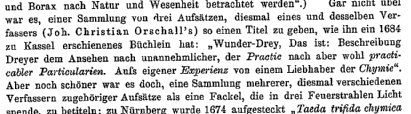
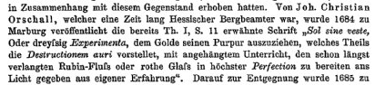
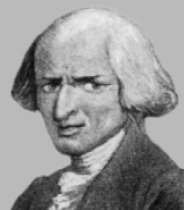
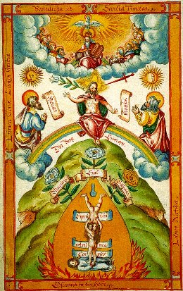
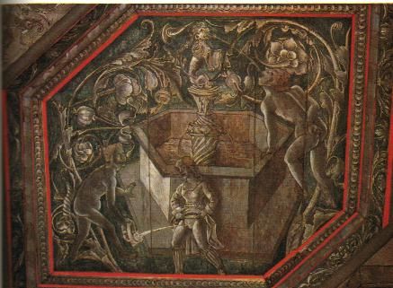
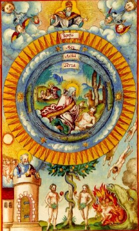
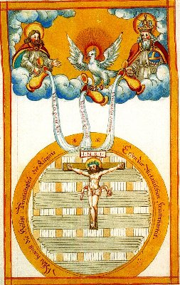
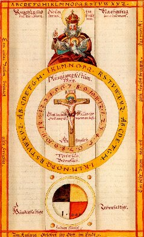
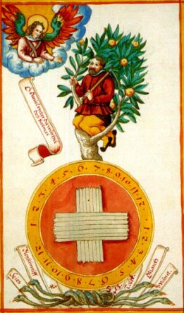

<!DOCTYPE html PUBLIC "-//W3C//DTD HTML 4.01 Transitional//EN"><html><head><meta charset="utf-8">
  <title>Sol Sine Veste</title>
  
  <meta content="Johan Christian Orschall" name="author">
  <meta content="gen&egrave;se du pourpre de Cassius" name="description"><link rel="stylesheet" href="../barre.css"><script src="../barre.js" defer></script></head><body style="background-image: url(file:///C:/herve/new_web/paper.GIF);"><div class="replica-note"><a href="../index.html">Hervé Delboy — alchimie</a> · <a href="../sommaire.html">Sommaire</a> · <a href="../recherche.html">Recherche</a> · <a href="../notice.html">Notice</a></div>

<div style="text-align: center; color: rgb(153, 0, 0); margin-left: 40px;">
</div>
<div style="text-align: center; color: rgb(153, 0, 0); margin-left: 40px;">
</div>

<div style="text-align: center; color: rgb(153, 0, 0); margin-left: 40px;">
</div>
<div style="text-align: center; color: rgb(153, 0, 0); margin-left: 40px;">
</div>
<div style="text-align: center; color: rgb(153, 0, 0); margin-left: 40px;">
</div>
<div style="text-align: center; color: rgb(153, 0, 0); margin-left: 40px;">
</div>
<div style="text-align: center; color: rgb(153, 0, 0); margin-left: 40px;">
</div>
<div style="text-align: center; color: rgb(153, 0, 0); margin-left: 40px;">
</div>
<div style="text-align: center; color: rgb(153, 0, 0); margin-left: 40px;">
</div>
<div style="text-align: center; color: rgb(153, 0, 0); margin-left: 40px;">
</div>
<p style="text-align: center; color: rgb(153, 0, 0); margin-left: 40px;" class="MsoNormal"><big><big><span style="font-size: 12pt; font-family: Arial Black; font-weight: 700;"><big><big><big>SOL
<span style="color: rgb(0, 0, 153);">S</span>INE <span style="color: rgb(204, 153, 51);">V</span>ESTE</big></big></big><br>
<small><small>OU&nbsp;
<br>
<big><big>TRENTE EXP&Eacute;RIENCES Sur la couleur Pourpre de l'Or.</big></big></small></small></span> <br>
</big></big></p>
<p style="text-align: center; color: rgb(153, 0, 0); margin-left: 40px;" class="MsoNormal"><b><span lang="fr"><font size="5">JC ORSCHALL</font></span></b></p>

<div style="text-align: center; margin-left: 40px;">
</div>
<p style="text-align: center; margin-left: 40px;" class="MsoNormal"><span lang="fr"><b>avec</b></span></p>
<div style="text-align: center; margin-left: 40px;">
</div>
<div style="text-align: center; margin-left: 40px;">
</div>
<div style="text-align: center; margin-left: 80px;">
</div>
<p style="text-align: center; margin-left: 80px;" class="MsoNormal"><small><span lang="fr"><b>Quelques conjectures sur la destruction de l'or et une
instruction pour faire dans la plus grande perfection de faux Rubis ou
du verre rouge</b></span></small></p>
<p style="text-align: center; margin-left: 80px;" class="MsoNormal">Traduit
de l'allemand par le baron Holbach<br>
</p>
<div style="text-align: center; margin-left: 80px;">
</div>
<div style="text-align: center; margin-left: 40px;"><span style="font-weight: bold;" lang="fr"><br>
</span><a href="../original/textes-divers.html"></a><a href="../original/etain.html"></a><br>
<span style="font-weight: bold;" lang="fr">
<br>
</span>
<div style="text-align: left; margin-left: 40px;"><small style="font-family: helvetica,arial,sans-serif;"><font size="2">revu
le 18 janvier 2004</font></small><span style="font-weight: bold;" lang="fr"><br>
</span><font face="Verdana, Arial, Helvetica, sans-serif"><!-- eStat -->


<!-- /eStat --> </font><br>
<span style="font-weight: bold;" lang="fr">
</span></div>
<hr style="width: 50%; height: 5px;">
</div>
<p style="text-align: left; margin-left: 80px;" class="MsoNormal"><span style="font-weight: bold;"><a  name="Introduction"></a>Introduction </span>:&nbsp; <small><span style="font-weight: bold; font-style: italic;">Sol Sine Veste</span></small>
signifie - litt&eacute;ralement - <small><span style="font-weight: bold; font-style: italic;">le Soleil sans
v&ecirc;tement</span></small>.
C'est dire qu'il s'agit de l'or mis &agrave; nu, ou encore, de
mani&egrave;re plus explicite, d'exp&eacute;riences ayant trait
&agrave; l'ouverture de l'or. Mais voil&agrave; qui est encore trop
implicite pour des esprits modernes. Aussi devons-nous ajouter qu'il
s'agit d'exp&eacute;riences sur les moyens de r&eacute;soudre l'or en
sels : c'est donc des dissolutions auriques qu'il est question. Nous en
avons d&eacute;j&agrave; parl&eacute; dans la section consacr&eacute;e
&agrave; la <a href="../original/etain.html">voie humide</a>. Nous y revenons ici
parce que <small><span style="font-weight: bold; font-style: italic;">Sol
Sine Veste</span></small> est un trait&eacute; original &agrave; plus d'un
titre. Qu'on en juge :</p>
<p style="text-align: left; margin-left: 80px;" class="MsoNormal">- ce
n'est pas un trait&eacute; d'alchimie ;<br>
- l'auteur n'est pas Adepte ;<br>
- ce qu'Orschall a en vue est la pr&eacute;paration du pourpre d'or ;<br>
- il vise &agrave; la pr&eacute;paration du rubis factice ;<br>
- c'est donc de notre point de vue un opuscule spagyrique ;<br>
- il semble parfois r&eacute;dig&eacute; &laquo; en direct &raquo;,
c'est-&agrave;-dire qu'Orschall y traite de ses exp&eacute;riences en
n'omettant aucun d&eacute;tail technique ;<br>
- mais Orschall n'est pas chimiste de m&eacute;tier et ses
exp&eacute;riences tiennent parfois lieu des &laquo; mille brouilleries
&raquo; qu'&eacute;voque complaisamment le pseudo-Flamel dans ses <small><a href="../original/fig-hier.html"><span style="font-weight: bold; font-style: italic;">Figures
Hi&eacute;roglyphiques</span></a></small> ;<br>
- il parle ouvertement de ses proc&eacute;d&eacute;s techniques ; <small><span style="font-weight: bold; font-style: italic;">Sol Sine Veste</span></small>
nous aide donc &agrave; entrer dans ce processus &eacute;trange
o&ugrave; l'on voit l'alchimiste faire pour ainsi dire corps avec sa
mati&egrave;re au point qu'il semble en perdre le sens critique pour
participer d'une symbiose &eacute;trange dont tout esprit critique est
absent ; pour autant Orschall ne semble point dupe de lui-m&ecirc;me -
ce qui peut d'ailleurs signifier que l'Adeptat n'&eacute;tait pas son
but - et signale en maints endroits ses &eacute;checs ;<br>
- nous retrouvons, au fil de ces <small><span style="font-weight: bold; font-style: italic;">XXX Exp&eacute;riences</span></small>
bien des
substances que nous avons &agrave; maintes reprises
&eacute;voqu&eacute;es : le <a href="../original/salpetre.html">salp&ecirc;tre</a>,
l'<a href="../original/sulf-potasse.html">arcanum duplicatum</a>, le
<a href="../original/sulf-potasse.html">sel admirable</a> de Glauber, les sels
d'&eacute;tain et d'autres encore,
participent de ce singulier ballet &laquo; chymique. &raquo;<br>
</p>
<p style="text-align: left; margin-left: 80px;" class="MsoNormal"><small><span style="font-weight: bold; font-style: italic;">Sol Sine Veste</span></small>
semble avoir &eacute;t&eacute; r&eacute;dig&eacute; avant 1684 par
Johann Christian Orschall : <span style="font-weight: bold; font-style: italic;"><small>Sol Sine Veste oder
Drey&szlig;ig
Experimenta dem Gold seinen Purpur auszuziehen &amp; mit
angeh&auml;ngtem
Unterricht den &amp; Rubin-Flu&szlig; oder Rothe Gla&szlig; in
h&ouml;chster Perfektion zu
bereiten</small>. </span>O.O., 1720. Pbd. m. Rsch., 1 Bl., 60, 44 S. mit 8
Holzschn.-Taf. in Rotdruck. 2400,-<small> Vgl. Ferguson II, 156 ff.
- <span style="font-weight: bold; font-style: italic;">Ungemein
seltene illustrierte Ausgabe mit dem Anhang von Chr.
Scheiner: "Apelles post tabulam observans &amp; ."</span> Ferguson
unbekannt. -
Unbeschn.</small><font size="-1">- Augspurg:
Koppmayr, 1684. <br>
<br>
<big>Orschall &eacute;tait un m&eacute;tallurgiste ; on conna&icirc;t
de lui des </big></font><small><span style="font-weight: bold; font-style: italic;">Oeuvres
M&eacute;tallurgique de M. Jean-Christian Orschall, Inspecteur des
Mines de S.A.S. le Land-Grave de Hesse-Cassel. Contentant I. L'Art de
la Fonderie; II. Un Trait&eacute; de la Liquation; III. Un
Trait&eacute; de la
Mac&eacute;ration des Mines; IV. Le Trait&eacute; des Trois Merveilles</span></small>;
Traduit de
l'Allemand. A Paris: Chez Hardy 1760. <br>
Sur le plan strictement alchimique, il est cit&eacute; &agrave; deux
reprises par Kopp dans son Histoire de l'alchimie [<font color="#000000"><small><span style="font-weight: bold; font-style: italic;">Die Alchemie vom
letzten Viertel des 18. Jahrhunderts</span></small>, </font><font color="#000000">&eacute;d. de Hildesheim ; New York : G. Olms, 1971.
21 cm. ISBN 3-487-04077-8Fac-sim. de l'&eacute;d. de Heidelberg :
[s.n.], 1886]<br>
</font></p>
<div style="text-align: center; margin-left: 40px;"><font color="#000000"><br>
Hermann Kopp, <span style="font-style: italic;">Betitelung von
Sammel-Werken</span>, p. 338<br>
<br>
<br>
Hermann Kopp, <span style="font-style: italic;">Betitelung nach
gegenst&auml;nden der Ver. Naturreiche</span>, p. 372<br>
<br>
</font>
<div style="text-align: left; margin-left: 40px;">Orschall &eacute;tait
un ancien inspecteur g&eacute;n&eacute;ral
des mines du Landgrave de Hesse-Cassel d'o&ugrave; il avait
&eacute;t&eacute;
remerci&eacute; pour ne pas avoir r&eacute;ussi &agrave; rendre les
mines
plus efficaces ou m&ecirc;me les plus efficaces d'Europe, t&acirc;che
pour laquelle
il avait &eacute;t&eacute; engag&eacute;. On l'accusait
&eacute;galement
de boisson et de polygamie, bien que son renvoi soit plut&ocirc;t le
fait
de la jalousie de ses coll&egrave;gues. Il &eacute;crivit un livre sur
la m&eacute;tallurgie publi&eacute; en 1687&nbsp; &agrave; Cassel <small><span style="font-weight: bold; font-style: italic;">Ars
Fusoria Fundamentalis Experimentalis</span></small> puis disparut ; on pense
qu'il
mourut dans un couvent en Pologne. Un peu alchimiste, il pratiquait des
exp&eacute;riences sur l'or et, un jour qu'il versait de l'or en
solution
dans de l'eau r&eacute;gale, comme il n'avait pas d'autre vaisseau, il
prit une bassine en &eacute;tain. Celle-ci se teinta de pourpre.
Orschall
&eacute;tait en relation avec Cassius fils et essaya
l'exp&eacute;rience
devant lui, mais sans succ&egrave;s. Il lui expliqua alors l'histoire
de
la vaisselle d'&eacute;tain, sur quoi Cassius lui demanda de garder le
silence. Tout cela est narr&eacute; dans le <small><span style="font-weight: bold; font-style: italic;">Sol Sine Veste</span></small>. Il n'est pas certain qu'Orschall ait obtenu le meilleur pourpre de
Cassius qui soit ! Mais l&agrave; comme souvent ailleurs, le hasard l'a
bien servi
en lui faisant utiliser un vase d'&eacute;tain dans lequel il disposa
une teinture d'or contenant de l'eau r&eacute;gale. <small><span style="font-weight: bold; font-style: italic;">Sol Sine Veste</span></small>
se retrouve aussi dans un ouvrage, r&eacute;dig&eacute; au
d&eacute;part par Antonio
Neri et intitul&eacute; : <span style="font-weight: bold; font-style: italic;"><br>
<br><small>
Art de la verrerie, de Neri, Merret et Kunckel, Auquel on a
ajout&eacute;
Le sol sine veste d'Orschall; l'Helioscopium videndi sine veste solem
chymicum; le Sol non sine veste</small></span> [<small style="color: rgb(102, 0, 0);">par Christophe Grummet</small>];<small><span style="font-weight: bold; font-style: italic;"> le Chapitre
XI. du Flora saturnizans de Henckel, sur la vitrification des
v&eacute;g&eacute;taux;
un m&eacute;moire sur la maniere de faire le saffre</span></small> [<small style="color: rgb(102, 0, 0);">par m.
Zimmerman</small>]; <small><span style="font-weight: bold; font-style: italic;">Le
secret des vraies porcelaines de la Chine et de Saxe</span></small>.
Ouvrages...
traduits de l'allemand, par M.D. *** [<small style="color: rgb(102, 0, 0);">Par Heinrich Dietrich Freiherr
von Holbach</small>.]- Paris: Durand &amp; Pissot 1752.<br>
<br>
L'Art de la verrerie est
divis&eacute; en deux parties. La premi&egrave;re comprend les <small><span style="font-weight: bold; font-style: italic;">VII livres</span></small>
d'Antoine
Neri, les <span style="font-weight: bold; font-style: italic;"><small>notes</small> </span>de
Merret sur Neri, les <small><span style="font-weight: bold; font-style: italic;">observations </span></small>de
Kunckel sur ces
deux auteurs. La seconde publi&eacute;e par Knuckel est un recueil de
plusieurs op&eacute;rations relatives &agrave; l'<small><span style="font-weight: bold; font-style: italic;">Art de la Verrerie</span>.&nbsp;
</small><span style="font-weight: bold; font-style: italic;"><small>Ouvrages ou
l'on trouvera la mani&egrave;re de faire le Verre et le Crystal, d'y
porter
des couleurs; d'imiter les Pierres Pr&eacute;cieuses, de
pr&eacute;parer et colorer
les &Eacute;maux, de faire la Potasse, de peindre sur le verre, de
pr&eacute;parer
des vernis, de composer des Couvertes pour les Fayances et les
Poteries, d'extraire la couleur Pourpre de l'Or, de contrefaire les
Rubis, de faire la Saffre, de faire et peindre les Porcelaines, etc..</small><br>
<br>
</span>Vaste programme, on en conviendra, et qui a de quoi
r&eacute;jouir le coeur d'un vrai disciple d'Herm&egrave;s.
H&eacute;las, Orschall ne para&icirc;t pas avoir &eacute;t&eacute;
anim&eacute; d'intentions v&eacute;ritablement scientifiques et son ton
semble surtout &ecirc;tre celui d'un souffleur ou d'un spagyriste.
N&eacute;anmoins, les techniques d&eacute;crites permettent
d'&eacute;clairer souvent, et d'une fa&ccedil;on singuli&egrave;re,
maints d&eacute;tails abscons de trait&eacute;s d'alchimie
v&eacute;ritable. Les couleurs sont
not&eacute;es et leur succession pr&eacute;sente parfois
d'&eacute;tranges relations avec la succession de celles que
d&eacute;crivent les alchimistes dans leurs trait&eacute;s. Il nous
reste un mot &agrave; dire du baron d'Holbach &agrave; qui l'on
doit la traduction fran&ccedil;aise du <small><span style="font-weight: bold; font-style: italic;">Sol Sine Veste</span></small>. <font face="commscripttt"><font face="times new roman"><font face="times new roman"><font face="times new roman"><br>
<br>
</font></font></font></font>
<div style="text-align: center;"><font face="commscripttt"><font face="times new roman"><font face="times new roman"><font face="times new roman"></font></font></font></font><br>
</div>
<font face="commscripttt"><font face="times new roman"><font face="times new roman"><font face="times new roman"><br><span style="font-family: helvetica,arial,sans-serif;">
Le
baron Paul Henri Tiry d'Holbach est d'origine allemande, du Palatinat,
r&eacute;gion frontali&egrave;re bilingue. Il na&icirc;t en 1723
&agrave; Edesheim. Il fait ses
&eacute;tudes &agrave; Leyde en Hollande. Il se fixe
d&eacute;finitivement &agrave; Paris en 1748.
Il &eacute;pouse d'abord sa cousine, Basile d'Aine, puis, apr&egrave;s
sa mort en
1754, la soeur de celle-ci, Charlotte. Il est &agrave; la t&ecirc;te
d'une grande
fortune qu'accro&icirc;tront encore les h&eacute;ritages de son oncle
et de son
beau-p&egrave;re, ce qui lui permet de consacrer exclusivement sa vie
aux
travaux de l'esprit.</span><span style="font-family: helvetica,arial,sans-serif;"> Il s'int&eacute;resse &agrave; la chimie et &agrave; la
min&eacute;ralogie et traduit d'importants
ouvrages latins, anglais, su&eacute;dois et allemands. Il traduit
notamment
Stahl, Hobbes, Swift etc. [</span><small style="font-family: helvetica,arial,sans-serif; color: rgb(102, 0, 0);">cf. <a href="../original/plan-chevreul.html">Histoire de la Chimie de Hoefer</a>,
critique de Chevreul</small><span style="font-family: helvetica,arial,sans-serif;">]</span><span style="font-family: helvetica,arial,sans-serif;"> Il s'engage surtout dans l'aventure de l'</span><small><i style="font-weight: bold; font-family: helvetica,arial,sans-serif;">Encyclop&eacute;die</i></small><span style="font-family: helvetica,arial,sans-serif;">
(&agrave; partir de 1751) et &eacute;crit des articles de chimie, de
min&eacute;ralogie et
de m&eacute;tallurgie. La science allemande est alors tr&egrave;s
avanc&eacute;e et un
hommage lui est rendu dans l'avertissement du second tome de l'</span><i style="font-family: helvetica,arial,sans-serif;">Encyclop&eacute;die</i><span style="font-family: helvetica,arial,sans-serif;">.
Il &eacute;crit aussi des articles de philosophie, les articles </span><small><i style="font-family: helvetica,arial,sans-serif; font-weight: bold;">Pr&ecirc;tres</i><span style="font-family: helvetica,arial,sans-serif; font-weight: bold;">,
</span><i style="font-family: helvetica,arial,sans-serif; font-weight: bold;">Repr&eacute;sentant</i></small><span style="font-family: helvetica,arial,sans-serif;"> (pris au sens politique&nbsp;: est-ce que la
volont&eacute; peut se repr&eacute;senter&nbsp;?), </span><small><i style="font-family: helvetica,arial,sans-serif; font-weight: bold;">Th&eacute;ocratie</i><span style="font-family: helvetica,arial,sans-serif; font-weight: bold;">,
</span><i style="font-family: helvetica,arial,sans-serif; font-weight: bold;">Marabout</i></small><span style="font-family: helvetica,arial,sans-serif;"> et d&eacute;nonce toutes sortes de religions.
L'interdiction de l'</span><i style="font-family: helvetica,arial,sans-serif;">Encyclop&eacute;die</i><span style="font-family: helvetica,arial,sans-serif;"> l'engage en effet dans
la lutte antireligieuse. En 1761, est publi&eacute; </span><small><i style="font-weight: bold; font-family: helvetica,arial,sans-serif;">Le christianisme d&eacute;voil&eacute;</i><span style="font-family: helvetica,arial,sans-serif;">.</span></small><span style="font-family: helvetica,arial,sans-serif;"> Autour de d'Holbach s'organise ce que les adversaires des
Lumi&egrave;res ont appel&eacute; </span><i style="font-family: helvetica,arial,sans-serif;">&laquo;&nbsp;<small style="color: rgb(102, 0, 0);">la secte ou coterie
holbachiste&nbsp;</small>&raquo;</i><span style="font-family: helvetica,arial,sans-serif;">. Il est aussi surnomm&eacute; </span><i style="font-family: helvetica,arial,sans-serif;">&laquo;&nbsp;<small style="color: rgb(102, 0, 0);">le
ma&icirc;tre d'h&ocirc;tel de la philosophie</small>&nbsp;&raquo;</i><span style="font-family: helvetica,arial,sans-serif;"> parce
qu'il a l'habitude de r&eacute;unir &agrave; sa table les grands
philosophes de son temps.</span><span style="font-family: helvetica,arial,sans-serif;"> Rejetant le mod&egrave;le politique anglais comme corrompu, il est
partisan
des insurg&eacute;s d'Am&eacute;rique (et sera m&ecirc;me plus tard
l'ami de Benjamin
Franklin).</span><span style="font-family: helvetica,arial,sans-serif;"> Son ouvrage essentiel, </span><small><i style="font-weight: bold; font-family: helvetica,arial,sans-serif;">Le syst&egrave;me
de la nature</i></small><span style="font-family: helvetica,arial,sans-serif;">
para&icirc;t en 1770 sous le nom de Mirabeau, un ami de D'Holbach mort
en
1760. L'ouvrage est imm&eacute;diatement condamn&eacute; &agrave; la
lac&eacute;ration et au feu et
est mis &agrave; l'index. Jusqu'&agrave; la mort de d'Holbach il ne
sera &eacute;dit&eacute; que
sous nom d'emprunt.</span><span style="font-family: helvetica,arial,sans-serif;"> Il &eacute;crit encore, jusqu'en 1776, des essais de morale et de
politique&nbsp;: </span><small><i style="font-weight: bold; font-family: helvetica,arial,sans-serif;">Id&eacute;es naturelles
oppos&eacute;es aux id&eacute;es surnaturelles</i> </small>(1772),<small> <i style="font-weight: bold; font-family: helvetica,arial,sans-serif;">Le syst&egrave;me social</i></small><span style="font-family: helvetica,arial,sans-serif;"><small> </small>(1773), </span><small><i style="font-weight: bold; font-family: helvetica,arial,sans-serif;">L'Ethocratie</i></small><span style="font-family: helvetica,arial,sans-serif;"> (1776).</span><span style="font-family: helvetica,arial,sans-serif;"> Il meurt en janvier 1789, l'ann&eacute;e m&ecirc;me de la
R&eacute;volution fran&ccedil;aise. [<small style="color: rgb(102, 0, 0);">site consult&eacute; :<big> </big></small></span><small style="font-family: helvetica,arial,sans-serif;"><a href="https://web.archive.org/web/20040820185830/http://perso.wanadoo.fr/sos.philosophie/" target="_blank" rel="noopener">http://perso.wanadoo.fr/sos.philosophie/</a></small><span style="font-family: helvetica,arial,sans-serif;">]</span><br style="font-family: helvetica,arial,sans-serif;">
<br style="font-family: helvetica,arial,sans-serif;"><span style="font-family: helvetica,arial,sans-serif;">
Holbach traduisit plusieurs trait&eacute;s allemands :</span><br>
</font></font></font></font><br>
1. <i><small><span style="font-weight: bold;">Art de la Verrerie de Neri,
Merret, et Kunckel</span></small> (Paris, Durand, 1752).<small> Original work in
Italian. Latin translation by Christopher Merret. German translation by
J. Kunckel of L&ouml;wenstern. Holbach's translation comprises the</small> <small><span style="font-weight: bold;">seven books of Antionio Neri</span>, <span style="font-weight: bold;">Merret's notes on Neri</span>, <span style="font-weight: bold;">Kunckel's observations on both these
authors, his own experiments and others relative to glass-making</span>.
</small><br>
</i>
<p>[<small><span style="color: rgb(0, 102, 0);">The translation was
dedicated to Malesherbes who had desired to see the best German
scientific works published in French. In his </span>Pr&eacute;face du
Traducteur<span style="color: rgb(0, 102, 0);"> Holbach writes:</span></small>
</p>
<p style="color: rgb(0, 0, 153);"><small><span style="font-style: italic;">L'envie de me rendre utile, dont tout
citoyen doit &ecirc;tre anim&eacute;, m'a fait entreprendre l'ouvrage
que je pr&eacute;sente au Public. S'il a le bonheur de m&eacute;riter
son approbation, quoiqu'il y ait peu de gloire attach&eacute;e au
travail ingrat et fastidieux d'un Traducteur, je me d&eacute;terminerai
&agrave; donner les meilleurs ouvrages allemands, sur l'Histoire
Naturelle, la Min&eacute;ralogie, la M&eacute;tallurgie et la Chymie.
Tout le monde sait que l'Allemagne possede en ce genre des
tr&eacute;sors qui ont &eacute;t&eacute; jusqu'ici comme enfouis pour
la France.<big>]</big></span> </small></p>
<p>2. <small><i style="font-weight: bold;">Min&eacute;ralogie ou Description
g&eacute;n&eacute;rale du r&egrave;gne mineral par J. G. Wallerius</i></small>
(Paris, Durand, 1753) followed by <small><i style="font-weight: bold;">Hydrologie</i></small><span style="font-weight: bold;"> </span><small>by the same author. Second
edition, Paris, Herrissant, 1759. Originally in Swedish (Wallerius was
a professor of chemistry in the University of Upsala). German
translation by J. D. Denso, Professor of Chemistry, Stargard,
Pomerania. </small><br>
</p>
<p>[<small><span style="color: rgb(0, 102, 0);">Holbach's translation
was made from the German edition which Wallerius considered preferable
to the Swedish. He was assisted by Bernard de Jussien and Rouelle, and
the work was dedicated to a friend and co-worker in the natural
sciences, Monsieur d'Arclais de Montamy</span></small>.] </p>
<p>3. <small><i style="font-weight: bold;">Introduction &agrave; la
Min&eacute;ralogie... oeuvre posthume de M. J. F. Henckel</i>,</small> Paris,
Cavelier, 1756, <small>first published under title<i style="font-weight: bold;">Henckelius in Mineralogi&acirc; redivivus</i></small> ,
Dresden, 1747, by his pupil, M. Stephani, as an outline of his lectures.<br>
</p>
<p>[<span style="color: rgb(0, 102, 0);"> <small>Holbach's translation
made from a German edition, corrected, with notes on new discoveries
added</small></span>.] </p>
<p>4. <small><i style="font-weight: bold;">Chimie m&eacute;tallurgique... par
M. C. Gellert</i>.</small> Paris, Briasson, 1758, translated earlier.
<small>Approbation May 1, 1753, Privilege Dec. 21, 1754. Originally a text
written by Gellert for four artillery officers whom the King of
Sardinia sent to Freyburg to learn mining-engineering.</small> </p>
<p>5. <small><i style="font-weight: bold;">Trait&eacute;s de physique,
d'histoire naturelle, de mineralogy et de m&eacute;tallurgie</i>.</small>
Paris, Herrissant, 1759, by J. G. Lehmann, three vols. I. <small><span style="font-weight: bold; font-style: italic;">L'Art des Mines</span></small>,
II. <small><span style="font-weight: bold; font-style: italic;">Trait&eacute;
de la formation des m&eacute;taux</span></small>, III. <small><span style="font-weight: bold; font-style: italic;">Essai d'une histoire
naturelle des couches de la terre</span>. </small><br>
</p>
<p>[<small><span style="color: rgb(0, 102, 0);">In his preface to the
third volume Holbach has some interesting remarks about the deluge, the
irony of which seems to have escaped the royal censor, Millet, </span><i style="color: rgb(0, 102, 0);">Docteur en Th&eacute;ologie</i>.</small>
</p>
<p style="color: rgb(0, 0, 153);"><small><span style="font-style: italic;">La description si pr&eacute;cise et si
d&eacute;taill&eacute;e que Mo&iuml;se fait du Deluge dans la
Gen&egrave;se, ayant une autorit&eacute; infaillible, puis qu'elle
n'est autre que celle de Dieu m&ecirc;me, nous rend certains de la
r&eacute;alit&eacute; et de l'universalit&eacute; de ce ch&acirc;timent
terrible. Il s'agit simplement d'examiner si les naturalistes, tels que
Woodward, Schenchzer, Buttner et M. Lehmann lui-m&ecirc;me ne se sont
points tromp&eacute;s, lorsqu'ils ont attribu&eacute; &agrave; cet
&eacute;v&eacute;nement seul la formation des couches de la terre et
lorsqu'ils s'en sont servis pour expliquer l'&eacute;tat actuel de
notre globe. Il semble que rien ne doit nous emp&ecirc;cher d'agiter
cette question; l'Ecriture sainte se contente de nous apprendre la voie
miraculeuse dont Dieu s'est servi pour punir les crimes du genre
humain; elle ne dit rien qui puisse limiter les sentiments des
naturalistes sur les autres effets physiques que le d&eacute;luge a pu
produire. C'est une mati&egrave;re qu'elle paro&icirc;t avoir
abandonn&eacute;e aux disputes des hommes." He then proceeds to
question whether the deluge could have produced the results attributed
to it and argues against catastrophism which, it must be remembered,
was the received geological doctrine down to the days of Lyell. "Les
causes les plus simples sont capables de produire au bout des
si&egrave;cles les effets les plus grands, surtout lorsqu'elles
agissent incessament; et nous voyons toutes ces causes r&eacute;unies
agir perp&eacute;tuellement sous nos yeux. Concluons, donc, de tout ce
qui pr&eacute;c&egrave;de, que le d&eacute;luge, seul et les feux
souterrains seuls ne suffisent point pour expliquer la formation des
couches de la terre. On risquera toujours de se tromper, lorsque par
l'envie de simplifier on voudra d&eacute;river tous les
ph&eacute;nom&egrave;nes de la nature d'une seule et unique cause.</span><big>]</big>
</small></p>
<p>6. <small><i style="font-weight: bold;">Pyritologie</i> </small>by J. F. Henkel,
Paris, Herrissant, 1760, a large volume in quarto, translated by
Holbach. It contains <small><i style="font-weight: bold;">Flora Saturnisans</i>
</small>(translated by M. Charas and reviewed by M. Roux), Henkel's <small><i style="font-weight: bold;">Opuscules Min&eacute;ralogiques</i></small> and
other treatises. Original editions: <small><i style="font-weight: bold;">Pyritologia</i>,
</small>Leipzig, 1725, 1754; <small><i style="font-weight: bold;">Flora Saturnisans</i>,</small>
Leipzig, 1721; <small><i style="font-weight: bold;">De Appropriatione Chymica</i></small>,
Dresden, 1727, and <small><i style="font-weight: bold;">De Lapidum origine</i></small>,
Dresden, 1734, translated into German, with excellent notes, Dresden,
1744, by M. C. F. Zimmermann, a pupil of M. Henkel. <br>
</p>
<p>[<small style="color: rgb(0, 102, 0);">Holbach's translations seem
to have been well received because he writes in this preface:</small> <br>
</p>
<p><small style="color: rgb(0, 0, 153);"><span style="font-style: italic;">Je m'estimerai heureux si mon travail peut
contribuer &agrave; entretenir et augmenter le go&ucirc;t universel
qu'on a con&ccedil;u pour le saine physique</span></small>.] </p>
<p>7. <small><i style="font-weight: bold;">Oeuvres m&eacute;tallurgiques</i>
</small>de M. J. C. Orschall, Paris, Hardy, 1760. Orschall still accepted the
old alchemist tradition but was sound in practice and was the best
authority on copper. <br>
</p>
<p>[<small style="color: rgb(0, 102, 0);" color="">Holbach does not
attempt to justify his physics which was that of the preceding century.
Orschall was held in high esteem by Henckel and Stahl.</small>] </p>
<p>8. <small><i style="font-weight: bold;">Recueil des m&eacute;moires des
Acad&eacute;mies d'Upsal et de Stockholm</i></small> , Paris, Didot, 1764.
<small>These records of experiments made in the Royal Laboratories of Sweden,
founded in 1683 by Charles XI, had already been translated into German
and English. </small><br>
</p>
<p>[<small style="color: rgb(0, 102, 0);">Holbach's translation was
made from the German and Latin. He promises further treatises on
Agriculture, Natural History and Medicine</small>.] </p>
<p>9. <small><i style="font-weight: bold;">Trait&eacute; du Soufre</i></small> by G.
E. Stahl, Paris, Didot, 1766. In speaking of Stahl's theories Holbach
says: <br>
</p>
<p><small style="color: rgb(0, 0, 153);"><span style="font-style: italic;">Il ne faut pas croire que ces
connaissances soient des v&eacute;rit&eacute;s st&eacute;riles propres
seulement &agrave; satisfaire une vaine curiosit&eacute;, elles ont
leur application aux travaux de la m&eacute;tallurgie qui leur doivent
la perfection o&ugrave; on les a port&eacute;s depuis quelques temps. </span></small><br>
</p>
<p>[<small style="color: rgb(0, 102, 0);">Holbach understood very
clearly the utility of science in his scheme of increasing the store of
human well-being, and would doubtless have translated other useful
works had not other interests prevented. There is a MSS. note of his in
the Biblioth&egrave;que Nationale to M. Malesherbes, then
Administrateur de la Librairie Royale; suggesting other German
treatises that might well be translated. (MSS. 22194)</small>.]<br>
</p>
<p style="text-align: center;">----------------------------------------------------<br>
</p>
<p>Nous avons cru utile d'ajouter des planches tir&eacute;es d'un MSS
intitul&eacute; <small><span style="font-weight: bold; font-style: italic;">Humide
Radicale</span>
</small>: car c'est bien d'un <a href="../original/humide-radical.html">humide radical</a>
&eacute;l&eacute;mentaire dont
Orschall nous entretient, puisque son but avou&eacute;, in fine, est de
soutirer la teinture de l'or. Entreprise chim&eacute;rique, qui fait
r&ecirc;ver le coeur de l'homme. Le pr&eacute;sent texte peut
&ecirc;tre trouv&eacute; dans le site : <small><a href="https://web.archive.org/web/20040820185830/http://librairiedumerveilleux.com" target="_blank" rel="noopener">la Librairie du Merveilleux</a></small>.
Nous en avons &ocirc;t&eacute; les nombreuses coquilles.<br>
</p>
<p><small style="color: rgb(102, 0, 0);"><span style="text-decoration: underline;"><a  name="notes_de_John_Ferguson_dans_sa"></a>notes de John Ferguson dans sa <a href="../original/bibliot-phil-chim.html"><span style="font-weight: bold; font-style: italic;">Bibliotheca Chemica</span></a></span>
: Beckmann tells us that Orschall was at Dresden, in 1582, in the
service of Johann Heinrich Rudolf from whom he acquired, in particular,
the method of amalgamation by which be made money in Bohemia. He
afterwards became a mining officer in Hesse, but got into tremble "by
polygamy and other irregularities," and died in a monastery io Poland.
To what Beckmann has said, Strieder has added that Orschall was
appointed on Dec. 39, 1684, by Count Carl, to be Mining Inspector at
Frankenberg, because he had promised to make the mine there one of the
best and most complete in the whole empire, by his skill and
experience, in the course of two or three years. This, however, he was
not able to accomplish, and he was discharged apparently in 1687, and
then vanished without leaving a trace behind him, though Strieder says
he appears to have been at Cassel in 1688. He was the author of several
books, in addition to the above. The following are reported :
Wunderdrey d. i. <span style="font-weight: bold; font-style: italic;">Beschreibung
dreyer dem Anseben nach unannehmlicher, der Practic nach aber wohl
practicabler Particularien, aus eigener Experientz von einem Liebhaber
der Chymie</span>, Augsb., 1684, 12&deg;; Cassel, 1696-8, 1737, 1753,
12&deg;. - Wunderdreyes Continuatio . . ., 1686, 12&deg; ; Cassel,
1737, 12&deg;. On p. 6, the author refers to a <span style="font-weight: bold; font-style: italic;">Historia Metallorum</span> by him, which is possibly that published by David Kellner: <span style="font-weight: bold; font-style: italic;">Praxis metallica curiosa, oder curieus angestellte und experimentirte Schmelz-proben von einem wohlerfahrnen Erzk&uuml;ndiger</span>, Nordhausen, 1693, 8&deg;; 1701,8&deg; ; 1707, 8&deg;. - <span style="font-weight: bold; font-style: italic;">Ars fusoria fundamentalis et experimentalis</span>, d.i. <span style="font-weight: bold; font-style: italic;">gr&uuml;ndliche
und aus Erfahrenheit stammende Schmeltz-Kunst, oder gr&uuml;ndlicher
Unterricht vom Rohschmeltzen, R&ouml;sten und Seigern, aus sondebahren
Ursachen herausgegeben vom Hoch-F&uuml;rstl</span>. Hess. Berg- und
H&uuml;ttenwerks-Inspectore [without his namel Casael, 1689, 12&deg;;
1730. 12&deg;; 1750. 12&deg;. Leopold calls it a rare book which gives
sound instruction on the subject. In <span style="font-weight: bold; font-style: italic;">Sol sine Veste</span>,
Beckmann says he gave a clearer account of the making of ruby glass
than any one before him, though It was from Cassius he learned how to
make gold-purple by means of tin, and glass containing this substance
had been manufactured to some extent. He made attempts to extract a
purple colour out of gold without the gold itself. Stahl, referring to
the fall treatment of certain topics by Cassius to his book on gold,
adds: <span style="font-style: italic; color: rgb(0, 0, 153);">Cui tamen rnerito adjungitur libellus laude sua nequaquam privandus sub titulo, Sol sine veste</span>.
Stahl apparently did not know the author's name, but esteemed the booh.
His little tract was attacked in several publications: 'Apelles post
tabulam observans maculas in sole sine veste.'&nbsp; 'A worthless
production.' ' Helioscopium videndi sine veste solem chymicum." 'Sol
non sine veste,' by Christopher Grummet (q.v.), to whom Orschall's work
has sometimes been erroneously allocated. These are contained in
Holbach's French translation of Neri, Merret, and Kunckel, 1752.
Orschall's works appeared in French: <span style="font-weight: bold; font-style: italic;">Oeuvres M&eacute;tallurgiques . . . contenant</span>&nbsp; I. <span style="font-weight: bold;">l'art de la fonderie</span>; II. <span style="font-weight: bold;">un trait&eacute; de liquation</span>; IIl. <span style="font-weight: bold;">un </span><span style="font-weight: bold;">trait&eacute; de la mac&eacute;ration des mines</span>; IV.<span style="font-weight: bold;"> le trait&eacute; des trois mervellles</span>
. . . Paris, . .. 1760. 12&deg;, pp. xxxij- 394 [I, 1 blank], folding
plate. Strieder mentions an edition of 1761. The translator is said to
have been Demachy. Fictuld says that if the author I. C. 0., who was
unknown to him, meant only to make ruby-glass, he bad nothing to say
against it, but If he meant that by his process one could attain to the
Hermetic tincture and get the philosophers'stone out of gold, It was
mere deception, and he bad much better have burnt his experiments than
have published them to the world. It is curious that Fictuld should not
have known Orschall by name. The author ot 'Apelles,' in 1684, calls
him J. C. 0. throughout, until on the last page be states that white
his tractlet was in the press lie had got positive information that the
author of 'Sol sine veste' was Johann Christian Orschall. But Fictuld
may have missed this.</small>

















<br>
</p>

<br>
<b><font color="#000099"><font size="-1"></font></font></b></div>
</div>
<p style="text-align: left; margin-left: 80px;" class="MsoNormal">
</p>
<hr style="height: 5px; width: 50%;">
<p style="text-align: left; margin-left: 80px;" class="MsoNormal"><br>
</p>
<div style="text-align: center; margin-left: 40px;">
<span style="font-size: 12pt; font-family: Arial; font-weight: 700;">PR&Eacute;FACE</span></div>
<div style="text-align: left; margin-left: 80px;">
</div>
<p style="text-align: left; margin-left: 80px;" class="MsoNormal"><span style="font-size: 12pt; font-family: Arial;">&nbsp;</span></p>
<div style="text-align: left; margin-left: 80px;">
</div>
<p style="text-align: left; margin-left: 80px;" class="MsoNormal">
<span style="font-size: 12pt; font-family: Arial;">Je vais vous
communiquer, cher lecteur, quelques exp&eacute;riences sur l'or [<small style="font-weight: bold; color: rgb(102, 0, 0);"><small>pour tout ce qui concerne l'or, voyez
la section consacr&eacute;e au <a href="../original/etain.html">pourpre de Cassius</a>
et aux strass color&eacute;s</small></small>&nbsp;&nbsp; ] qui pourront contribuer
&eacute;galement &agrave; votre plaisir et<i> </i>&agrave; votre
utilit&eacute;; elles ont pour objet la destruction [<small style="font-weight: bold; color: rgb(102, 0, 0);"><small>entendez la dissolution ou
transformation en chaux m&eacute;tallique</small></small>] de ce
m&eacute;tal qu'on a tant cherch&eacute;e de nos jours et qu'on
cherchera vraisemblablement encore longtemps.</span></p>
<div style="text-align: left; margin-left: 80px;">
</div>
<p style="text-align: left; margin-left: 80px;" class="MsoNormal"><span style="font-size: 12pt; font-family: Arial;">&nbsp;</span></p>
<div style="text-align: left; margin-left: 80px;">
</div>
<p style="text-align: left; margin-left: 80px;" class="MsoNormal">
<span style="font-size: 12pt; font-family: Arial;">Si vous me demandez
ce que je pense de cette op&eacute;ration, je vous r&eacute;pondrai que
je ne la nie ni ne l'assure: je sais seulement qu'on ne tirera jamais
d'un corps tous les avantages que l'on d&eacute;sire, sans sa
destruction<i> </i>qui ne peut &ecirc;tre produite que par l'action du
feu; et &nbsp;ne serois point &eacute;tonn&eacute; qu'on adm&icirc;t la
possibilit&eacute; de cette destruction; qu'on en reconn&ucirc;t le
symbole dans le Phoenix [<small style="font-weight: bold; color: rgb(102, 0, 0);"><small>voir
le <a href="../original/poeme-phenix.html"><span style="font-style: italic;">Po&egrave;me du
Ph&eacute;nix</span></a> attribu&eacute; &agrave; Lactance ; et aussi
les <span style="font-style: italic;">Chansons
Intellectuelles</span> de Michel Maier</small></small>] des Anciens,
qui, apr&egrave;s avoir &eacute;t&eacute; r&eacute;duit en cendres,
revient de nouveau &agrave; la vie &amp; se reproduit en plusieurs
milliers de petits phoenix; qu'on imagin&acirc;t que, si nous pouvions
venir &agrave; bout de br&ucirc;ler ce beau phoenix (ou l'or), nous
parviendrions ensuite &agrave; la d&eacute;couverte tant
d&eacute;sir&eacute;e de la Pierre Philosophale [<small style="font-weight: bold; color: rgb(102, 0, 0);"><small>Les
Philosophes herm&eacute;tiques ont &eacute;tabli cette
possibilit&eacute;, pourvu que l'on se tourne vers la face positive de
l'alchimie, telle que Chevreul l'a mise en &eacute;vidence, dans le
&sect;89 de son <a href="../original/idee-alchimique-2.html"><span style="font-style: italic;">R&eacute;sum&eacute; de
l'Histoire de la Mati&egrave;re</span></a></small> <small>;
il ne nous semble, h&eacute;las, y avoir d'autre alternative et l'on
serait &laquo; envieux &raquo; si l'on affirmait le contraire</small></small>];
qu'on ajout&acirc;t qu'il ne s'agit que de le r&eacute;duire en
cendres; qu'il n'importe nullement de quelle mani&egrave;re
l'op&eacute;ration se fasse: que, soit que ce f&ucirc;t par la voie
humide [<small style="font-weight: bold; color: rgb(102, 0, 0);"><small>c'est la voie des
chlorures stanniques, celle qui conduit au pourpre de Cassius</small></small>]
ou s&egrave;che [<small style="font-weight: bold; color: rgb(102, 0, 0);"><small>c'est la
voie des agents min&eacute;ralisateurs comme l'<a href="../original/sulf-potasse.html">arcanum duplicatum</a> ou l'Eau Divine de
Zosime, cf. <a href="../original/reincrud.html">r&eacute;incrudation</a> et <a href="../original/prima-materia.html">historique</a></small></small>], soit que ce
f&ucirc;t par la voie froide ou chaude, on pourroit se flatter d'avoir
atteint le but qu'on se propose, si l'on avoit une fois la solution
radicale de l'or; car on poss&eacute;deroit d&eacute;s lors le vrai <i>mercure
des Philosophes </i>[<small style="font-weight: bold; color: rgb(102, 0, 0);"><small>il
faudrait entendre par l&agrave; l'humide radical m&eacute;tallique de
l'or ; Fulcanelli, dans les <span style="font-style: italic;">DM</span>,
pr&eacute;vient l'&eacute;tudiant de ce que ce m&eacute;tal ne le
poss&egrave;de plus et de ce que le vif-argent vulgaire ne l'a jamais
eu. Comme toujours, les remarques de Fulcanelli doivent &ecirc;tre
comprises par malice mais le grand Adepte semble ne s'&ecirc;tre jamais
montr&eacute; envieux. Quoi qu'il en soit, la solution radicale de l'or
ne serait pas le mercure des philosophes, corps composite selon nos
supputations,cf. <a href="../original/imitat-prec.html">Mercure</a></small></small>]<i>.</i></span></p>
<div style="text-align: left; margin-left: 80px;">
</div>
<p style="text-align: center; margin-left: 80px;" class="MsoNormal"><span style="font-size: 12pt; font-family: Arial;">&nbsp;<br>
<small><small>FIGURE I<br>
(<span style="font-style: italic;"><span style="font-weight: bold;">De
Humido Radicali,</span> Martin Sturtz, 1597, Ms. K II 8, UB Basel,
Benedicta Sic Sancta Trinitas</span>)</small></small></span></p>
<p style="margin-left: 80px; text-align: left;" class="MsoNormal"><span style="font-size: 12pt; font-family: Arial;"><small><small>
[<span style="color: rgb(102, 0, 0);">on voit la Lune et le Soleil, pos&eacute;s en attitude spirituelle
&eacute;lev&eacute;e, tourn&eacute;s vers le M&eacute;diateur.
L'&eacute;pi de bl&eacute; - du c&ocirc;t&eacute; du Soleil - et
l'&eacute;p&eacute;e - du c&ocirc;t&eacute; de la Lune - disent assez
quel emploi l'Artiste devra faire de ses mati&egrave;res
pr&eacute;par&eacute;es. Pos&eacute; en forme d'arc-en-ciel, l'artifice
du Mercure qu'on devine par les couleurs superpos&eacute;es, toutes
choses qu'a pu voir un </span><a href="../original/mss-newton.html" style="color: rgb(102, 0, 0);">Newton</a><span style="color: rgb(102, 0, 0);"> ou un </span><a href="../original/symb-dir-prim.html" style="color: rgb(102, 0, 0);">Boyle</a><span style="color: rgb(102, 0, 0);">...
Ajoutons les roses ; et en bas, l'all&eacute;gorie de la
R&eacute;surrection, avec la formation du Rebis ; le tout mis en sorte
d'oeuf philosophique, avec de surcro&icirc;t, un matras qui ne laisse
plus de doute quant &agrave; l'op&eacute;ration qui est vis&eacute;e
ici. Tout en haut, et pour l'instant bien loin de l'horizon de
l'Artiste, le Ciel firmamental que nous promet </span><a href="../original/introitus.html" style="color: rgb(102, 0, 0);">Philal&egrave;the</a>]</small></small><br>
</span></p>

<div style="text-align: left; margin-left: 80px;">
</div>
<p style="text-align: left; margin-left: 80px;" class="MsoNormal">
<span style="font-size: 12pt; font-family: Arial;">Je n'entreprendrai
point ici l'&eacute;num&eacute;ration de tous les moyens sophistiques
que j'ai vu employer pendant le cours de ma vie pour parvenir &agrave;
la destruction de l'or; (car j'ai &eacute;t&eacute; &eacute;lev&eacute;
d&eacute;s ma plus tendre jeunesse dans les travaux de la Chimie, &amp;
je puis dire sans exag&eacute;rer que j'ai fait des choses
singuli&egrave;res en ce genre). Entre les charlatans que j'ai
d&eacute;masqu&eacute;s, l'un avoit un dissolvant, l'autre une poudre;
mais examinoit-on la chose au grand jour, ce n'&eacute;tait qu'une
dissolution de la nature de celles qu'on aurait p&ucirc; obtenir avec
l'eau r&eacute;gale [<small style="color: rgb(102, 0, 0);"><small>cf. <a href="../original/etain.html">voie humide</a> sur l'eau r&eacute;gale</small></small>],
et&nbsp; que je d&eacute;signe&nbsp; en g&eacute;n&eacute;ral par le
nom de <i>Division, </i>parce que ce n'est autre chose que l'or
divis&eacute; en tr&egrave;s-petites parties [<small style="font-weight: bold; color: rgb(102, 0, 0);"><small>chose
parfaitement bien comprise ; l'or y est &agrave; l'&eacute;tat de
m&eacute;tal tr&egrave;s divis&eacute;, mais non point &agrave; celui
de l'&eacute;tat d'une dissolution radicale ; voyez dans la <a href="../original/etain.html">voie humide</a> les dissolvants classiques de l'or</small></small>];
op&eacute;ration qui toutefois exigeroit plus de peine qu'on ne se
l'imagine, si on se la proposoit par la voie du phoenix [<small style="font-weight: bold; color: rgb(102, 0, 0);"><small>on
l'imagine sans peine, puisque cette op&eacute;ration n'est autre que la
Grande Coction qui, dans un premier temps, dissout absolument tout -
phase de noirceur ou de putr&eacute;faction - et dans un second temps,
qui coagule : elle correspond alors &agrave; la phase d'assation -
d&eacute;crite par Fulcanelli - de la voie s&egrave;che ; nous ne
voyons pas ce que l'or viendrait y faire</small></small>]. Quant
&agrave; celle des dissolvants, je regarde la multitude de ceux qu'on
emploie sur l'or comme fort inutile, &amp; je reviens, cher Lecteur,
&agrave; l'all&eacute;gorie du Phoenix [<small style="font-weight: bold; color: rgb(102, 0, 0);"><small>Outre ses <span style="font-style: italic;">Chansons Intellectuelles</span>,
M. Maier en parle &eacute;videmment dans cette somme qui s'appelle l'<a href="../original/atalanta-fugiens.html"><span style="font-style: italic;">Atalanta fugiens</span></a></small></small>].
On trouve dans les anciens Po&egrave;tes &amp; Philosophes, que le
Phoenix, apr&egrave;s avoir ramass&eacute; une quantit&eacute; de
toutes sortes d'aromates, se place sur ce b&ucirc;cher, que les
mati&egrave;res en sont allum&eacute;es par le Soleil, &amp; qu'il se
consume lui-m&ecirc;me; hi&eacute;roglyphes vides de sens [<small style="font-weight: bold; color: rgb(102, 0, 0);"><small>Dom Pernety s'en est fait
l'&eacute;cho dans ses <span style="font-style: italic;">Fables Egyptiennes et
Grecques</span> d'une part, et dans son <span style="font-style: italic;">Dictionnaire
Mytho-herm&eacute;tique</span> d'autre part</small></small>], ou qui
nous indiquent assez clairement, ce me semble, de ne point chercher
dans les choses &eacute;trang&egrave;res, ce qu'il faut tirer de la
chose m&ecirc;me; instructions qu'ils ont encore enferm&eacute;es dans
cette esp&egrave;ce d'apophtegme, <small style="color: rgb(0, 102, 0);"><i>ne
cherchez ni dans les plantes ni dans les animaux, ni dans la graisse,
ni dans les m&eacute;taux ni dans les sels ? O&ugrave; faut-il donc
chercher ? Nulle part; car c'est de lui-m&ecirc;me ou de son semblable,
ou de ce qui lui est le </i><span style="font-style: italic;">plus </span><i>proche
qu' il faut l'emprunter. </i>[<small style="font-weight: bold; color: rgb(102, 0, 0);"><small>Certes
! Mais alors o&ugrave; prendre cette prima materia ? Nous aiderons
l'&eacute;tudiant en lui conseillant de revoir ce que le pseudo Flamel
raconte au sujet de l'aspect du livre d'Abraham Juif - livre qui, par
parenth&egrave;se, n'a jamais exist&eacute; que dans l'imagination de
l'auteur -</small></small><span style="font-weight: bold; color: rgb(102, 0, 0);"> </span><small style="font-weight: bold; color: rgb(102, 0, 0);"><small>cf.
<a href="../original/fig-hier.html"><span style="font-style: italic;">Figures
Hi&eacute;roglyphiques</span></a>
- mais ce n'est que demi mensonge d'affirmer, comme le fait Orschall,
que c'est &agrave; ce qui est le plus proche qu'il faut emprunter la
bonne mati&egrave;re ; mais il faut savoir alors qu'il s'agit soit de
mati&egrave;res d&eacute;j&agrave; pr&eacute;par&eacute;es, auquel cas
les recommandations de l'auteur sont inutiles puisque l'Artiste a
d&eacute;j&agrave; trouv&eacute; ces mati&egrave;res ; soit que ces
mati&egrave;res inter agissent d&eacute;j&agrave; les unes sur les
autres, ce qui est - au moins - affirmer qu'elle est alors leur forme.
La forme de le mati&egrave;re est chose essentielle chez l'alchimiste :
c'est dire &agrave; quel point il peut &ecirc;tre difficile, comme on
l'a soulign&eacute; ailleurs, de d&eacute;crire en termes
r&eacute;ductifs des processus dynamiques -</small></small>]<i><br>
</i></small></span></p>
<div style="text-align: left; margin-left: 80px;">
</div>
<p style="text-align: left; margin-left: 80px;" class="MsoNormal"><span style="font-size: 12pt; font-family: Arial;">&nbsp;</span></p>
<div style="text-align: left; margin-left: 80px;">
</div>
<p style="text-align: left; margin-left: 80px;" class="MsoNormal">
<span style="font-size: 12pt; font-family: Arial;">Il est donc assez
inutile de se tourmenter pour avoir des dissolvants. Si ce que nous
cherchons est invisible, &amp; si nous le cherchons o&ugrave; il n'est
pas, quelle utilit&eacute; tirerons nous de notre travail ? Je ne
pr&eacute;tends pas donner &agrave; entendre par ce que je viens de
dire, qu'il faille chercher la chose dans l'or; ce n'est pas l&agrave;
ma pens&eacute;e; je veux seulement que nous fassions le possible pour
trouver la mani&egrave;re de br&ucirc;ler le Phoenix par
lui-m&ecirc;me; &amp; c'est ce dont je traiterai dans la suite plus
amplement. [<small style="font-weight: bold; color: rgb(102, 0, 0);"><small>C'est
annoncer par l&agrave; tout le programme de l'oeuvre ; voil&agrave;
quelques lignes qui, pour un &eacute;tudiant poss&eacute;dant
d&eacute;j&agrave; quelque teinture de science, constituent un fil
d'Ariane s&ucirc;r, lui permettant de se rendre jusqu'&agrave; la salle
centrale o&ugrave; il devra affronter le Minotaure. Mais, et c'est
l&agrave; l'essentiel, nul Amer, pour l'heure, ne lui permetrra de
retourner sur se spas, c'es-&agrave;-dire, d'op&eacute;rer la <a href="../original/reincrud.html">r&eacute;incrudation</a>.</small></small>]<br>
</span></p>
<div style="text-align: left; margin-left: 80px;">
</div>
<p style="text-align: left; margin-left: 80px;" class="MsoNormal"><span style="font-size: 12pt; font-family: Arial;">&nbsp;</span></p>
<div style="text-align: left; margin-left: 80px;">
</div>
<p style="text-align: left; margin-left: 80px;" class="MsoNormal">
<span style="font-size: 12pt; font-family: Arial;">Pour ne pas
m'&eacute;tendre ici en discours superflus, je d&eacute;clarerai
d'abord qu'une destruction de l'or dont je ne fais aucun cas, c'est
celle de laquelle on dit qu'apr&egrave;s l'avoir obtenue, il n'est plus
possible de remettre l'or en un corps. Un Italien qui s'&eacute;toit
arr&ecirc;t&eacute; quelque temps &agrave; Nuremberg pr&eacute;tendoit
avoir ce secret, &amp; se vantoit de pouvoir tellement d&eacute;truire
l'or, qu'il n'&eacute;toit plus possible de le r&eacute;duire [<small style="font-weight: bold; color: rgb(102, 0, 0);"><small>il s'agissait, autrement dit,
d'une solution aurique telle que celles &eacute;voqu&eacute;es dans
notre <a href="../original/etain.html">voie humide</a> <small><small>-</small></small>
L'auteur &eacute;voque-t-il Fr&eacute;d&eacute;ric Ulstade, l'auteur
bien connu du <span style="font-style: italic;">Coelum
philosophorum</span>
? On sait, en effet, que cet auteur vantait particuli&egrave;rement les
propri&eacute;t&eacute;s de l'or potable ainsi que de l'eau de vie.
Nous ne saurions bien s&ucirc;r suivre Ulstade sur les
propri&eacute;t&eacute;s organoleptiques de l'or soi disant potable des
vieux alchimistes, qui n'a nul rapport avec les sels d'or que nous
employons dans le traitement de certains rhumatismes inflammatoires
chroniques -</small></small>]. Un homme d'esprit lui demanda &agrave;
quoi ce secret &eacute;toit bon. Un autre lui dit que la meilleure
mani&egrave;re de travailler sur l'or &eacute;toit d'amasser force
ducats dans sa bourse. Ce Virtuose estimoit ce secret 1 000 ducats;
mais personne n'en voulant &agrave; ce prix, ni &agrave; aucun autre,
il l'aurait volontiers donn&eacute; pour rien. Je ne fais donc aucun
cas d'un secret qui d&eacute;truit l'or au point qu'il n'y a plus moyen
d'en refaire un corps, &amp; je crois m&ecirc;me que cela n'est pas
possible. Qu'on me donne un corps d&eacute;truit de cette sorte et on
verra si je ne lui rendrai pas bient&ocirc;t son existence. Je n'ai
d'autre garant &agrave; offrir au Lecteur de ce que j'avance que la
parole d'un homme qui a travaill&eacute; en Chimiste tant qu'il a
v&eacute;cu, &amp; qui a r&eacute;ussi en beaucoup de choses.
J'expliquerai ici la <i><small style="color: rgb(0, 102, 0); font-weight: bold;">pr&eacute;cipitation
rouge de l'or</small>: </i>
lorsque je la fis pour la premi&egrave;re fois, je crus avoir pris,
comme on dit, la pie-au-nid; mais quand j'examinai mieux la chose, je
me trouvai bien loin de compte.</span></p>
<div style="text-align: left; margin-left: 80px;">
</div>
<p style="text-align: left; margin-left: 80px;" class="MsoNormal"><span style="font-size: 12pt; font-family: Arial;">&nbsp;</span></p>
<div style="text-align: left; margin-left: 80px;">
</div>
<p style="text-align: left; margin-left: 80px;" class="MsoNormal">
<span style="font-size: 12pt; font-family: Arial;">Apr&egrave;s ce
pr&eacute;ambule dont on se serait bien pass&eacute;; je finis en
assurant que ce qui m'a d&eacute;termin&eacute; &agrave; rendre ce
mir&eacute; si court, c'est que je me propose, quand j'aurai plus de
loisir, d'en &eacute;crire un tr&egrave;s &eacute;tendu, &amp; de
d&eacute;duire plus au long ce que je ne fais ici qu'effleurer en
passant. S'il se trouve des gens qui, par ignorance ou par un
d&eacute;sir insatiable d'avoir tout &agrave; la fois, m'objectent que
je pouvais me dispenser de me mettre &agrave; l'ouvrage pour si peu de
choses; je leur fermerai la bouche avec la r&eacute;ponse du
c&eacute;l&egrave;bre Sabinus. Ce savant homme, apr&egrave;s avoir
servi Dieu &amp; &eacute;clair&eacute; le monde par sa science &amp;
son &eacute;rudition en qualit&eacute; de Professeur &agrave; Konisberg
en Prusse, forma le dessein de laisser &agrave; la
post&eacute;rit&eacute; un petit Ouvrage, &amp; &agrave;
s'acqu&eacute;rir en m&ecirc;me tems une gloire immortelle; ses
&eacute;crits &eacute;taient bons: mais un railleur entreprit de jeter
du ridicule sur leur bri&egrave;vet&eacute;, &amp; lui demanda,
pourquoi il n'avoir pas compos&eacute; un grand et bel ouvrage &agrave;
l'exemple d'Hom&egrave;re et de Virgile; Sabinus repoussa cette
impertinente question, en observant que les Boeufs, les Anes, les
Vaches &amp; les Mulets, n'aimaient point &agrave; boire dans de petits
ruisseaux, mais dans de grandes eaux troubles telles que celles du
Danube, de l'Elbe, &amp; du Rhin, qu'il en &eacute;tait autrement des
gens d'esprit; qu'ils aimaient &agrave; se d&eacute;salt&eacute;rer
&agrave; de petites sources o&ugrave; l'eau est plus pure &amp; plus
d&eacute;licate que dans ces grandes Rivi&egrave;res, le
r&eacute;ceptacle de routes sortes d'immondices.</span></p>
<div style="text-align: left; margin-left: 80px;">
</div>
<p style="text-align: left; margin-left: 80px;" class="MsoNormal"><span style="font-size: 12pt; font-family: Arial;">&nbsp;</span></p>
<div style="text-align: left; margin-left: 80px;">
</div>
<p style="text-align: left; margin-left: 80px;" class="MsoNormal">
<span style="font-size: 12pt; font-family: Arial;">Si d'autres ajoutent
qu'il n'y a point de lucre &agrave; tirer de cet &eacute;crit, je leur
dirai, apprenez, (&ocirc; avares insatiables) que vous &ecirc;tes des
aveugles &amp; que vous m&eacute;ritez le sort de Millas, puisque vous
pr&eacute;f&eacute;rez la richesse &agrave; la science que l'on
acquiert par l'&eacute;tude de la nature; semblables &agrave; ce Roi
ignorant qui pr&eacute;f&eacute;rait le flageolet de Pan au luth
d'Apollon.</span></p>
<div style="text-align: left; margin-left: 80px;">
</div>
<p style="text-align: left; margin-left: 80px;" class="MsoNormal">
<span style="font-size: 12pt; font-family: Arial;">&nbsp;</span></p>
<div style="text-align: left; margin-left: 80px;">
</div>
<p style="text-align: left; margin-left: 80px;" class="MsoNormal">
<span style="font-size: 12pt; font-family: Arial;">Au reste, qu'on loue
ou qu'on bl&acirc;me cet Ouvrage; cela m'est &eacute;gal. Le jugement
que chacun en portera fera conna&icirc;tre sa fa&ccedil;on de penser,
sans rien changer &agrave; la mienne.</span></p>
<div style="text-align: left; margin-left: 80px;">
</div>
<p style="text-align: left; margin-left: 80px;" class="MsoNormal"><span style="font-size: 12pt; font-family: Arial;">&nbsp;</span></p>
<div style="text-align: left; margin-left: 80px;">
</div>
<p style="text-align: left; margin-left: 80px;" class="MsoNormal">
<span style="font-size: 12pt; font-family: Arial;">Quant &agrave; vous,
Lecteur, qui aim&eacute;s les Sciences &amp; les Arts, &agrave; peine
aurez vous lu ce trait&eacute; que vous en aurez la suite. J'ai pris
pour devise, ce que l'on dit aux enfants &agrave; l'&eacute;cole, qu<i>e
<small style="color: rgb(0, 102, 0); font-weight: bold;">celui qui
m&eacute;prise les petites choses ne m&eacute;rite pas celles qui sont
les plus</small></i><small style="color: rgb(0, 102, 0); font-weight: bold;">
</small><i><small style="color: rgb(0, 102, 0); font-weight: bold;">importantes</small>.
</i>Si cet Ouvrage vous est agr&eacute;able, je vous en promets un plus
consid&eacute;rable &amp; je ne tarderai pas &agrave; vous tenir parole.<br>
<br>
</span></p>
<div style="text-align: left; margin-left: 80px;">
</div>
<div style="text-align: left; margin-left: 80px;">
</div>
<div style="text-align: left; margin-left: 80px;">
</div>
<div style="text-align: left; margin-left: 80px;">
</div>
<div style="text-align: left; margin-left: 80px;">
</div>
<p style="text-align: left; margin-left: 80px;" class="MsoNormal"><b>
<span style="font-size: 12pt; font-family: Arial;">VALE VIVE ET JUDICA
BENE.</span></b></p>
<div style="text-align: left; margin-left: 80px;">
</div>
<div style="text-align: left; margin-left: 80px;">
</div>
<div style="text-align: left; margin-left: 80px;">
</div>
<div style="text-align: left; margin-left: 80px;">
</div>
<div style="text-align: left; margin-left: 80px;">
</div>
<p style="text-align: left; margin-left: 80px;" class="MsoNormal"><span style="font-size: 12pt; font-family: Arial;">&nbsp;</span><br>
<small style="color: rgb(0, 0, 153);"><small><small><i style="font-weight: bold;"><span style="font-size: 12pt; font-family: Arial;">Quoelibet res nihil
praestare potest praeter id quod in se est &micro; continet.<br>
<br>
Geber</span></i></small></small></small></p>
<div style="text-align: left; margin-left: 80px;">
</div>
<p style="text-align: left; margin-left: 80px;" class="MsoNormal">
<span style="font-size: 12pt; font-family: Arial;">&nbsp;</span></p>
<div style="text-align: left; margin-left: 80px;">
</div>
<div style="text-align: left; margin-left: 80px;">
</div>
<div style="text-align: left; margin-left: 80px;">
</div>
<div style="text-align: left; margin-left: 80px;">
</div>
<div style="text-align: left; margin-left: 80px;">
</div>
<div style="text-align: left; margin-left: 80px;">
</div>
<div style="text-align: left; margin-left: 80px;">
</div>
<div style="text-align: left; margin-left: 80px;">
</div>
<div style="text-align: left; margin-left: 80px;">
</div>
<div style="text-align: left; margin-left: 80px;">
</div>
<div style="text-align: left; margin-left: 80px;">
</div>
<div style="text-align: left; margin-left: 80px;">
</div>
<div style="text-align: left; margin-left: 80px;">
</div>
<div style="text-align: left; margin-left: 80px;">
</div>
<div style="text-align: left; margin-left: 80px;">
</div>
<div style="text-align: left; margin-left: 80px;">
</div>
<div style="text-align: left; margin-left: 80px;">
</div>
<div style="text-align: left; margin-left: 80px;">
</div>
<div style="text-align: left; margin-left: 80px;">
</div>
<div style="text-align: left; margin-left: 80px;">
</div>
<div style="text-align: left; margin-left: 80px;">
</div>
<p style="text-align: left; margin-left: 80px;" class="MsoNormal">
<span style="font-size: 12pt; font-family: Arial;"><span style="font-weight: bold;">SOL SINE VESTE L'OR NUD ; OU TRENTE
EXP&Eacute;RIENCES Sur la couleur Pourpre de l'Or</span><br>
</span></p>
<p style="text-align: left; margin-left: 80px;" class="MsoNormal"><span style="font-size: 12pt; font-family: Arial;"><br>
</span></p>
<div style="text-align: left; margin-left: 80px;">
</div>
<div style="text-align: left; margin-left: 80px;">
</div>
<div style="text-align: left; margin-left: 80px;">
</div>
<div style="text-align: left; margin-left: 80px;">
</div>
<div style="text-align: left; margin-left: 80px;">
</div>
<p style="text-align: left; margin-left: 80px;" class="MsoNormal">
<span style="font-size: 12pt; font-family: Arial;">Nous pourrions
commencer par discourir sur l'origine de l'or, sur sa formation et sa
perfection; mais comme tous les Livres qui parlent des min&eacute;raux
sont remplis de ces sortes de dissertassions, j'y renvoye le Lecteur.
Il y trouvera les &eacute;claircissements que l'on peut esp&eacute;rer
sur cette mati&egrave;re. Je n'entreprends donc point ici
d'&eacute;claircir la nature de l'or, et je ne veux entrer en dispute
avec personne sur l'essence de ce m&eacute;tal, car <small style="font-weight: bold; color: rgb(0, 102, 0);"><span style="font-style: italic;">quoi capita, rot sententiae</span></small>.
[<small style="font-weight: bold; color: rgb(102, 0, 0);"><small>on
peut conseiller plusieurs articles de chimie sur l'origine de l'or ou
sa formation ; il ne saurait &eacute;videmment s'agir soit que
d'articles ant&eacute;rieurs aux &eacute;crits de Lavoisier, pour ce
qui concerne la &laquo; formation &raquo; de l'or, soit concernant sa
perfection, i.e. sa d&eacute;puration, que d'articles de fond, parmi
lesquels se distingue celui de Pierre Berthier, in <span style="font-style: italic;">Essais par la Voie
s&egrave;che</span></small></small><span style="font-weight: bold; color: rgb(102, 0, 0);">.</span>]<br>
</span></p>
<div style="text-align: left; margin-left: 80px;">
</div>
<p style="text-align: left; margin-left: 80px;" class="MsoNormal"><span style="font-size: 12pt; font-family: Arial;">&nbsp;</span></p>
<div style="text-align: left; margin-left: 80px;">
</div>
<p style="text-align: left; margin-left: 80px;" class="MsoNormal">
<span style="font-size: 12pt; font-family: Arial;">II est certain,
ainsi que la plupart des Auteurs l'assurent, que ce corps
pr&eacute;cieux a &eacute;t&eacute; form&eacute; du soufre le plus pur
et d'un mercure bien cuit, &agrave; l'aide du sel le plus subtil; il
est encore certain que l'or, le vin et l'homme sont les plus nobles
cr&eacute;atures du monde, qu'ils ont tous trois leur reine et qu'il y
a sympathie surprenante entre eux. J. Becher les range dans son Arbre
de la mani&egrave;re suivante: il met l'or dans le r&egrave;gne
min&eacute;ral, le vin dans le r&egrave;gne v&eacute;g&eacute;tal, le
serpent dans le r&egrave;gne animal et l'homme, <small style="color: rgb(0, 102, 0);"><span style="font-weight: bold; font-style: italic;">sicut microcosmus</span></small>,
comme &eacute;tant un petit monde, contient en lui-m&ecirc;me tout ce
qui se trouve dans ces trois r&egrave;gnes diff&eacute;rens.</span></p>
<div style="text-align: left; margin-left: 80px;">
</div>
<p style="text-align: left; margin-left: 80px;" class="MsoNormal"><span style="font-size: 12pt; font-family: Arial;">&nbsp;</span></p>
<div style="text-align: left; margin-left: 80px;">
</div>
<p style="text-align: left; margin-left: 80px;" class="MsoNormal">
<span style="font-size: 12pt; font-family: Arial;">Quelques-uns ont
tent&eacute; d'en tirer la pierre Philosophale tant souhait&eacute;e et
tant recherch&eacute;e, mais jusqu'&agrave; pr&eacute;sent, je n'ai
encore vu personne qui ait obtenu de ces substances quelque chose
d'utile, malgr&eacute; toutes les combinaisons et les &eacute;preuves
qu'on en a faites et principalement du vin. A cette occasion, je ne
veux pas passer sous silence ce qui dans un Monast&egrave;re
c&eacute;l&egrave;bre, un Religieux commit un crime pour lequel il fut
condamn&eacute; &agrave; mort. Le Pr&eacute;lat de ce tems, qui
&eacute;tait un curieux, promit au coupable de lui accorder la vie,
s'il pouvoir se r&eacute;soudre &agrave; souffrir tout ce que l'on
entreprendrait sur lui ; ce mis&eacute;rable ayant plus de peur de la
mort que de cous les tourments qu'il s'exposait &agrave; endurer,
accepta d'autant plus volontiers la proposition, qu'elle lui laissait
esp&eacute;rance d'&eacute;chapper ; on l'enferma; on e&ucirc;t soin de
le bien garder; on ne lui donna rien &agrave; boire ni &agrave; manger,
et on l'obligea pour toute nourriture de boire son urine aussit&ocirc;t
qu'il l'avait l&acirc;ch&eacute;e, ce qu'il fit jusqu'&agrave; vingt
fois. Une diette aussi rigoureuse r&eacute;duisit ce mis&eacute;rable
dans un &eacute;tat &agrave; faire piti&eacute;; car l'urine sortant
&agrave; la fin avec douleur le br&ucirc;loit vivement et vint la
derni&egrave;re fois tout-&agrave;-fait rouge. Cet homme, qui
auparavant &eacute;tait d'une bonne construction, qui avait de belles
couleurs et beaucoup d'esprit, perdit non-seulement tout son
embonpoint, mais devint si maigre qu'il n'&eacute;tait plus
reconnaissable; son visage &eacute;tait d&eacute;figur&eacute; comme
celui d'un mort; il avoir l'esprit &eacute;gar&eacute;, et il mourut le
quatri&egrave;me jour. Le pr&eacute;lat tenta des Exp&eacute;riences
sur cette urine et lui trouva la propri&eacute;t&eacute; d'un
dissolvant universel [<small><small style="color: rgb(0, 0, 153);">i<span style="font-weight: bold; color: rgb(102, 0, 0);">l
s'agissait de phosphates port&eacute;s &agrave; un point de
concentration &eacute;lev&eacute; du fait de la d&eacute;shydratation -
il semble que Canseliet parle d'un &eacute;pisode analogue dans ses </span><span style="font-style: italic; font-weight: bold; color: rgb(102, 0, 0);">Deux Logis Alchimiques</span><span style="font-weight: bold; color: rgb(102, 0, 0);">
:</span><br>
<br>
</small></small></span></p>
<div style="text-align: center; margin-left: 40px;"><span style="font-size: 12pt; font-family: Arial;"><small><small style="color: rgb(0, 0, 153);"><br>
FIGURE II<br>
(caisson du ch&acirc;teau du Plessis-Bourr&eacute;- la Fontaine
Ind&eacute;cente)<br>
</small></small></span>
</div>
<p style="text-align: left; margin-left: 80px;" class="MsoNormal"><span style="font-size: 12pt; font-family: Arial;"><small><small style="color: rgb(0, 0, 153);"><span style="font-weight: bold; color: rgb(102, 0, 0);">&laquo; </span><span style="font-weight: bold; color: rgb(0, 102, 0);">Certes
ces femmes ne se fussent pas commises, dans l'exp&eacute;rience
extravagante dont le souffleur illumin&eacute;, Duchanteau, tenta </span><br style="font-weight: bold; color: rgb(0, 102, 0);">
<span style="font-weight: bold; color: rgb(102, 0, 0);"><span style="color: rgb(0, 102, 0);">la r&eacute;pugnante
r&eacute;alisation. Comment l'auteur d'un petit livre qui se montre
cependant gros de sagesse et qui semble une clef du message de
Louis-Claude de Saint-Martin [ Le
Grand Livre de la Nature ou
l'Apocalypse philosophique et herm&eacute;tique. Ouvrage curieux dans
lequel on traite de la Philosophie occulte, de l'intelligence des
hi&eacute;roglyphes des anciens, de la Soci&eacute;t&eacute; des
Fr&egrave;res de la Rose-Croix, de la transmutation des m&eacute;taux
et de la communication de l'homme avec des &ecirc;tres
sup&eacute;rieurs, et interm&eacute;diaires entre lui et le Grand
Architecte. Vu par une Soci&eacute;t&eacute; de Ph... Inc... et
publi&eacute; par D... Depuis 1, Jusqu'&agrave; l'an 1790. Au midi et
de l'imprimerie de la V&eacute;rit&eacute;.] ; oui, comment se
put-il
que cet auteur en f&ucirc;t venu &agrave; ce dessein
&eacute;pouvantable ? Peut-&ecirc;tre par son &eacute;tonnante
conception de la pratique, pour l'accession rapide &agrave; la Pierre
Philosophale. En effet, il consid&eacute;rait que son corps
&eacute;tait le cohobatoire d'&eacute;lection, et il y distinguait la
mati&egrave;re, l'alambic et le feu, c'est-&agrave;-dire l'urine, le
conduit digestif et la naturelle chaleur. L'&eacute;laboration devenait
la plus simple qui f&ucirc;t ; il n'absorberait rien d'autre que son
urine, au fur et &agrave; mesure des quotidiennes mictions. En 1786,
&agrave; l'int&eacute;rieur de la loge Les Amis R&eacute;unis, il se
sortit sans mal d'une premi&egrave;re tentative que ses fr&egrave;res
alarm&eacute;s arr&ecirc;t&egrave;rent avant qu'elle dev&icirc;nt trop
mena&ccedil;ante. En compagnie d'amis moins sensibles, sinon moins
scrupuleux, il reprit aussit&ocirc;t son essai avort&eacute; et dont il
avait fix&eacute; la dur&eacute;e &agrave; six semaines. Le
seizi&egrave;me jour lui fut fatal, o&ugrave; une syncope l'emporta
presque instantan&eacute;ment.</span></span><span style="font-style: italic; font-weight: bold; color: rgb(102, 0, 0);"> </span><span style="font-weight: bold; color: rgb(102, 0, 0);">&raquo; (in </span><span style="font-style: italic; font-weight: bold; color: rgb(102, 0, 0);">La Fontaine
ind&eacute;cente</span><span style="font-weight: bold; color: rgb(102, 0, 0);">)</span> </small></small>]; apr&egrave;s avoir dissout
l'or radicalement, elle le faisait monter au haut du chapiteau dans la
distillation. Je laisse &agrave; chacun la libert&eacute; d'en croire
ce qu'il voudra; mais je dois observer en m&ecirc;me tems, qu'il n'est
pas difficile de faire monter l'or au haut du chapiteau par la
distillation; car quelque fixe et solide que soit ce m&eacute;tal de sa
nature, il s'&eacute;l&egrave;ve n&eacute;anmoins
tr&egrave;s-facilement, lorsque des sels acides et
p&eacute;n&eacute;trants l'entra&icirc;nent avec eux.</span></p>
<div style="text-align: left; margin-left: 80px;">
</div>
<p style="text-align: left; margin-left: 80px;" class="MsoNormal"><span style="font-size: 12pt; font-family: Arial;">&nbsp;</span></p>
<div style="text-align: left; margin-left: 80px;">
</div>
<p style="text-align: left; margin-left: 80px;" class="MsoNormal">
<span style="font-size: 12pt; font-family: Arial;">J'ai vu quelque
chose de semblable &agrave; <i>Freycinet </i>chez un Artiste fort
pr&eacute;venu de son m&eacute;rite; il me montra un chapiteau et des
r&eacute;cipients dans lesquels l'or avoir mont&eacute;; mais quant on
venait &agrave; examiner la chose, on s'appercevoit ais&eacute;ment que
ce n'&eacute;tait que de l'or dissout dans l'eau r&eacute;gale qui en
avoir &eacute;t&eacute; tir&eacute;e par l'alambique; l'on avoit
donn&eacute; un feu assez violent pour rendre rouges tous les
vaisseaux, ce qui avoit fait &eacute;lever l'or; mais il n'y avoit rien
&agrave; tirer de ce ph&eacute;nom&egrave;ne. Il me donna seulement
occasion de tenter l'Exp&eacute;rience suivante.</span></p>
<div style="text-align: left; margin-left: 80px;">
</div>
<p style="text-align: left; margin-left: 80px;" class="MsoNormal"><span style="font-size: 12pt; font-family: Arial;">&nbsp;</span></p>
<div style="text-align: left; margin-left: 80px;">
</div>
<p style="text-align: left; margin-left: 80px;" class="MsoNormal"><b>
<span style="font-size: 12pt; font-family: Arial;"><a  name="I&egrave;re_Exp&eacute;rience."></a>I<sup>&egrave;re</sup> Exp&eacute;rience.</span></b></p>
<div style="text-align: left; margin-left: 80px;">
</div>
<p style="text-align: left; margin-left: 80px;" class="MsoNormal"><span style="font-size: 12pt; font-family: Arial;">&nbsp;</span></p>
<div style="text-align: left; margin-left: 80px;">
</div>
<p style="text-align: left; margin-left: 80px;" class="MsoNormal">
<span style="font-size: 12pt; font-family: Arial;">Par ordre des
Ma&icirc;tres que je servais alors, je fis dissoudre un jour de l'or
dans de l'esprit de sel. [<small style="font-weight: bold; color: rgb(102, 0, 0);"><small>Berthier
assure qu'il est difficile de dissoudre l'or dans l'acide muriatique ;
selon Proust, l'acide muriatique tr&egrave;s concentr&eacute; et
bouillant dissout en petite quantit&eacute; l'or amen&eacute; &agrave;
l'&eacute;tat de division extr&ecirc;me</small></small>] J'employai
pour cela de l'or en feuilles tr&eacute;s minces, tel que celui que
l'on achet&eacute; chez les Batteurs d'or et dont on se sert pour
dorer; apr&egrave;s avoir fait dig&eacute;rer cette dissolution pendant
huit jours &agrave; une chaleur mod&eacute;r&eacute;e, je la mis
&agrave; distiller par la cornue, et j'en retirai doucement l'esprit de
sel; il resta au fond une chaux d'un jaune obscur [<small style="font-weight: bold; color: rgb(102, 0, 0);"><small>il se peut qu'il s'agisse de
protochlorure d'or, d'un jaune p&acirc;le ou de chlorure
m&ecirc;l&eacute; de sulfure</small></small>] qu'il f&ucirc;t
ais&eacute; de r&eacute;duire en un corps, mais qui ne fulmina pas.
J'&eacute;dulcorai cette chaux autant qu'il me fut possible; je la
m&ecirc;lai ensuite avec des fleurs de soufre; et apr&egrave;s l'avoir
fait rougir au feu, je retirai un beau pourpre d'or pareil &agrave;
celui que les Orf&egrave;vres employent, apr&egrave;s qu'ils l'ont
broy&eacute; en poudre tr&egrave;s fine et m&ecirc;l&eacute; avec trois
parties de beau verre blanc de Venise; en sorte que j'en fus
extr&ecirc;mement surpris. Nous ne n&eacute;glige&acirc;mes rien pour
porter nos recherches sur cette couleur aussi-loin qu'il nous f&ucirc;t
possible; nous vers&acirc;mes sur cette mati&egrave;re de nouvel esprit
de sel; et apr&egrave;s l'avoir laiss&eacute; dig&eacute;rer pendant
quelque temps, nous le retir&acirc;mes de nouveau par la distillation,
sans jamais cependant pousser l'extraction jusqu'&agrave;
siccit&eacute;; nous r&eacute;it&eacute;r&acirc;mes ce travail
jusqu'&agrave; huit diff&eacute;rences reprises; et lorsqu'&agrave; la
huiti&egrave;me fois nous voul&ucirc;mes pousser l'op&eacute;ration
jusqu'&agrave; siccit&eacute;, nous v&icirc;mes au plus fort
degr&eacute; du feu para&icirc;tre au col de la cornue, quelque goutes
rouges qui &agrave; cause de leur trop grande pesanteur ne montaient
qu'avec difficult&eacute;, nous revers&acirc;mes dessus tout ce qui
avoir pass&eacute; &agrave; la distillation ; nous le laiss&acirc;mes
en digestion beaucoup plus longtemps qu'auparavant, et nous
tir&acirc;mes enfin tous l'esprit de sel &agrave; un feu si violent
qu'il &eacute;tait capable de fondre et de rompre tous les vaisseaux.
II s'&eacute;leva, mais en petite quantit&eacute;, quelques goutes
rouges semblables &agrave; un beurre d'antimoine, [<small style="font-weight: bold; color: rgb(102, 0, 0);"><small>cf. le <a href="../original/char.html"><span style="font-style: italic;">Char Triomphal de
l'Antimoine</span></a>, attribu&eacute; &agrave; Basile Valentin</small></small>]
lesquelles cependant se laiss&egrave;rent dissoudre tr&egrave;s
facilement dans l'esprit de sel qui avoit pass&eacute; [<small style="font-weight: bold; color: rgb(102, 0, 0);"><small>on ne voit pas dans cette
op&eacute;ration autre chose que de la production de <a  name="sulfures_dor"></a>sulfures d'or</small></small>].
Nous r&eacute;p&eacute;t&acirc;mes souvent la m&ecirc;me chose
jusqu'&agrave; ce que nous eussions une certaine quantit&eacute; de
beurre d'or; nous cr&ucirc;mes que le caput mortuum qui &eacute;tait
rest&eacute; devoit &ecirc;tre blanc; mais nous nous tromp&acirc;mes;
il redev&icirc;nt or, quoiqu'avec bien de la peine; il est vrai qu'il
&eacute;tait fort p&acirc;le: nous conserv&acirc;mes notre beurre pour
d'autres op&eacute;rations; mais avant que d'en donner la description,
je veux raconter l'histoire suivante afin qu'on ne m'accuse pas de
fausset&eacute;, si cette Exp&eacute;rience ne r&eacute;ussit pas
d'abord &agrave; tout le monde.</span></p>
<div style="text-align: left; margin-left: 80px;">
</div>
<p style="text-align: left; margin-left: 80px;" class="MsoNormal"><span style="font-size: 12pt; font-family: Arial;">&nbsp;</span></p>
<div style="text-align: left; margin-left: 80px;">
</div>
<p style="text-align: left; margin-left: 80px;" class="MsoNormal">
<span style="font-size: 12pt; font-family: Arial;">Comme j'&eacute;tois
un jour chez un chimiste fameux et tr&egrave;s
exp&eacute;riment&eacute; dont j'omets le nom, on vint &agrave; parler
de la dissolution de l'or, et on dit entre-autres choses qu'elle se
faisoit dans l'esprit de sel. Ce Chimiste ne voulant pas le croire, je
lui soutins la chose sans faire r&eacute;flexion que, lorsque j'avois
ex&eacute;cut&eacute; cette exp&eacute;rience, j'avois employ&eacute;
un esprit de sel que j'avois achet&eacute; tout pr&eacute;par&eacute;
et tout rectifi&eacute;. Nous voul&ucirc;mes recommencer; et nous
pr&icirc;mes de l'esprit de sel que nous m&icirc;mes dans un vase avec
des feuillettes d'or; mais il ne se fit point de dissolution, et l'or
resta tel qu'il &eacute;toit. II faut donc remarquer que l'esprit de
sel simple ne dissout pas l'or. [<small style="font-weight: bold; color: rgb(102, 0, 0);"><small>cf.
<a href="#sulfures_dor">note pr&eacute;c&eacute;dente</a></small></small>]<br>
</span></p>
<div style="text-align: left; margin-left: 80px;">
</div>
<p style="text-align: left; margin-left: 80px;" class="MsoNormal"><span style="font-size: 12pt; font-family: Arial;">&nbsp;[<small style="font-weight: bold; color: rgb(102, 0, 0);"><small>dans cette premi&egrave;re
exp&eacute;rience, Orschall semble donc avoir form&eacute; un sel d'or,
probablement un chlorure</small></small>]<br>
<br>
</span></p>
<div style="text-align: left; margin-left: 80px;">
</div>
<p style="text-align: left; margin-left: 80px;" class="MsoNormal"><b>
<span style="font-size: 12pt; font-family: Arial;"><a  name="II&egrave;me_Exp&eacute;rience"></a>II<sup>&egrave;me</sup> Exp&eacute;rience<br>
<br>
</span></b></p>
<div style="text-align: left; margin-left: 80px;">
</div>
<div style="text-align: left; margin-left: 80px;">
</div>
<p style="text-align: left; margin-left: 80px;" class="MsoNormal">
<span style="font-size: 12pt; font-family: Arial;">Nous n'e&ucirc;mes
pas plut&ocirc;t m&ecirc;l&eacute; du nitre dans le m&eacute;lange dont
on vient de parler, que la dissolution de l'or se fit [<small style="font-weight: bold; color: rgb(102, 0, 0);"><small>Dans
les circonstances ordinaires, l'or n'est attaqu&eacute; ni par le nitre
ni par les chlorates alcalins ; lorsqu'il est tr&egrave;s
divis&eacute;, il est sensiblement attaqu&eacute; par le nitre et il se
forme alors une combinaison d'oxyde d'or et de potasse : lorsqu'on
dissout cette combinaison, l'or s'en s&eacute;pare en totalit&eacute;
&agrave; l'&eacute;tat m&eacute;tallique parce que l'oxyde est
r&eacute;duit par le nitrite alcalin que contient toujours le
m&eacute;lange</small></small>]. Si &agrave; la place de l'or en
feuilles, on employ&eacute; de l'or en chaux, l'esprit de sel simple
l'attaque et le dissout tr&egrave;s bien: mais pour revenir &agrave;
notre beurre d'or, nous cr&ucirc;mes que, si nous en faisions la
dissolution dans l'eau, il y auroit une pr&eacute;cipitation rouge, de
m&ecirc;me que dans la pr&eacute;paration du <small style="font-weight: bold;"><span style="font-style: italic;"><span style="color: rgb(0, 102, 0);">mercurius
Vitae</span> </span></small>; [<small style="color: rgb(0, 0, 153);"><small>s<span style="font-weight: bold; color: rgb(102, 0, 0);">ur
le Mercurius Vitae, cf. ce que nous en disons &agrave; la section </span><a href="../original/cambriel.html" style="font-weight: bold; color: rgb(102, 0, 0);">Chevreul et Cambriel</a></small></small>] mais il
s'en fit une blanche (Le mercure de vie est une poudre blanche qui se
trouve pr&eacute;cipit&eacute;e, apr&egrave;s qu'on a vers&eacute; de
l'eau sur du beurre d'antimoine). Quoique nous estimassions que
l'esprit de sel devoit se s&eacute;parer, il ne se fit aucune
pr&eacute;cipitation, jusqu'&agrave; ce que nous eussions expos&eacute;
le m&eacute;lange au feu; apr&egrave;s quoi nous ne trouv&acirc;mes
dans le fond aucune chose rouge comme nous l'avions cru; mais seulement
une poudre jaune: tout le rouge avoit dispar&ucirc;t, ce qui nous
mortifia beaucoup.</span></p>
<div style="text-align: left; margin-left: 80px;">
</div>
<p style="text-align: left; margin-left: 80px;" class="MsoNormal"><span style="font-size: 12pt; font-family: Arial;">&nbsp;</span></p>
<div style="text-align: left; margin-left: 80px;">
</div>
<p style="text-align: left; font-weight: bold; margin-left: 80px;" class="MsoNormal">
<span style="font-size: 12pt; font-family: Arial;"><a  name="III&egrave;me_Exp&eacute;rience."></a>III<sup>&egrave;me</sup> Exp&eacute;rience.</span></p>
<div style="text-align: left; margin-left: 80px;">
</div>
<p style="text-align: left; margin-left: 80px;" class="MsoNormal"><span style="font-size: 12pt; font-family: Arial;">&nbsp;</span></p>
<div style="text-align: left; margin-left: 80px;">
</div>
<p style="text-align: left; margin-left: 80px;" class="MsoNormal"><span style="font-size: 12pt; font-family: Arial;">Nous pens&acirc;mes que
la dissolution se faisant dans l'eau; elle ne rnanqueroit pas de
r&eacute;ussir aussi dans l'esprit de vin; nous donn&acirc;mes presque
dans l'opinion de Fr. Basale qui en parlant du sel dans ses vers
s'exprime ainsi.</span></p>
<div style="text-align: left; margin-left: 80px;">
</div>
<p style="text-align: left; margin-left: 80px;" class="MsoNormal"><span style="font-size: 12pt; font-family: Arial;">&nbsp;</span></p>
<div style="text-align: left; margin-left: 80px;">
</div>
<p style="text-align: left; font-weight: bold; color: rgb(0, 0, 153); margin-left: 80px;" class="MsoNormal"><i>
<span style="font-size: 12pt; font-family: Arial;">l'esprit de vin me
nuit;</span></i></p>
<div style="text-align: left; font-weight: bold; color: rgb(0, 0, 153); margin-left: 80px;">
</div>
<p style="text-align: left; font-weight: bold; color: rgb(0, 0, 153); margin-left: 80px;" class="MsoNormal"><i>
<span style="font-size: 12pt; font-family: Arial;">Il produit l'or
potable.</span></i></p>
<div style="text-align: left; margin-left: 80px;">
</div>
<p style="text-align: left; margin-left: 80px;" class="MsoNormal"><span style="font-size: 12pt; font-family: Arial;">&nbsp;</span></p>
<div style="text-align: left; margin-left: 80px;">
</div>
<p style="text-align: left; margin-left: 80px;" class="MsoNormal">
<span style="font-size: 12pt; font-family: Arial;">Je me souviens
&agrave; ce propos d'une merveille que j'ai souvent entendu raconter
&agrave; mon p&egrave;re; il s&ccedil;avoit avec de l'esprit de sel
doux, [<small style="color: rgb(0, 0, 153);"><small>il doit s'agir de
l'esprit de sel dulcifi&eacute; par l'esprit de vin des vieux auteurs</small></small>]
tirer d'un ducat d'or un quart de ducat; le reste de l'or demeuroit
blanc comme de l'argent. II mettoit de l'antimoine sur le quart de
ducat qu'il avoit extrait; et avec ce m&eacute;lange, il teignoit trois
quarts de ducat du plus fin argent qui devenoit de l'or parfait. J'ai
voulu refaire cette op&eacute;ration, mais elle ne m'a pas
r&eacute;ussi, ainsi que je l'avois esp&eacute;r&eacute;; cependant
comme le proc&eacute;d&eacute; en est curieux et plaisant, je vais vous
le mettre ici.</span></p>
<div style="text-align: left; margin-left: 80px;">
</div>
<p style="text-align: left; margin-left: 80px;" class="MsoNormal">
<span style="font-size: 12pt; font-family: Arial;">&nbsp;</span></p>
<div style="text-align: left; margin-left: 80px;">
</div>
<p style="text-align: left; font-weight: bold; margin-left: 80px;" class="MsoNormal">
<span style="font-size: 12pt; font-family: Arial;"><a  name="IV&egrave;me_Exp&eacute;rience."></a>IV<sup>&egrave;me</sup> Exp&eacute;rience.</span></p>
<div style="text-align: left; margin-left: 80px;">
</div>
<p style="text-align: left; margin-left: 80px;" class="MsoNormal"><span style="font-size: 12pt; font-family: Arial;">&nbsp;</span></p>
<div style="text-align: left; margin-left: 80px;">
</div>
<p style="text-align: left; margin-left: 80px;" class="MsoNormal">
<span style="font-size: 12pt; font-family: Arial;">Je fis un <a  name="or_fulminant"></a>or fulminant &agrave; la mani&egrave;re
ordinaire, c'est &agrave; dire, qu'apr&egrave;s que j'eus dissous de
l'or dans de l'eau-r&eacute;gale, je pr&eacute;cipitai avec l'huile de
tartre par d&eacute;faillance; [<small style="color: rgb(0, 0, 153);"><small>
<span style="font-weight: bold; color: rgb(102, 0, 0);">il y a deux esp&egrave;ces d'or fulminant. Dumas a prouv&eacute; qu'ils
sont form&eacute;s d'azoture d'or et d'ammoniaque ; la premi&egrave;re
esp&egrave;ce d'or fulminant s'obtient en faisant dig&eacute;rer de
l'oxyde d'or dans de l'ammoniaque ou dans du sulfate d'ammoniaque ; une
explosion se produit, provoqu&eacute;e par un moindre choc ou
m&ecirc;me un l&eacute;ger frottement : de l'ammoniaque, de l'azote et
de l'eau se d&eacute;gagent tandis qu'il reste de l'or &agrave;
l'&eacute;tat m&eacute;tallique. L'or fulminant de seconde
esp&egrave;ce se pr&eacute;pare en d&eacute;composant le chlorure d'or
par l'ammoniaque faible en exc&egrave;s. Il est d'un jaune fonc&eacute;</span></small></small><span style="font-weight: bold; color: rgb(102, 0, 0);">.
</span><small style="font-weight: bold; color: rgb(102, 0, 0);"><small>Notez
que l'on peut d&eacute;composer les ors fulminants sans
d&eacute;tonation en les faisant dig&eacute;rer avec du fer, du zinc ou
du mercure, dans de l'acide hydro-chlorique &eacute;tendu</small></small><span style="font-weight: bold; color: rgb(102, 0, 0);">
</span>] je versai sur cet or fulminant de l'esprit de sel doux; mais il ne
voulut mordre dessus, que quand je l'eus mis &agrave; un degr&eacute;
de chaleur m&eacute;diocre; je parvins pour lors &agrave; le dissoudre
tout-&agrave;-fait. Mon esprit de sel doux devint d'un beau jaune
semblable &agrave; celui de la plus belle dissolution d'or dans l'eau
r&eacute;gale; ce qui me fit croire qu'il &eacute;toit tr&egrave;s-bien
dissout. J'en fis &eacute;vaporer l'esprit de sel, et je m'attendois
&agrave; trouver dans ma chaux d'or quelque chose de rare; mais il
arriva ce dont je ne me serais jamais dout&eacute;, c'est &agrave; dire
que la force &eacute;lastique y demeura encore cach&eacute;e, comme
l'exp&eacute;rience me le fit bient&ocirc;t conna&icirc;tre; cette
chaux commen&ccedil;a &agrave; se s&eacute;cher tout doucement; mais
lorsque toutes les vapeurs et humidit&eacute;s en furent sorties,
j'entendis dans mon appartement un bruit si terrible, qu'on aurait
cr&ucirc; qu'on y avoit tir&eacute; un des plus gros canons; [ <small style="font-weight: bold; color: rgb(102, 0, 0);"><small>il faut donc conclure de cette
exp&eacute;rience que l'huile de tartre devait forc&eacute;ment
comporter de l'azotate de potasse</small></small>] il n'y avoit
cependant qu'une petite quantit&eacute; de mati&egrave;re: on peut
conclure de l&agrave; que le sel de tartre s'y insinue de fa&ccedil;on
qu'il n'est presque pas possible de l'en tirer par les lotions. Cela
m'apprit aussi que cet esprit de sel l'attire &agrave; lui; mais je
laisse &agrave; chacun la libert&eacute; d'en juger.</span></p>
<div style="text-align: left; margin-left: 80px;">
</div>
<p style="text-align: left; margin-left: 80px;" class="MsoNormal"><span style="font-size: 12pt; font-family: Arial;">&nbsp;</span></p>
<div style="text-align: left; margin-left: 80px;">
</div>
<p style="text-align: left; margin-left: 80px;" class="MsoNormal">
<span style="font-size: 12pt; font-family: Arial;">Cependant je
persistai dans le dessein de trouver le moyen de pr&eacute;cipiter l'or
dans une belle couleur rouge, ce que je ne pouvois venir &agrave; bout
de faire. Mais un jour que j'avois entrepris un certain travail pour
lequel j'avois besoin d'une dissolution d'or, je la fis dans
l'eau-r&eacute;gale et me servis pour cela d'un petit matras;
apr&egrave;s l'op&eacute;ration faite, je voulus par hasard nettoyer ce
matras; pour cet effet je versai dedans une certaine quantit&eacute;
d'eau douce: je le rin&ccedil;ai bien, et ne trouvant pour cette fois
sous ma main d'autre vaisseau pour verser l'eau, je la mis dans un vase
d'&eacute;tain qui &eacute;toit dispos&eacute; de fa&ccedil;on &agrave;
laisser couler l'eau dans un autre vase, mais qui pour cette fois se
trouvait bouch&eacute; de mani&egrave;re que rien n'en p&ucirc;t
sortir; l'eau demeura donc dedans pendant le tems de mon d&icirc;ner,
apr&egrave;s lequel &eacute;tant rentr&eacute; dans mon appartement
pour me laver, je m'aper&ccedil;us avec surprise que le vase
d'&eacute;tain &eacute;toit tout rouge. Je ne pus deviner d'abord ce
qui en &eacute;toit la cause; mais je ne tardais pas &agrave; m'en
apercevoir. [<span style="font-weight: bold; color: rgb(102, 0, 0);"> </span><small style="font-weight: bold; color: rgb(102, 0, 0);"><small>indication
sur la pr&eacute;paration du pourpre de Cassius, mais il ne s'agit pas
l&agrave; du pourpre ; il faut en effet, - cf. <a href="../original/etain.html">voie
humide</a>
- que le chlorure d'&eacute;tain agisse : l'exp&eacute;rience
al&eacute;atoire d'Orschall n'est possible que si l'on consid&egrave;re
que l'eau r&eacute;gale a agis sur l'&eacute;tain pour en faire un
chlorure ; quoi qu'il en soit, les proportions ne sont pas requises
pour obtenir du pourpre de Cassius</small></small> ]<br>
</span></p>
<div style="text-align: left; margin-left: 80px;">
</div>
<div style="text-align: left; margin-left: 80px;">
</div>
<p style="text-align: center; margin-left: 80px;" class="MsoNormal"><span style="font-size: 12pt; font-family: Arial;">&nbsp;</span><span style="font-size: 12pt; font-family: Arial;"><small><small><br>
FIGURE III</small></small></span><br>
<span style="font-size: 12pt; font-family: Arial;"><small><small>(<span style="font-style: italic;"><span style="font-weight: bold;">De Humido
Radicali,</span> Martin Sturtz, 1597, Ms. K II 8, UB Basel, Benedicta
Sic Sancta Trinitas</span>)</small></small></span></p>
<div style="text-align: left; margin-left: 80px;">
</div>
<p style="text-align: left; margin-left: 80px;" class="MsoNormal">
<span style="font-size: 12pt; font-family: Arial;"><small><small>[<span style="font-weight: bold; color: rgb(102, 0, 0);">
image classique du couple alchimique, &agrave; l'image d'Adam et Eve ;
le serpent enroul&eacute; autour de l'Arbore Solari &agrave; l'instar
d'un caduc&eacute;e ; le dragon babylonien &agrave; droite ; l'athanor
&agrave; gauche ; les &eacute;tapes de l'oeuvre dans le mandala central
; en haut les vents cardinaux qui gouvernent l'oeuvre</span> ]</small></small><br>
</span></p>
<p style="text-align: left; margin-left: 80px;" class="MsoNormal"><span style="font-size: 12pt; font-family: Arial;"><br>
<span style="font-weight: bold;"><a  name="V&egrave;me_Exp&eacute;rience."></a>V<sup>&egrave;me</sup>
Exp&eacute;rience.</span></span></p>
<div style="text-align: left; margin-left: 80px;">
</div>
<div style="text-align: left; margin-left: 80px;">
</div>
<p style="text-align: left; margin-left: 80px;" class="MsoNormal"><span style="font-size: 12pt; font-family: Arial;">&nbsp;<br>
Le Docteur Cassius que je consultai, m'indiqua une autre route, mais
comme la confusion de mes id&eacute;es jettoit de la langueur dans mon
travail et que je ne s&ccedil;avois comment m'y prendre, il me vint en
pens&eacute;e que, puisque l'esprit de sel dissout l'or apr&egrave;s
qu'on l'a rendu fulminant, il pourroit bien se faire que cet esprit de
sel seroit trop fort, ce qui me d&eacute;termina &agrave; essayer ce
qui suit.</span></p>
<div style="text-align: left; margin-left: 80px;">
</div>
<p style="text-align: left; margin-left: 80px;" class="MsoNormal"><span style="font-size: 12pt; font-family: Arial;">&nbsp;</span></p>
<div style="text-align: left; margin-left: 80px;">
</div>
<p style="text-align: left; font-weight: bold; margin-left: 80px;" class="MsoNormal">
<span style="font-size: 12pt; font-family: Arial;"><a  name="VI&egrave;me_Exp&eacute;rience."></a>VI<sup>&egrave;me</sup> Exp&eacute;rience.</span></p>
<div style="text-align: left; margin-left: 80px;">
</div>
<p style="text-align: left; margin-left: 80px;" class="MsoNormal"><span style="font-size: 12pt; font-family: Arial;">&nbsp;</span></p>
<div style="text-align: left; margin-left: 80px;">
</div>
<p style="text-align: left; margin-left: 80px;" class="MsoNormal">
<span style="font-size: 12pt; font-family: Arial;">Je pris du sel
commun tel que celui dont on se sert &agrave; table; je le fis bien
s&eacute;cher et le pilai tr&egrave;s-subtilement; je pris aussi des
feuilles ou lames tr&egrave;s-minces de l'or le plus fin. Je
pla&ccedil;ai ces feuilles d'or avec mon sel bien s&eacute;ch&eacute;, <span style="font-weight: bold; font-style: italic; color: rgb(0, 102, 0);">stratum
super stratum</span>, ou lits ou couches de l'un sur l'autre, dans un
vase capable de r&eacute;sister &agrave; l'action du feu; je continuai
cette c&eacute;mentation pendant huit heures, le plus soigneusement
qu'il me fut possible. Je m'&eacute;tois imagin&eacute; que mes lames
d'or, apr&egrave;s avoir &eacute;t&eacute; rong&eacute;es et
r&eacute;duites en petits morceaux, auroient communiqu&eacute; au sel
leur belle couleur jaune. Quoique apr&egrave;s que le vaisseau
f&ucirc;t refroidi et que je l'eus ouvert, je m'aper&ccedil;usse bien
que je n'avois pas r&eacute;ussi; j'eus cependant lieu d'&ecirc;tre
content: je trouvais quelque chose de meilleur et de plus important,
puisque le sel &eacute;toit teint en un si beau pourpre qu'il me fit un
plaisir infini. [<small style="font-weight: bold; color: rgb(102, 0, 0);"><small>il doit
s'agir l&agrave; de perchlorure d'or, voie vers le soi disant <a href="../original/etain.html">or potable</a></small></small>] Je crus donc encore
avoir pris la-pie-au-nid; que je n'avois plus qu'&agrave; verser sur ce
sel de l'esprit de vin, et que je ne manquerai pas d'en extraire la
belle couleur rouge. Cela n'arriva cependant pas ainsi; mon esprit de
vin demeura blanc;et quoiqu'il e&ucirc;t rest&eacute; assez longtemps
dessus, mon sel ne perdit en aucune fa&ccedil;on sa brillante couleur
rouge; il en devint seulement plus &eacute;clatant et plus
agr&eacute;able &agrave; la vue; il acquit par l&agrave; une
qualit&eacute; et un brillant que je ne s&ccedil;aurois d&eacute;crire,
et devint un rem&egrave;de tr&egrave;s utile contre les palpitations de
coeur, et un sudorifique excellent; mais je n'en pus tirer aucun autre
avantage.</span></p>
<div style="text-align: left; margin-left: 80px;">
</div>
<p style="text-align: left; margin-left: 80px;" class="MsoNormal"><span style="font-size: 12pt; font-family: Arial;">&nbsp;</span></p>
<div style="text-align: left; margin-left: 80px;">
</div>
<p style="text-align: left; margin-left: 80px;" class="MsoNormal">
<span style="font-size: 12pt; font-family: Arial;">Dans la
pens&eacute;e qui me vint de c&eacute;menter l'or avec le sel, je fis
la dissolution de l'or <span style="font-weight: bold; font-style: italic; color: rgb(0, 102, 0);">sine
strepitu</span> ; je la placerai ici, quoiqu'elle soit connue
d'ailleurs. Je fais d'autant moins de difficult&eacute; de la
rapporter, qu'elle n'a r&eacute;ussi &agrave; personne de la
mani&egrave;re que je vais la d&eacute;crire.</span></p>
<div style="text-align: left; margin-left: 80px;">
</div>
<p style="text-align: left; margin-left: 80px;" class="MsoNormal"><span style="font-size: 12pt; font-family: Arial;">&nbsp;</span></p>
<div style="text-align: left; margin-left: 80px;">
</div>
<p style="text-align: left; font-weight: bold; margin-left: 80px;" class="MsoNormal">
<span style="font-size: 12pt; font-family: Arial;"><a  name="VII&egrave;me_Exp&eacute;rience."></a>VII<sup>&egrave;me</sup> Exp&eacute;rience.</span></p>
<div style="text-align: left; margin-left: 80px;">
</div>
<p style="text-align: left; margin-left: 80px;" class="MsoNormal"><span style="font-size: 12pt; font-family: Arial;">&nbsp;</span></p>
<div style="text-align: left; margin-left: 80px;">
</div>
<p style="text-align: left; margin-left: 80px;" class="MsoNormal">
<span style="font-size: 12pt; font-family: Arial;">On prend du
salp&ecirc;tre, de l'alun, du sel commun, de chacun &eacute;gale
quantit&eacute;; on broye le tout avec un poids de feuilles d'or
&eacute;gal &agrave; celui de chacune des mati&egrave;res susdites en
particulier; apr&egrave;s avoir r&eacute;duit le m&eacute;lange en une
poudre aussi subtile qu'il se peut, on verse le tout ensemble dans le
matras, et l'on met par-dessus de l'eau que l'on &eacute;vapore ensuite
en la faisant fortement bouillir, ce que l'on continue jusqu'&agrave;
ce que le sel qui reste au fond demeure jaune; sinon il faut de nouveau
verser de l'eau dessus et faire &eacute;vaporer jusqu'&agrave; ce que
le signe susdit paroisse; alors on verse sur ce sel jaune de l'esprit
de vin, lequel en prendra la couleur dans le moment; si on trempe un
fer poli dans cet esprit de vin et qu'on le laisse s&eacute;cher
ensuite, il prend une belle couleur d'or. [ <small style="font-weight: bold; color: rgb(102, 0, 0);"><small>lorsque
l'or est tr&egrave;s divis&eacute;, il peut &ecirc;tre attaqu&eacute;
par le salp&ecirc;tre : il se forme une combinaison d'oxyde d'or et de
potasse ; l'alun contient du sulfate de potasse et du sulfate
d'alumine. On sait que le <a href="../original/etain.html">polysulfure de potassium</a>
peut &eacute;galement attaquer l'or ; le sel commun fournit le chlore
gr&acirc;ce auquel l'or peut &ecirc;tre transform&eacute; en chlorure,
mais habituellement cela n'a lieu qu'avec l'eau r&eacute;gale. Alors
que les dissolutions auriques sont &agrave; peu pr&egrave;s incolores,
elles deviennent jaunes par l'addition d'un acide.</small></small> ]<br>
</span></p>
<div style="text-align: left; margin-left: 80px;">
</div>
<p style="text-align: left; margin-left: 80px;" class="MsoNormal">
<span style="font-size: 12pt; font-family: Arial;">On pr&eacute;cipite
cet esprit de vin avec de l'huile de tartre par d&eacute;faillance, et
pour lors on a un beau crocus d'or au fond du vase. [<small><small> <span style="font-weight: bold; color: rgb(102, 0, 0);">il
est clair que dans ce cas, le pH du milieu doit &ecirc;tre
&eacute;lev&eacute; compte tenu que nous avons, m&ecirc;l&eacute;s, du
sulfate de potasse, sans doute aussi du polysulfure de potassium et
&eacute;galement, de l'alkali fixe</span> </small></small>] Zwelfer [<small><small><a href="../original/carbon-potasse.html">1</a>, <a href="../original/chevreul-hoefer-2.html">2</a></small></small>]
en a fait mention fort au long. Un de mes amis voulut &agrave; Sulzbach
r&eacute;duire cette chaux, qu'on appelle autrement crocus d'or. [ <small style="font-weight: bold; color: rgb(102, 0, 0);"><small>c'est-&agrave;-dire
oxyde d'or : on conna&icirc;t deux formes chaul&eacute;es d'or. Le
protoxyde est d'un vert fonc&eacute;, il est labile et se
d&eacute;compose spontan&eacute;ment en or m&eacute;tallique et en
peroxyde. Il ne peut former aucun sel et on l'obtient en
d&eacute;composant &agrave; froid les protochlorures par un alkali fixe
en dissolution un peu &eacute;tendue. Cela rappelle l'exp&eacute;rience
d'Orschall, puisque la liqueur contient, &agrave; n'en point douter, de
l'alkali en exc&egrave;s. Quant au peroxyde, il est noir et son hydrate
est d'un jaune rouge&acirc;tre ; il poss&egrave;de la
propri&eacute;t&eacute; de se combiner avec toutes les bases et il
s'agit, au vrai, d'un v&eacute;ritable acide. Notons encore que ce
peroxyde se combine avec les substances vitreuses et avec le borax : il
colore ces substances d'un tr&egrave;s beau jaune. On sait la
pol&eacute;mique qu'il y eut au XIXe si&egrave;cle - dont on s'est fait
l'&eacute;cho dans la section de la <a href="../original/etain.html">voie humide</a>
- quant au fait de savoir si le pourpre de Cassius &eacute;tait
form&eacute; d'or &agrave; l'&eacute;tat m&eacute;tallique tr&egrave;s
divis&eacute; ou d'oxyde d'or ; rappelons que les chimistes se sont
ralli&eacute;s &agrave; la premi&egrave;re hypoth&egrave;se.</small></small><span style="font-weight: bold; color: rgb(102, 0, 0);">
</span>] II s'imagina pouvoir la fondre avec un flux commun ou ordinaire; mais
lorsqu'il s'attendoit &agrave; trouver un r&eacute;gule d'or, il ne
trouva contre son esp&eacute;rance qu'un verre noir, [<small style="font-weight: bold; color: rgb(102, 0, 0);"><small>ce qui peut &ecirc;tre en faveur
de sa coloration par la forme peroxyd&eacute;e de l'or</small></small>]
d'un rouge fonc&eacute;, cependant un peu transparent. On peut se
rappeler ici le grand cas que les anciens faisoient de la vitrification
de l'or, op&eacute;ration aujourd'hui tr&egrave;s-facile et
tr&egrave;s-connue. Je s&ccedil;ais qu'il y a environ seize ans,
diff&eacute;rentes personnes ont re&ccedil;u des r&eacute;compenses
pour le proc&eacute;d&eacute; de vitrifier l'or que je viens
d'indiquer. Quoique toutes les fois que j'ai communiqu&eacute; ce
proc&eacute;d&eacute;, j'aie averti qu'on n'en tireroit aucun profit,
mes avertissements on &eacute;t&eacute; inutiles.</span></p>
<div style="text-align: left; margin-left: 80px;">
</div>
<p style="text-align: left; margin-left: 80px;" class="MsoNormal"><span style="font-size: 12pt; font-family: Arial;">&nbsp;</span></p>
<div style="text-align: left; margin-left: 80px;">
</div>
<p style="text-align: left; margin-left: 80px;" class="MsoNormal"><b>
<span style="font-size: 12pt; font-family: Arial;"><a  name="Vlll&egrave;me_Exp&eacute;rience."></a>Vlll<sup>&egrave;me</sup> Exp&eacute;rience.</span></b></p>
<div style="text-align: left; margin-left: 80px;">
</div>
<p style="text-align: left; margin-left: 80px;" class="MsoNormal"><span style="font-size: 12pt; font-family: Arial;">&nbsp;</span></p>
<div style="text-align: left; margin-left: 80px;">
</div>
<p style="text-align: left; margin-left: 80px;" class="MsoNormal">
<span style="font-size: 12pt; font-family: Arial;">Comme je
m'appliquois beaucoup ci-devant &agrave; la fonte des min&eacute;raux
pour en pouvoir obtenir quelque utilit&eacute;, je crus qu'il y aurait
aussi</span><b><span style="font-size: 12pt; font-family: Arial;">
</span></b><span style="font-size: 12pt; font-family: Arial;">de
l'avantage &agrave; traiter ce que les Orf&egrave;vres appellent des
ordures; j'&eacute;tois occup&eacute; de cette id&eacute;e, lorsqu'il
me tomba sous la main des raclures d'or qui ne sont autre chose que de
la pierre ponce dont les Orf&egrave;vres se sont servis &agrave;
frotter l'or pour le polir. Comme la pierre ponce dont on a
frott&eacute; l'or en d&eacute;tache beaucoup, je comptois pouvoir
faire fondre ces raclures avec de la litharge, mais je trouvai qu'il ne
se formoit point de scories; je m'avisai de les traiter comme du verre,
et je crus qu'il pourroit se former un r&eacute;gule; pour cet effet je
pris un flux compos&eacute; de cendres gravel&eacute;s, de nitre et de
borax que je m&ecirc;lai avec les raclures. Je fis bien fondre le tout;
mais je trouvai au lieu d'un r&eacute;gule quelques petits grains, et
j'eus outre cela un beau verre rouge tout semblable &agrave;
l'&eacute;mail rouge transparent dont se servent ceux qui travaillent
en or: ils &eacute;toient si ressemblant que, quoique j'en connusse la
diff&eacute;rence, j'avois de la peine &agrave; les distinguer. Voici
la mani&egrave;re de proc&eacute;der dans cette op&eacute;ration.<br>
</span></p>
<div style="text-align: left; margin-left: 80px;">
</div>
<p style="text-align: left; margin-left: 80px;" class="MsoNormal"><span style="font-size: 12pt; font-family: Arial;">&nbsp;</span></p>
<div style="text-align: left; margin-left: 80px;">
</div>
<p style="text-align: left; margin-left: 80px;" class="MsoNormal">
<span style="font-size: 12pt; font-family: Arial;">Prenez une lame d'or
battu; frottez-la avec la pierre ponce; rassemblez avec soin toute la
raclure qui tombera dans un vase avec de l'eau; s&eacute;chez-la
ensuite; prenez de cette raclure autant que vous en voudrez, etc.
Proc&eacute;dez pour le reste comme il a &eacute;t&eacute; dit
ci-dessus. Les Anciens ont fait un grand cas de la vitrification de
l'or; [ <small style="font-weight: bold; color: rgb(102, 0, 0);"><small>la
vitrification de l'or a fait l'objet d'au moins deux <span style="font-style: italic;">M&eacute;moires de
l'Histoire de l'Acad&eacute;mie Royale</span> : le premier, en date de
1702, critiquant Homberg sur la vitrification de l'or au miroir ardent
; le second, de 1707 </small></small>] mais je ne veux pas
d&eacute;cider s'il s'y prenoient de la m&ecirc;me mani&egrave;re que
je m'y suis pris, et si le succ&egrave;s en &eacute;toit le m&ecirc;me;
il me suffit que je sache vitrifier l'or. je voudrois seulement savoir
le moyen de r&eacute;duire ce verre d'or et d'en retirer l'or qui y est
contenu. Cette vitrification me fit entreprendre un autre travail dans
l'esp&eacute;rance de parvenir &agrave; faire des rubis, [<small style="font-weight: bold; color: rgb(102, 0, 0);"><small>c'est
le seul exemple de texte o&ugrave; nous avons trouv&eacute; une
relation claire et &eacute;vidente entre l'alchimie chim&eacute;rique
et l'alchimie positive : ici, Orschall a en vue de soutirer de l'or le
Soufre ou teinture gr&acirc;ce auquel il croit pouvoir teindre un verre
pour en faire du vrai rubis...</small></small>] secret
tr&egrave;s-d&eacute;sir&eacute;; mais quelque peine que je prisse,
tous mes efforts furent inutiles, je vis bien que sans une forte
destruction de l'or, je ne pourrois r&eacute;ussir. Il arriva dans ces
entrefaites, que le c&eacute;l&egrave;bre Docteur Cassius [<small style="font-weight: bold; color: rgb(102, 0, 0);"><small>rappelons que Cassius n'est
nullement l'inventeur du pourpre qui porte son nom, cf. <a href="../original/etain.html">voie humide</a></small></small>] qui est en
possession du secret de faire le verre rouge, entra en conversation
avec moi; il se vantoit non-seulement de pr&eacute;cipiter l'or dans le
plus grand rouge; mais aussi de le d&eacute;truire tellement qu'il
n'&eacute;toit plus possible d&eacute; le r&eacute;duire. Lui ayant racont&eacute; &agrave; ce sujet ce qui m'&eacute;toit
arriv&eacute; avec le vaisseau que j'avois lav&eacute; et la cuvette
d'&eacute;tain dont j'ai parl&eacute; ci-dessus, il en fut
&eacute;tonn&eacute; et me r&eacute;v&eacute;la tout de suite son
secret que je crois devoir rapporter ici, d'autant plus que je l'ai
souvent mis en pratique avec succ&egrave;s et que je m'en suis servi
pour faire plusieurs exp&eacute;riences.</span></p>
<div style="text-align: left; margin-left: 80px;">
</div>
<p style="text-align: left; margin-left: 80px;" class="MsoNormal"><span style="font-size: 12pt; font-family: Arial;">&nbsp;</span></p>
<div style="text-align: left; margin-left: 80px;">
</div>
<p style="text-align: left; margin-left: 80px;" class="MsoNormal">
<span style="font-size: 12pt; font-family: Arial;">On prend trois quart
d'eau-forte dans laquelle on ait pr&eacute;cipit&eacute; de l'argent,
et un quart d'eau sal&eacute;e; on les m&ecirc;le ensemble; ce
m&eacute;lange prend une couleur laiteuse, c'est &agrave; dire que
l'argent dont quelques parties sont encore demeur&eacute;es dans
l'eau-forte apr&egrave;s la pr&eacute;cipitation, tombe au fond du
vase. On laisse ce m&eacute;lange dans cet &eacute;tat jusqu'&agrave;
ce qu'il soit devenu clair; il est alors d'une couleur d'algue -marine ;
on le d&eacute;cante ensuite dans un autre vase pour le s&eacute;parer
de son s&eacute;diment, et on le filtre avec soin. Apr&egrave;s cette
pr&eacute;paration, on jette dans cette liqueur un peu de limaille
d'&eacute;tain; on l'expose &agrave; une chaleur douce, et on laisse
dissoudre peu &agrave; peu: Mais il ne faut jeter dans la liqueur
qu'une petite pinc&eacute;e d'&eacute;tain &agrave; chaque fois, c'est
&agrave; dire, autant que l'on peut en prendre avec les deux premiers
doigts; il faut attendre qu'une pinc&eacute;e soit dissoute pour en
remettre une autre; on continue ce proc&eacute;d&eacute; jusqu'&agrave;
ce que l'eau soit enti&egrave;rement devenue d'un beau jaune, ce qui
est la marque que la solution a &eacute;t&eacute; suffisante; on filtre
cette liqueur jaune de fa&ccedil;on qu'elle soit tr&egrave;s-belle et
tr&egrave;s-pure, et on la garde en cet &eacute;tat. [<small style="font-weight: bold; color: rgb(102, 0, 0);"><small>c'est la pr&eacute;paration des
chlorures d'&eacute;tain, cf. <a href="../original/etain.html">voie humide</a></small></small>]<br>
</span></p>
<div style="text-align: left; margin-left: 80px;">
</div>
<p style="text-align: left; margin-left: 80px;" class="MsoNormal"><span style="font-size: 12pt; font-family: Arial;">&nbsp;</span></p>
<div style="text-align: left; margin-left: 80px;">
</div>
<p style="text-align: left; margin-left: 80px;" class="MsoNormal"><span style="font-size: 12pt; font-family: Arial;">On fait ensuite une
eau-r&eacute;gale avec de l'eau-forte et du sel ammoniac suivant la
m&eacute;thode connue de tout le monde; on dissout de l'or dans cette
eau: On fait tomber quelques gouttes de cette solution d'or dans un
tr&egrave;s-grand verre plein d'eau de fontaine bien pure et bien
nette; on remue bien le tout ensemble, et ensuite on laisse tomber dans
le m&ecirc;me verre une ou deux gouttes de la solution d'&eacute;tain
pr&eacute;par&eacute;e comme on l'a enseign&eacute; ci-dessus; sur le
champ on voit toute la liqueur devenir rouge et d'une belle couleur de
sang. [<small style="font-weight: bold; color: rgb(102, 0, 0);"><small>M.
Buisson donne le proc&eacute;d&eacute; suivant comme le meilleur qu'on
puisse suivre pour obtenir de tr&egrave;s beau pourpre. On fait une
dissolution neutre de protochlorure d'&eacute;tain avec 1 p. de ce
m&eacute;tal en grenailles, et de l'acide muriatique. D'une autre part
on dissout 2 p. d'&eacute;tain dans une eau r&eacute;gale
compos&eacute;e de 3 p. d'acide nitrique et 1 p. d'acide muriatique, et
de mani&egrave;re &agrave; ce que la dissolution soit neutre. Enfin on
dissout &agrave; chaud 7 p. d'or dans une quantit&eacute; strictement
suffisante d'une eau r&eacute;gale compos&eacute;e de 1 p. d'acide
nitrique et de 6 p. d'acide muriatique. On &eacute;tend la dissolution
d'or de 3 &frac12; litres d'eau, on y m&ecirc;le le deutochlorure
d'&eacute;tain, et l'on y ajoute goutte &agrave; goutte le
protochlorure, jusqu'&agrave; ce que le pr&eacute;cipit&eacute; ait la
nuance d&eacute;sir&eacute;e : un exc&egrave;s de protochlorure brunit
le pr&eacute;cipit&eacute;, un exc&egrave;s de deutochlorure le fait au
contraire passer au violet. On le lave le plus promptement possible
pour qu'il ne s'alt&egrave;re pas.— II se forme du
pr&eacute;cipit&eacute; pourpre quand on se sert de protochlorure
d'&eacute;tain qui est rest&eacute; pendant quelque temps expos&eacute;
&agrave; l'air, parce qu'alors il y a absorption d'oxig&egrave;ne et
production de deutoxide d'&eacute;tain. Le m&ecirc;me effet a lieu
lorsque avec du protochlorure d'&eacute;tain pur on emploie une dissolution acide d'or faite par l'eau r&eacute;gale,
&agrave; cause de la r&eacute;action que l'acide nitrique exerce sur le
protocblorure.</small></small>] C'est ici la</span></p>
<div style="text-align: left; margin-left: 80px;">
</div>
<div style="text-align: left; margin-left: 80px;">
</div>
<div style="text-align: left; margin-left: 80px;">
</div>
<div style="text-align: left; margin-left: 80px;">
</div>
<p style="text-align: center; margin-left: 80px;" class="MsoNormal">
<span style="font-size: 12pt; font-family: Arial;">&nbsp;<br>
</span><span style="font-size: 12pt; font-family: Arial;"><small><small>
FIGURE IV</small></small></span><br>
<span style="font-size: 12pt; font-family: Arial;"><small><small>(<span style="font-style: italic;"><span style="font-weight: bold;">De Humido
Radicali,</span> Martin Sturtz, 1597, Ms. K II 8, UB Basel, Benedicta
Sic Sancta Trinitas</span>)<br>
</small></small></span><span style="font-size: 12pt; font-family: Arial;"><small><small><big></big></small></small></span><span style="font-family: arial;"><br>
</span></p>
<div style="text-align: left; margin-left: 80px;">[<small style="color: rgb(102, 0, 0); font-weight: bold;"><small style="">image
classique de la dissolution, vue sous l'angle de la figure christique :
en haut, nous pouvons distinguer la fils, puis la colombe et le
p&egrave;re. C'est l&agrave; indiquer &agrave; droite le fils du
Mercurius senex - la figure de droite - et le moyen - par la colombe -
d'instituer la concorde entre les protagonistes de l'oeuvre. De trois
r&eacute;cipients, on voit appara&icirc;tre le <a href="../original/liber-artephius.html">Lait de Vierge</a>
d'Artephius, image all&eacute;gorique l&agrave; encore classique du
myst&eacute;rieux dissolvant de l'oeuvre qui, au vrai, est un puissant
agent min&eacute;ralisateur. En bas, le Christ qui subit la Passion,
figur&eacute; dans un cercle aurif&egrave;re, et dispos&eacute; sur un
entrelacs construit en bois - du ch&ecirc;ne de Dodone ? Nous
n'oserions l'afirmer.</small></small>]<br>
</div>

<div style="text-align: left; margin-left: 80px;"><span style="font-size: 12pt; font-family: Arial;"><small><small style="color: rgb(0, 0, 153);"><big>
</big></small></small></span><br>
</div>
<div style="text-align: left; margin-left: 80px;">
</div>
<p style="text-align: left; margin-left: 80px;" class="MsoNormal"><b>
<span style="font-size: 12pt; font-family: Arial;"><a  name="IX&egrave;me_Exp&eacute;rience."></a>IX<sup>&egrave;me</sup> Exp&eacute;rience.</span></b></p>
<div style="text-align: left; margin-left: 80px;">
</div>
<div style="text-align: left; margin-left: 80px;">
</div>
<p style="text-align: left; margin-left: 80px;" class="MsoNormal">
<span style="font-size: 12pt; font-family: Arial;">J'avoue que lorsque
je fis cette exp&eacute;rience pour la premi&egrave;re fois elle me
causa un tr&egrave;s-grand plaisir; car je pensais avec le Docteur
Cassius que ce pr&eacute;cipit&eacute; rouge ne pouvoit se
r&eacute;duire. II me par&ucirc;t d'abord que cela &eacute;toit ainsi;
mais &agrave; la fin je trouvai le moyen de le r&eacute;duire et d'en
tirer de tr&egrave;s-bon or, comme je le dirais plus bas.</span></p>
<div style="text-align: left; margin-left: 80px;">
</div>
<p style="text-align: left; margin-left: 80px;" class="MsoNormal"><span style="font-size: 12pt; font-family: Arial;">&nbsp;</span></p>
<div style="text-align: left; margin-left: 80px;">
</div>
<p style="text-align: left; margin-left: 80px;" class="MsoNormal">
<span style="font-size: 12pt; font-family: Arial;">Je mis &agrave; part
cette eau rouge teinte par les gouttes de la dissolution de l'or et de
celles de l'&eacute;tain que j'avois vers&eacute;es dessus. Pendant la
nuit il se pr&eacute;cipita un beau crocus d'or au fond du vaisseau. Ce
crocus fournit aux Orf&egrave;vres un beau pourpre d'or
tr&egrave;s-propre &agrave; &ecirc;tre employ&eacute; dans leurs
&eacute;maux.</span></p>
<div style="text-align: left; margin-left: 80px;">
</div>
<p style="text-align: left; margin-left: 80px;" class="MsoNormal"><span style="font-size: 12pt; font-family: Arial;">&nbsp;</span></p>
<div style="text-align: left; margin-left: 80px;">
</div>
<p style="text-align: left; margin-left: 80px;" class="MsoNormal">
<span style="font-size: 12pt; font-family: Arial;">Je m'appliquai sans
perdre de temps &agrave; faire des exp&eacute;riences sur cette
admirable eau rouge; je sentois que plus j'y travaillois, plus mon
z&egrave;le augmentoit. Je crus d'abord qu'avant que cette
mati&egrave;re rouge se pr&eacute;cipit&acirc;t, je pouvois la
distiller par la cornue dont je me servois de pr&eacute;f&eacute;rence
&agrave; un alambic, afin que la mati&egrave;re ne f&ucirc;t pas
oblig&eacute;e de monter si haut; mais cette exp&eacute;rience ne
r&eacute;pondit point &agrave; mon attente.</span></p>
<div style="text-align: left; margin-left: 80px;">
</div>
<p style="text-align: left; margin-left: 80px;" class="MsoNormal"><span style="font-size: 12pt; font-family: Arial;">&nbsp;</span></p>
<div style="text-align: left; margin-left: 80px;">
</div>
<p style="text-align: left; margin-left: 80px;" class="MsoNormal"><b>
<span style="font-size: 12pt; font-family: Arial;"><a  name="X&egrave;me_Exp&eacute;rience."></a>X<sup>&egrave;me</sup> Exp&eacute;rience.</span></b></p>
<div style="text-align: left; margin-left: 80px;">
</div>
<p style="text-align: left; margin-left: 80px;" class="MsoNormal"><span style="font-size: 12pt; font-family: Arial;">&nbsp;</span></p>
<div style="text-align: left; margin-left: 80px;">
</div>
<p style="text-align: left; margin-left: 80px;" class="MsoNormal">
<span style="font-size: 12pt; font-family: Arial;">Aussit&ocirc;t que
l'eau susdite se fut color&eacute;e, je la mis dans une petite cornue
de verre, &agrave; l'embouchure de laquelle j'ajo&ucirc;tai un petit
r&eacute;cipient que je lutai le plus exactement que je pus. Je donnai
d'abord une chaleur douce; mais plus je voulus pousser la distillation,
moins il vint de gouttes rouges; je crus &agrave; la fin devoir
augmenter le feu pour obtenir quelque chose: mais je ne pus m&ecirc;me
avoir un r&eacute;sidu rouge; il n'&eacute;toit que d'un jaune
p&acirc;le: je versai dessus de l'esprit de vin qui prit sur le champ
une couleur aussi jaune qu'une solution d'or; mais il resta en
arri&egrave;re une petite quantit&eacute; d'une chaux blanche que je
regardai comme &nbsp;provenant de l'&eacute;tain qui &eacute;toit
entr&eacute; dans le m&eacute;lange.</span></p>
<div style="text-align: left; margin-left: 80px;">
</div>
<p style="text-align: left; margin-left: 80px;" class="MsoNormal"><span style="font-size: 12pt; font-family: Arial;">&nbsp;</span></p>
<div style="text-align: left; margin-left: 80px;">
</div>
<p style="text-align: left; margin-left: 80px;" class="MsoNormal">
<span style="font-size: 12pt; font-family: Arial;">Cet esprit de vin
color&eacute; en jaune [<small style="font-weight: bold; color: rgb(102, 0, 0);"><small>il
est probable que l'acide ac&eacute;tique soit responsable de cette
coloration</small></small>] ne me parut pas diff&eacute;rent de la
solution d'or <span style="font-weight: bold; font-style: italic; color: rgb(0, 102, 0);">sine
crepitu</span><i>; </i>j'y trempai un fer poli : non seulement ce fer
ne se dora point; mais il ne s'y fit pas m&ecirc;me la moindre tache
jaune, sans que j'en pusse p&eacute;n&eacute;trer la raison. Cet
&eacute;v&eacute;nement me fit concevoir une autre esp&eacute;rance. Je
crus que l'or qui &eacute;toit dans cet esprit de vin n'&eacute;toit
point si corporel ou si sensible que dans la solution d'or <i><span style="font-weight: bold; color: rgb(0, 102, 0);">sine crepitu</span>,
</i>et que pourvu qu'il pass&acirc;t par la cornue, il &eacute;toit
&eacute;gal qu'il f&ucirc;t jaune ou rouge ou de quelque couleur que ce
f&ucirc;t; mais j'&eacute;prouvai qu'il me donnoit un produit tout
diff&eacute;rent, comme on va le voir dans la suite.</span></p>
<div style="text-align: left; margin-left: 80px;">
</div>
<p style="text-align: left; margin-left: 80px;" class="MsoNormal"><span style="font-size: 12pt; font-family: Arial;">&nbsp;</span></p>
<div style="text-align: left; margin-left: 80px;">
</div>
<p style="text-align: left; margin-left: 80px;" class="MsoNormal"><b>
<span style="font-size: 12pt; font-family: Arial;"><a  name="Xl&egrave;me_Exp&eacute;rience."></a>Xl<sup>&egrave;me</sup> Exp&eacute;rience.</span></b></p>
<div style="text-align: left; margin-left: 80px;">
</div>
<p style="text-align: left; margin-left: 80px;" class="MsoNormal"><span style="font-size: 12pt; font-family: Arial;">&nbsp;</span></p>
<div style="text-align: left; margin-left: 80px;">
</div>
<p style="text-align: left; margin-left: 80px;" class="MsoNormal">
<span style="font-size: 12pt; font-family: Arial;">Je pris l'esprit de
vin ci-dessus qui &eacute;toit d'un beau jaune; je le mis clans une
petite cornue &agrave; dig&eacute;rer pendant quelques temps, afin
qu'il p&ucirc;t devenir suffisamment d&eacute;li&eacute;; quand je crus
que le temps d'en faire usage &eacute;toit venu, je l'exposai d'abord
&agrave; un degr&eacute; de chaleur tr&egrave;s-mod&eacute;r&eacute;.
Mais cela fut inutile, car mon esprit de vin passa tout blanc; et
apr&egrave;s que la distillation f&ucirc;t faite jusqu'&agrave;
siccit&eacute;, je trouvai dans le fond de la cornue de petites
&eacute;toiles d'or. [<small style="font-weight: bold; color: rgb(102, 0, 0);"><small>il
s'agit d'or m&eacute;tallique &agrave; l'&eacute;tat tr&egrave;s
divis&eacute; ; en effet, le pr&eacute;cipit&eacute; pourpre retient de
l'eau &agrave; une temp&eacute;rature un peu sup&eacute;rieure &agrave;
100&deg;C. Par calcination il abandonne cette eau sans qu'il&nbsp; se
d&eacute;gage la plus petite trace d'oxyg&egrave;ne ; il prend une
couleur briquet&eacute;e et l'or y est &agrave; l'&eacute;tat
m&eacute;tallique</small></small><span style="font-weight: bold; color: rgb(102, 0, 0);">.</span>] C'est ainsi que cet or que le
Docteur Cassius<b> </b>avoir fait passer pour irr&eacute;ductible se
r&eacute;duit sans peine en or, mais ce qui m'&eacute;tonna le plus, ce
fut que, de quelque mani&egrave;re que je m'y prisse, je ne pus presque
pas r&eacute;duire la chaux, lorsqu'elle se fut d&eacute;pos&eacute;e
au fond ; ce qui me donna occasion de tenter encore quelque chose et de
faire l'op&eacute;ration suivante.</span></p>
<div style="text-align: left; margin-left: 80px;">
</div>
<p style="text-align: left; margin-left: 80px;" class="MsoNormal"><span style="font-size: 12pt; font-family: Arial;">&nbsp;</span></p>
<div style="text-align: left; margin-left: 80px;">
</div>
<p style="text-align: left; margin-left: 80px;" class="MsoNormal"><b>
<span style="font-size: 12pt; font-family: Arial;"><a  name="XIl&egrave;me_Exp&eacute;rience."></a>XIl<sup>&egrave;me</sup> Exp&eacute;rience.</span></b></p>
<div style="text-align: left; margin-left: 80px;">
</div>
<p style="text-align: left; margin-left: 80px;" class="MsoNormal"><span style="font-size: 12pt; font-family: Arial;">&nbsp;</span></p>
<div style="text-align: left; margin-left: 80px;">
</div>
<p style="text-align: left; margin-left: 80px;" class="MsoNormal">
<span style="font-size: 12pt; font-family: Arial;">Apr&egrave;s avoir
pr&eacute;cipit&eacute; une certaine quantit&eacute; d'or de la
mani&egrave;re expliqu&eacute;e ci-dessus, je mis l'eau rouge &agrave;
&eacute;vaporer, car il me parut qu'il &eacute;toit assez
indiff&eacute;rent de la faire distiller ou de la faire
&eacute;vaporer. Il arriva cependant que, lorsque l'&eacute;vaporation
&eacute;toit presque sur sa fin, le matras de verre qui contenoit la
mati&egrave;re se fendit. Je le retirai du feu, afin qu'il ne se
bris&acirc;t pas enti&egrave;rement; je laissai refroidir la
mati&egrave;re qui &eacute;toit gluante et avoir pris la consistance
d'un onguent, et je versai ensuite de l'esprit de vin par dessus, qui
devint &agrave; la v&eacute;rit&eacute; jaune, mais un peu trouble. Je
versai dans un autre petit verre cet esprit de vin ainsi color&eacute;;
je le laissai d&eacute;couvert et j'allai d&icirc;ner. Lorsque je
revins pour voir si cet esprit de vin color&eacute; ne s'&eacute;toit
pas clarifi&eacute;, je trouvai qu'il &eacute;toit devenu de la couleur
d'un beau rouge de rubis; ce qui me causa beaucoup de joie, comme on
peut se l'imaginer. J'avoue que j'ignore quelle est la cause
particuli&egrave;re de ce ph&eacute;nom&egrave;ne, et qu'ayant
r&eacute;it&eacute;r&eacute; cette exp&eacute;rience &agrave; plusieurs
reprises diff&eacute;rentes, je n'ai p&ucirc; y r&eacute;ussir en tout
que deux fois en comptant cette premi&egrave;re. Je n'ai jamais
imagin&eacute; quelle &eacute;toit la subtile et singuli&egrave;re
manipulation qui se d&eacute;roboit ici ; ce qu'il y a de plus
admirable c'est que la teinture n'&eacute;toit pas d'un rouge simple
comme les autres, mais d'un Rouge de rubis qui tiroit sur le pourpre.</span></p>
<div style="text-align: left; margin-left: 80px;">
</div>
<p style="text-align: left; margin-left: 80px;" class="MsoNormal"><span style="font-size: 12pt; font-family: Arial;">&nbsp;</span></p>
<div style="text-align: left; margin-left: 80px;">
</div>
<p style="text-align: left; margin-left: 80px;" class="MsoNormal">
<span style="font-size: 12pt; font-family: Arial;">Ce qui restoit au
fond du verre &eacute;toit tout blanc. [<small style="font-weight: bold; color: rgb(102, 0, 0);"><small>il s'agit d'oxyde d'&eacute;tain</small></small>]
Je le laissai sans y faire attention; il me fournit cependant
l'occasion de faire l'exp&eacute;rience suivante.</span></p>
<div style="text-align: left; margin-left: 80px;">
</div>
<p style="text-align: left; margin-left: 80px;" class="MsoNormal"><span style="font-size: 12pt; font-family: Arial;">&nbsp;</span></p>
<div style="text-align: left; margin-left: 80px;">
</div>
<p style="text-align: left; margin-left: 80px;" class="MsoNormal"><b>
<span style="font-size: 12pt; font-family: Arial;"><a  name="XIII&egrave;me_Exp&eacute;rience."></a>XIII<sup>&egrave;me</sup> Exp&eacute;rience.</span></b></p>
<div style="text-align: left; margin-left: 80px;">
</div>
<p style="text-align: left; margin-left: 80px;" class="MsoNormal"><span style="font-size: 12pt; font-family: Arial;">&nbsp;</span></p>
<div style="text-align: left; margin-left: 80px;">
</div>
<p style="text-align: left; margin-left: 80px;" class="MsoNormal">
<span style="font-size: 12pt; font-family: Arial;">Le verre qui
contenoit le r&eacute;sidu de l'exp&eacute;rience
pr&eacute;c&eacute;dente &eacute;tant rest&eacute; assez longtemps sur
une fen&ecirc;tre, parce que je n'en faisois aucun cas; [<small style="font-weight: bold; color: rgb(102, 0, 0);"><small>le
m&eacute;lange avait donc &eacute;t&eacute; expos&eacute; &agrave; la
lumi&egrave;re solaire ; le perchlorure d'or peut &ecirc;tre
r&eacute;duit par la lumi&egrave;re au bout d'un certain temps ; il est
tr&egrave;s soluble dans l'eau et dans l'alcool. On tient l&agrave;
l'explication des exp&eacute;riences pr&eacute;c&eacute;dentes de JC
Orschall</small></small>] il se trouva par hasard que je voulus
nettoyer
et d&eacute;barrasser cette place; ce vase tomba sous ma main et
j'aper&ccedil;us que de ce r&eacute;sidu ou de ce marc blanc il
s'&eacute;toit form&eacute; une mati&egrave;re rouge et
s&eacute;ch&eacute; qui tenoit tr&egrave;s fortement au verre; les sels
contenus dans cette mati&egrave;re s'&eacute;toient
&eacute;lev&eacute;s et pouss&eacute;s en haut sous forme de poils ou
de cheveux d'une mani&egrave;re fort jolie; je crus qu'en
pr&eacute;sentant ce m&eacute;lange &agrave; la lumi&egrave;re, il
paroitro&icirc;t encore plus beau; je trouvai qu'il n'&eacute;toit pas
rouge, mais violet, en le tenant dans l'obscurit&eacute;; et lorsque la
lumi&egrave;re donnoit dessus, il paroissoit de m&ecirc;me que s'il
avoit &eacute;t&eacute; dor&eacute; par le meilleur peintre. Cette
op&eacute;ration m'a r&eacute;ussi plusieurs fois; mais il faut que la
mati&egrave;re ait &eacute;t&eacute; longtemps expos&eacute;e &agrave;
l'air. Continuant toujours &agrave; faire des exp&eacute;riences sur
cette mati&egrave;re, je cherchai les diff&eacute;rentes fa&ccedil;ons
dont on peut m&ecirc;ler ou combiner les liqueurs susdites les unes
avec les autres.</span></p>
<div style="text-align: left; margin-left: 80px;">
</div>
<p style="text-align: left; margin-left: 80px;" class="MsoNormal"><span style="font-size: 12pt; font-family: Arial;">&nbsp;</span></p>
<div style="text-align: left; margin-left: 80px;">
</div>
<p style="text-align: left; margin-left: 80px;" class="MsoNormal"><b>
<span style="font-size: 12pt; font-family: Arial;"><a  name="XIV&egrave;me_Exp&eacute;rience."></a>XIV<sup>&egrave;me</sup> Exp&eacute;rience.</span></b></p>
<div style="text-align: left; margin-left: 80px;">
</div>
<p style="text-align: left; margin-left: 80px;" class="MsoNormal"><span style="font-size: 12pt; font-family: Arial;">&nbsp;</span></p>
<div style="text-align: left; margin-left: 80px;">
</div>
<div style="text-align: left; margin-left: 80px;">
</div>
<div style="text-align: left; margin-left: 80px;">
</div>
<p style="text-align: left; margin-left: 80px;" class="MsoNormal">
<span style="font-size: 12pt; font-family: Arial;">J'ai trouv&eacute;
qu'il y avoit une tr&egrave;s grande diff&eacute;rence &agrave; verser
la solution d'&eacute;tain dans la solution d'or, ou &agrave; verser la
solution d'or dans la solution d'&eacute;tain, quoique les
mati&egrave;res fussent en m&ecirc;me poids et en<br>
m&ecirc;me proportion. [<small style="font-weight: bold; color: rgb(102, 0, 0);"><small>Il
est difficile d'obtenir un tr&egrave;s beau pourpre. Le protochlorure
d'&eacute;tain pur et le plus neutre possible, m&ecirc;l&eacute; avec <br>
une dissolution d'or neutre, ne produit jamais de
pr&eacute;cipit&eacute; rouge, le d&eacute;p&ocirc;t qui se forme est
marron, ou brun, ou bleu, ou vert, ou m&ecirc;me m&eacute;tallique,
selon le degr&eacute; de concentration des liqueurs. Le deutochlorure
d'&eacute;tain ne trouble pas la dissolution d'or, mais le
m&eacute;lange des deux chlorures donne des pr&eacute;cipit&eacute;s de
couleur pourpre quand ils sont employ&eacute;s en de certaines
proportions, et qu'ils sont convenablement &eacute;tendus d'eau. Les
liqueurs les plus &eacute;tendues donnent le pourpre de la nuance la
moins fonc&eacute;e. Selon M. Oberkampf cette nuance tire d'autant plus
sur le violet que la proportion du chlorure d'&eacute;tain est plus
consid&eacute;rable relativement &agrave; celle du chlorure d'or, et
lorsque l'or domine, la couleur tire plus ou moins sur le rose</small></small><span style="font-weight: bold; color: rgb(102, 0, 0);">.</span>]
Si je prends un petit verre rempli de solution d'or et que je verse
dedans un peu de solution d'&eacute;tain, ce m&eacute;lange devient
noir comme du charbon ou de l'encre, en sorte qu'on peut s'en servir
pour &eacute;crire ; mais si je prends un petit verre plein de la
solution d'&eacute;tain et que je verse dedans de la solution d'or, la
liqueur devient &agrave; la v&eacute;rit&eacute; dans l'instant couleur
de charbon, mais le m&eacute;lange se met &agrave; travailler et
redevient clair en peu de tems; si on y reverse de nouvelle solution
d'or, il arrivera la m&ecirc;me chose que dans le premier
m&eacute;lange, et ce dernier ph&eacute;nom&eacute;ne pourra bien
passer pour une chose tr&egrave;s singuli&egrave;re; il nous a fourni
l'exp&eacute;rience suivante.</span></p>
<div style="text-align: left; margin-left: 80px;">
</div>
<p style="text-align: left; margin-left: 80px;" class="MsoNormal"><span style="font-size: 12pt; font-family: Arial;">&nbsp;</span></p>
<div style="text-align: left; margin-left: 80px;">
</div>
<p style="text-align: left; margin-left: 80px;" class="MsoNormal"><b>
<span style="font-size: 12pt; font-family: Arial;"><a  name="XV&egrave;me_Exp&eacute;rience."></a>XV<sup>&egrave;me</sup> Exp&eacute;rience.</span></b></p>
<div style="text-align: left; margin-left: 80px;">
</div>
<p style="text-align: left; margin-left: 80px;" class="MsoNormal"><span style="font-size: 12pt; font-family: Arial;">&nbsp;</span></p>
<div style="text-align: left; margin-left: 80px;">
</div>
<p style="text-align: left; margin-left: 80px;" class="MsoNormal">
<span style="font-size: 12pt; font-family: Arial;">On peut faire la
m&ecirc;me chose en mettant deux fois plus de la solution d'or que de
celle d'&eacute;tain, et il en r&eacute;sultera encore un
ph&eacute;nom&egrave;ne singulier. Je crus d'abord que le
m&eacute;lange me donneroit du rouge; si, de m&ecirc;me que dans
l'autre solution d'or, je versois des gouttes, et si je mettois
par-dessus de nouvelle solution d'&eacute;tain, attendu qu'il y avoit
plus d'or que d'&eacute;tain; mais cela n'arriva point. Je pris donc de
ce dernier m&eacute;lange de solution d'&eacute;tain et d'or; j'en
laissai tomber quelques gouttes dans un grand verre plein d'eau; j'y
mis aussi quelques gouttes de la solution d'&eacute;tain.</span></p>
<div style="text-align: left; margin-left: 80px;">
</div>
<p style="text-align: left; margin-left: 80px;" class="MsoNormal"><span style="font-size: 12pt; font-family: Arial;">&nbsp;</span></p>
<div style="text-align: left; margin-left: 80px;">
</div>
<p style="text-align: left; margin-left: 80px;" class="MsoNormal"><b>
<span style="font-size: 12pt; font-family: Arial;"><a  name="XVI&egrave;me_Exp&eacute;rience."></a>XVI<sup>&egrave;me</sup> Exp&eacute;rience.</span></b></p>
<div style="text-align: left; margin-left: 80px;">
</div>
<p style="text-align: left; margin-left: 80px;" class="MsoNormal"><span style="font-size: 12pt; font-family: Arial;">&nbsp;</span></p>
<div style="text-align: left; margin-left: 80px;">
</div>
<p style="text-align: left; margin-left: 80px;" class="MsoNormal">
<span style="font-size: 12pt; font-family: Arial;">J'observai que ce
m&eacute;lange ne devenoit pas rouge, mais d'un beau violet qui se
pr&eacute;cipita ensuite au fond du vase; ce qui prouve que le beau
rouge ne vient que de l'or: Je ne puis me dispenser d'exposer ici
comment il faut s'y prendre pour faire la dissolution d'&eacute;tain,
de fa&ccedil;on que l'on puisse r&eacute;ussir dans ces
exp&eacute;riences.</span></p>
<div style="text-align: left; margin-left: 80px;">
</div>
<p style="text-align: left; margin-left: 80px;" class="MsoNormal">
<span style="font-size: 12pt; font-family: Arial;">Si l'on veut se
dispenser de l'embarras de la pr&eacute;cipitation de l'eau-forte et de
la seconde pr&eacute;cipitation avec l'eau sal&eacute;e, dont on a
parl&eacute; dans la <small><a href="#Vlll%C3%A8me_Exp%C3%A9rience.">VIII<sup>&egrave;me</sup>
exp&eacute;rience</a></small> vers le milieu, on prendra seulement de
l'eau-r&eacute;gale, c'est &agrave; dire, de l'eau-forte dans laquelle
on aura fait dissoudre du sel ammoniac, et on y dissoudra de
l'&eacute;tain; cela produira le m&ecirc;me effet que ce que j'ai dit
ci-dessus; mais pour s'exempter de toute cette peine, on pourra
proc&eacute;der de la mani&egrave;re suivante.</span></p>
<div style="text-align: left; margin-left: 80px;">
</div>
<p style="text-align: left; margin-left: 80px;" class="MsoNormal">
<span style="font-size: 12pt; font-family: Arial;">&nbsp;</span></p>
<div style="text-align: left; margin-left: 80px;">
</div>
<p style="text-align: left; margin-left: 80px;" class="MsoNormal"><b>
<span style="font-size: 12pt; font-family: Arial;"><a  name="XVII&egrave;me_Exp&eacute;rience."></a>XVII<sup>&egrave;me</sup> Exp&eacute;rience.</span></b></p>
<div style="text-align: left; margin-left: 80px;">
</div>
<p style="text-align: left; margin-left: 80px;" class="MsoNormal"><span style="font-size: 12pt; font-family: Arial;">&nbsp;</span></p>
<div style="text-align: left; margin-left: 80px;">
</div>
<p style="text-align: left; margin-left: 80px;" class="MsoNormal">
<span style="font-size: 12pt; font-family: Arial;">On prendra un grand
verre plein d'eau de fontaine, bien propre; on mettra dedans quelques
gouttes de solution d'or faite comme il a &eacute;t&eacute; dit; on y
mettra ensuite un morceau d'&eacute;tain d'Angleterre bien pur et bien
nettoy&eacute;; et apr&egrave;s qu'on l'y aura laiss&eacute; tremper
quelque tems, on verra que l'eau qui para&icirc;tra d'abord
enti&egrave;rement noire, apr&egrave;s avoir &eacute;t&eacute; quelques
heures dans cet &eacute;tat, commencera &agrave; se colorer en rouge.
Quand elle aura acquis la plus vive rougeur, on en retirera le morceau
d'&eacute;tain.</span></p>
<div style="text-align: left; margin-left: 80px;">
</div>
<p style="text-align: left; margin-left: 80px;" class="MsoNormal">
<span style="font-size: 12pt; font-family: Arial;">Cette
op&eacute;ration produira les m&ecirc;mes effets que ceux qu'on a
produits ci-dessus par le moyen de la solution d'&eacute;tain, et on
pourra faire avec ce rouge toutes les exp&eacute;riences qui ont
&eacute;t&eacute; rapport&eacute;es. La solution pr&eacute;par&eacute;e
de la mani&egrave;re suivante produit aussi le m&ecirc;me effet.</span></p>
<div style="text-align: left; margin-left: 80px;">
</div>
<p style="text-align: center; margin-left: 80px;" class="MsoNormal"><span style="font-size: 12pt; font-family: Arial;">&nbsp;<br>
</span><span style="font-size: 12pt; font-family: Arial;"><small><small>
FIGURE V</small></small></span><br>
<span style="font-size: 12pt; font-family: Arial;"><small><small>(<span style="font-style: italic;"><span style="font-weight: bold;">De Humido
Radicali,</span> Martin Sturtz, 1597, Ms. K II 8, UB Basel, Benedicta
Sic Sancta Trinitas</span>)</small></small></span></p>
<p style="text-align: left; margin-left: 80px;" class="MsoNormal"><span style="font-size: 12pt; font-family: Arial;"><small><small><big>[<small style="font-weight: bold; color: rgb(102, 0, 0);">Ici,
nous apercevons le Mercurius senex qui dirige l'oeuvre. Au milieu, le
double vaisseau dont Nicolas Flamel nous rappelle qu'il est
form&eacute;, partie de ch&ecirc;ne, partie de fer. Au centre, le
Christ et sa Passion, embl&egrave;me g&eacute;n&eacute;ral pour
l'alchimiste, de la mati&egrave;re port&eacute;e au creuset. En bas,
des couleurs de l'oeuvre : le noir rappelle bien s&ucirc;r la
putr&eacute;faction, premi&egrave;re couleur que le p&egrave;lerin
verra sur sa route, symbolis&eacute;e par le d&eacute;sert ; puis le
blanc, indice de la r&eacute;g&eacute;n&eacute;ration des chaux ; le
jaune qui annonce la r&eacute;incrudation ; enfin le rouge, fa&icirc;te
de l'oeuvre</small>]</big><br>
</small></small></span></p>
<div style="text-align: left; margin-left: 80px;">
</div>
<p style="text-align: left; margin-left: 80px;" class="MsoNormal"><b>
<span style="font-size: 12pt; font-family: Arial;"><a  name="XVIII&egrave;me_Exp&eacute;rience."></a>XVIII<sup>&egrave;me</sup> Exp&eacute;rience.</span></b></p>
<div style="text-align: left; margin-left: 80px;">
</div>
<p style="text-align: left; margin-left: 80px;" class="MsoNormal"><span style="font-size: 12pt; font-family: Arial;">&nbsp;</span></p>
<div style="text-align: left; margin-left: 80px;">
</div>
<p style="text-align: left; margin-left: 80px;" class="MsoNormal">
<span style="font-size: 12pt; font-family: Arial;">On fait un amalgame
de <a  name="mercure"></a>mercure et d'&eacute;tain avec lequel on
m&ecirc;le une &eacute;gale portion de sublim&eacute;; [<small style="font-weight: bold; color: rgb(102, 0, 0);"><small>Lorsqu'on
plonge de l'or dans du mercure il blanchit aussit&ocirc;t, et il finit
par s'y dissoudre, m&ecirc;me &agrave; la temp&eacute;rature ordinaire.
La chaleur acc&eacute;l&egrave;re beaucoup la combinaison. L'alliage, satur&eacute; de mercure et
com-prim&eacute; dans de la peau de chamois, est blanc, mou d'abord,
mais solide au bout d'un certain temps. Il cristallise en prismes
&agrave; quatre pans. Il renferme environ 2 p. d'or et 1 p. de mercure.
L'amalgame p&eacute;trissable contient 7 p. de mercure et 1 p. d'or.
On l'emploie beaucoup pour dorer les m&eacute;taux. On l'applique
imm&eacute;diatement sur l'argent. Mais pour fixer l'or sur le cuivre
il faut d'abord frotter celui-ci avec du sublim&eacute; corrosif, afin
de le recouvrir de mercure, et l'enduire ensuite d'amalgame, en
chauffant les pi&egrave;ces ainsi pr&eacute;par&eacute;es on volatilise
tout le mercure, et elles se trouvent couvertes d'or mat. On leur donne
le poli en les frottant sous l'eau avec une brosse de laiton, etc.</small></small>]
on met ce m&eacute;lange sur un plateau de verre et non de fer, [<small><small style="color: rgb(0, 0, 153);">l'or a en effet une tr&egrave;s grande
affinit&eacute; pour le fer</small></small>] que l'on porte ensuite
&agrave; la cave ou dans un lieu humide, pour qu'il se r&eacute;solve
en une liqueur. On peut se servir de cette liqueur d'&eacute;tain pour
produire les m&ecirc;mes effets que par la solution d'&eacute;tain dont
on a parl&eacute; ci-dessus: Il y a une autre liqueur ou solution
d'&eacute;tain que le Docteur Cassius m'a apprise, qui est encore
beaucoup plus curieuse; ce n'est qu'un esprit fumant; et certes cet
esprit a quelque chose de merveilleux; comme il m'est arriv&eacute;
tr&egrave;s-souvent de faire cette op&eacute;ration, je veux la mettre
ici.</span></p>
<div style="text-align: left; margin-left: 80px;">
</div>
<p style="text-align: left; margin-left: 80px;" class="MsoNormal"><span style="font-size: 12pt; font-family: Arial;">&nbsp;</span></p>
<div style="text-align: left; margin-left: 80px;">
</div>
<p style="text-align: left; margin-left: 80px;" class="MsoNormal"><b>
<span style="font-size: 12pt; font-family: Arial;"><a  name="XIX&egrave;me_Exp&eacute;rience."></a>XIX<sup>&egrave;me</sup> Exp&eacute;rience.</span></b></p>
<div style="text-align: left; margin-left: 80px;">
</div>
<p style="text-align: left; margin-left: 80px;" class="MsoNormal"><span style="font-size: 12pt; font-family: Arial;">&nbsp;</span></p>
<div style="text-align: left; margin-left: 80px;">
</div>
<p style="text-align: left; margin-left: 80px;" class="MsoNormal">
<span style="font-size: 12pt; font-family: Arial;">Quoique cette
op&eacute;ration ne se fisse point avec de l'or, elle peut cependant
&ecirc;tre utile: en voici le proc&eacute;d&eacute;.
Premi&egrave;rement, on fait &agrave; la mani&egrave;re ordinaire un
amalgame de trois parties d'&eacute;tain d'Angleterre avec cinq parties
de mercure vif; [<small style="font-weight: bold; color: rgb(102, 0, 0);"><small>cf. <a href="../original/etain.html">voie
humide</a></small></small>] on triture cet amalgame autant qu'il est
possible avec un poids &eacute;gal de mercure sublim&eacute;; on
incorpore bien ces mati&egrave;res, apr&egrave;s quoi on met ce
m&eacute;lange dans une cornue de verre au bain de sable, et on
l'expose au feu, apr&egrave;s y avoir tr&egrave;s-&eacute;troitement
lutt&eacute; un r&eacute;cipient dont on tient le ventre dans de l'eau
froide. On commence par donner un feu doux; on le rend ensuite plus
fort; alors il passe une liqueur claire; cette liqueur est
bient&ocirc;t suivie de certains esprits qui s'&eacute;l&egrave;vent
avec tant de violence qu'il y a lieu d'en &ecirc;tre
&eacute;tonn&eacute;: lorsqu'on s'aper&ccedil;oit qu'il commence
&agrave; se sublimer quelque chose du sel, on cesse le feu et on laisse
refroidir le tout.</span></p>
<div style="text-align: left; margin-left: 80px;">
</div>
<p style="text-align: left; margin-left: 80px;" class="MsoNormal">
<span style="font-size: 12pt; font-family: Arial;">Lorsque tout est
refroidi, on d&eacute;lute le r&eacute;cipient et l'on vide promptement
l'esprit qui se trouve dedans, dans un vase tr&egrave;s-bien
bouch&eacute;. Lorsque cet esprit est expos&eacute; &agrave; l'air, il
commence &agrave; fumer fortement et ne cesse pas jusqu'&agrave; ce
qu'il soit enti&egrave;rement &eacute;vapor&eacute;. [<small style="font-weight: bold; color: rgb(102, 0, 0);"><small>toute
cette op&eacute;ration ne d&eacute;crit point autre chose que la
pr&eacute;paration de la liqueur de Libavius : c'est la premi&egrave;re
&eacute;tape dans la voie du pourpre de Cassius et des strass
color&eacute;s, cf. <a href="../original/chimie-alchemy.html">1</a>, <a href="../original/etain.html">2</a>, <a href="../original/idee-alchimique-3.html">3</a></small></small>]
Quand on pr&eacute;pare cet esprit fumant, il faut bien faire attention
qu'on ne doit pas se servir de vase ou d'instrument de m&eacute;tal; il
faut que tout se fasse avec des vaisseaux de terre ou de gr&egrave;s;
faute d'avoir pris cette pr&eacute;caution, l'op&eacute;ration m'a
manqu&eacute; plusieurs fois; et je voulois y renoncer, lorsque je me
rappellai que j'avois fait mon amalgame dans une cuill&egrave;re de
fer, ce qui paro&icirc;t de peu de cons&eacute;quence; cela fut
pourtant la cause de ce que je ne r&eacute;ussis pas; je me servis une
autre fois d'un vaisseau de terre, tout alla bien, et ne manqua jamais
de r&eacute;ussir depuis.</span></p>
<div style="text-align: left; margin-left: 80px;">
</div>
<div style="text-align: left; margin-left: 80px;">
</div>
<p style="text-align: left; margin-left: 80px;" class="MsoNormal">
<span style="font-size: 12pt; font-family: Arial;">Cet esprit fumant
pr&eacute;cipite l'or dans la plus belle et la plus vive rougeur, quand
on s'en sert suivant le proc&eacute;d&eacute; que j'ai dit ci-dessus,
au lieu de la solution d'&eacute;tain. Le Docteur Cassius m'a dit
l&agrave;-dessus, que si on m&ecirc;le cet esprit fumant avec une chaux
d'or, et qu'on le retire ensuite par la distillation, l'or passe aussi
sous la forme d'une belle r&eacute;sine rouge comme du sang, qui
aussit&ocirc;t qu'on l'expose &agrave; la chaleur, devient liquide
comme de l'huile, mais se durcit au froid comme les autres
r&eacute;sines; et que si j'en mettois seulement quelques gouttes dans
un verre plein d'eau, l'eau se changeroit en une pierre semblable au
cristal; [<small style="font-weight: bold; color: rgb(102, 0, 0);"><small>sur tout cela,
cf. <a href="../original/etain.html">voie humide</a></small></small>] mais je n'ai
pas encore port&eacute; mes recherches aussi loin, j'ai seulement
&eacute;prouv&eacute; ce qui suit.</span></p>
<div style="text-align: left; margin-left: 80px;">
</div>
<p style="text-align: left; margin-left: 80px;" class="MsoNormal"><span style="font-size: 12pt; font-family: Arial;">&nbsp;</span></p>
<div style="text-align: left; margin-left: 80px;">
</div>
<p style="text-align: left; margin-left: 80px;" class="MsoNormal"><b>
<span style="font-size: 12pt; font-family: Arial;"><a  name="XX&egrave;me_Exp&eacute;rience."></a>XX<sup>&egrave;me</sup> Exp&eacute;rience.</span></b></p>
<div style="text-align: left; margin-left: 80px;">
</div>
<p style="text-align: left; margin-left: 80px;" class="MsoNormal"><span style="font-size: 12pt; font-family: Arial;">&nbsp;</span></p>
<div style="text-align: left; margin-left: 80px;">
</div>
<p style="text-align: left; margin-left: 80px;" class="MsoNormal">
<span style="font-size: 12pt; font-family: Arial;">Une personne me pria
de lui apprendre &agrave; pr&eacute;parer de l'esprit fumant; je
n'avais pas trop d'envie de lui montrer ce secret; je voulais l'en
d&eacute;go&ucirc;ter sous pr&eacute;texte de la d&eacute;pense qu'il
falloit faire pour y r&eacute;ussir; comme elle me pressoit toujours et
que je ne pouvais pas refuser; je joignis pour la valeur de deux ducats
d'or en feuilles avec quatre onces du m&eacute;lange susdit; je crus
que cela ne nuirait pas &agrave; l'op&eacute;ration, mais au lieu de
l'esprit fumant que je m'attendais &agrave; avoir, je n'obtins
absolument rien; personne n'en fut plus f&acirc;ch&eacute; que moi qui
ne pouvois deviner la cause de cette perte ; je remarquai cependant,
apr&egrave;s avoir cass&eacute; la cornue, qu'il s'&eacute;toit
attach&eacute; au col par-ci par-l&agrave;, quelques belles fleurs
couleur de pourpre, [<small style="font-weight: bold; color: rgb(102, 0, 0);"><small>il
doit s'agir de perchlorure d'or</small></small>] et je trouvai un peu
de sublim&eacute; de la m&ecirc;me couleur au-dessus du <span style="font-weight: bold; font-style: italic; color: rgb(0, 102, 0);">caput
mortuum</span> : j'&eacute;tais alors en voyage, et l'op&eacute;ration
s'&eacute;tant faite dans un autre laboratoire que le mien, je ne pus
pas pousser l'exp&eacute;rience plus loin; je fus donc oblig&eacute;
d'abandonner &agrave; quelque autre le soin de continuer l'examen de la
chose. Quant &agrave; ce qui concerne ce que le Docteur Cassius m'avoit
dit de la coagulation de l'eau, je ne regarde pas la chose comme
impossible, car il m'est arriv&eacute; ce que je vais raconter.</span></p>
<div style="text-align: left; margin-left: 80px;">
</div>
<p style="text-align: left; margin-left: 80px;" class="MsoNormal"><span style="font-size: 12pt; font-family: Arial;">&nbsp;</span></p>
<div style="text-align: left; margin-left: 80px;">
</div>
<p style="text-align: left; font-weight: bold; margin-left: 80px;" class="MsoNormal">
<span style="font-size: 12pt; font-family: Arial;"><a  name="XXI&egrave;me_Exp&eacute;rience."></a>XXI&egrave;me Exp&eacute;rience.</span></p>
<div style="text-align: left; margin-left: 80px;">
</div>
<p style="text-align: left; margin-left: 80px;" class="MsoNormal"><span style="font-size: 12pt; font-family: Arial;">&nbsp;</span></p>
<div style="text-align: left; margin-left: 80px;">
</div>
<p style="text-align: left; margin-left: 80px;" class="MsoNormal">
<span style="font-size: 12pt; font-family: Arial;">Je m'&eacute;tois
s&eacute;rieusement appliqu&eacute; ci-devant &agrave; chercher le
moyen de pouvoir nourrir les perles, <i><span style="font-weight: bold; color: rgb(0, 102, 0);">
maturatio perlarum</span>, </i>et j'avois imagin&eacute; que l'esprit
fumant pouvoit y contribuer beaucoup: je fis donc avec l'un de mes
meilleurs amis de l'esprit fumant, et nous voulions mettre dedans une
perle <i>non-m&ucirc;re. </i>Comme nous n'avions point dans ce moment
une bouteille nettoy&eacute;e et propre, pour &eacute;pargner le tems,
nous ne voul&ucirc;mes point en envoyer chercher, et nous en
f&icirc;mes rincer une; il resta, comme il a toujours coutume
d'arriver, quelques petites gouttes d'eau attach&eacute;es &ccedil;a et
l&agrave; aux parois du verre; nous lav&acirc;mes aussi la perle, et il
y resta quelque humidit&eacute;; enfin nous jet&acirc;mes la perle dans
la liqueur; nous v&icirc;mes dans le fond du verre quelques parties
d'eau qui s'y &eacute;toient d&eacute;pos&eacute;es; nous n'y
f&icirc;mes point attention; et sans rien craindre, nous vers&acirc;mes
dessus de l'esprit fumant; nous l'y laiss&acirc;mes un peu de temps,
c'est &agrave; dire presque une heure, apr&egrave;s avoir bien
ferm&eacute; le vaisseau; et nous nous en all&acirc;mes. Nous
voul&ucirc;mes apr&egrave;s cela remuer la bouteille; mais notre perle
s'&eacute;toit attach&eacute;e fortement et ne remuoit pas; nous nous
regard&acirc;mes l'un l'autre, ne sachant ce que cela vouloit dire. Je
pris enfin une plume avec laquelle je crus pouvoir d&eacute;tacher la
perle, mais cela fut inutile; dans la mauvaise humeur o&ugrave;
j'&eacute;tais, je pris un outil de fer qui se trouva sous ma main, et
je voulus m'en servir; il arriva que la perle en peu de tems
s'&eacute;toit si fortement attach&eacute;e, que je fus oblig&eacute;
de casser le verre avant d'en avoir pu venir &agrave; bout, et notre
esprit fumant fut r&eacute;pandu sans que nous pussions le ramasser
&agrave; cause de la promptitude avec laquelle il
s'&eacute;vapor&acirc;t. Je me resouvins alors de ce qu'un de mes amis
d'Hambourg m'avoir &eacute;crit, il y avoit environ douze ans. Le voici
: <small style="color: rgb(0, 102, 0);"><span style="font-style: italic;">Une</span> <i>compagnie de gens
respectables se trouva assembl&eacute;e dans une auberge ;
c'&eacute;taient tous gens curieux. Ils conversaient ensemble sur
diff&eacute;rens sujets, lorsqu'il arriva un homme inconnu qui se
joignit &agrave; eux et f&icirc;t la conversation; un moment
apr&egrave;s, il demanda un verre plein d'eau de fontaine fra&icirc;che
qu'on lui apporta. Il d&eacute;boutonna son habit; il ouvrit la fente
de sa chemise; on remarqua qu'il portait sur la peau une esp&egrave;ce
de large ceinture &agrave; laquelle &eacute;toient attach&eacute;es
plusieurs petites bourses; il en ouvrit une; il en tira un peu d'une
drogue et la jetta dans le verre; il s'en alla ensuite sans qu'on s'en
apper&ccedil;&ucirc;t, et on ne put s&ccedil;avoir ce qu'il
&eacute;tait devenu: on examina ce qui &eacute;tait dans le verre, et
on trouva que c'&eacute;tait du cristal et </i>si </small><i><small style="color: rgb(0, 102, 0);">dur qu'on en fut &eacute;tonn&eacute;</small>.
</i>On n'a jamais pu s&ccedil;avoir quel &eacute;tait cet homme et ce
qu'il &eacute;toit devenu: pour moi, je ne doute pas que l'esprit
fumant ne puisse coaguler l'eau; et voici sur cela ce que je puis
attester avoir v&ucirc; de mes yeux. [<small style="font-weight: bold; color: rgb(102, 0, 0);"><small>s'agit-il
du m&ecirc;me Adepte qui avait offici&eacute; chez Helvetius et chez
Van Helmont ? Rien d'assur&eacute; l&agrave;-dessus</small></small>]<br>
</span></p>
<div style="text-align: left; margin-left: 80px;">
</div>
<p style="text-align: left; margin-left: 80px;" class="MsoNormal"><span style="font-size: 12pt; font-family: Arial;">&nbsp;</span></p>
<div style="text-align: left; margin-left: 80px;">
</div>
<p style="text-align: left; margin-left: 80px;" class="MsoNormal"><b>
<span style="font-size: 12pt; font-family: Arial;"><a  name="XXII&egrave;me_Exp&eacute;rience."></a>XXII<sup>&egrave;me</sup> Exp&eacute;rience.</span></b></p>
<div style="text-align: left; margin-left: 80px;">
</div>
<p style="text-align: left; margin-left: 80px;" class="MsoNormal"><span style="font-size: 12pt; font-family: Arial;">&nbsp;</span></p>
<div style="text-align: left; margin-left: 80px;">
</div>
<p style="text-align: left; margin-left: 80px;" class="MsoNormal">
<span style="font-size: 12pt; font-family: Arial;">Un gar&ccedil;on qui
travailloit dans mon laboratoire et que j'avais charg&eacute; de
nettoyer le r&eacute;cipient dans lequel j'avais fait distiller de
l'esprit fumant, jetta dans ce r&eacute;cipient une assez grande
quantit&eacute; d'eau, dans le dessein de le rincer; mais il revint
&agrave; moi dans le moment pour me montrer ce qui &eacute;tait
arriv&eacute;, et se plaindre que l'eau qu'il avoit vers&eacute;e dans
le r&eacute;cipient &eacute;toit devenue une esp&egrave;ce de sel
coagul&eacute;; d'o&ugrave; je conclus que ce n'est pas une chose si
difficile de coaguler l'eau; il y auroit plusieurs exp&eacute;riences
&agrave; faire pour cela; mais il ne faut pas trop nous &eacute;loigner
de notre sujet.</span></p>
<div style="text-align: left; margin-left: 80px;">
</div>
<p style="text-align: left; margin-left: 80px;" class="MsoNormal"><span style="font-size: 12pt; font-family: Arial;">&nbsp;</span></p>
<div style="text-align: left; margin-left: 80px;">
</div>
<p style="text-align: left; margin-left: 80px;" class="MsoNormal"><b>
<span style="font-size: 12pt; font-family: Arial;"><a  name="XXIII&egrave;me_Exp&eacute;rience."></a>XXIII<sup>&egrave;me</sup> Exp&eacute;rience.</span></b></p>
<div style="text-align: left; margin-left: 80px;">
</div>
<p style="text-align: left; margin-left: 80px;" class="MsoNormal"><span style="font-size: 12pt; font-family: Arial;">&nbsp;</span></p>
<div style="text-align: left; margin-left: 80px;">
</div>
<p style="text-align: left; margin-left: 80px;" class="MsoNormal">
<span style="font-size: 12pt; font-family: Arial;">On prend de l'esprit
de vitriol bien rectifi&eacute;; on verse dessus, une quantit&eacute;
&eacute;gale d'eau sal&eacute;e; on fait ensuite &eacute;vaporer ce
m&eacute;lange; il reste au fond du vase un g&acirc;teau, blanc, aigre,
sal&eacute; qui tombe tr&egrave;s-facilement en <i><span style="font-weight: bold; color: rgb(0, 102, 0);">deliquium</span>; </i>on
prend ensuite du crocus d'or qui s'est d&eacute;pos&eacute; au fond de
l'eau rouge dont nous avons parl&eacute; plus haut; on le triture avec
ce <i><span style="font-weight: bold; color: rgb(0, 102, 0);">sel
duplicatum</span> </i>[<small style="font-weight: bold; color: rgb(102, 0, 0);"><small>c'est-&agrave;-dire
l'arcanum duplicatum, cf.<a href="../original/sulf-potasse.html"> tartre
vitriol&eacute;</a></small></small>] tant et si long-tems que l'on
peut; enfin, jusqu'&agrave; ce que ce sel, qui par lui-m&ecirc;me est
blanc, acquiert une couleur violette; on le met ensuite &agrave;
chauffer dans un vase de terre qui puisse r&eacute;sister au feu, et il
se liqu&eacute;fie tr&egrave;s promptement; quand il est
liqu&eacute;fi&eacute;,on le d&eacute;cante; alors il a une si belle
couleur rouge incarnate qu'elle fait plaisir &agrave; voir, on pile ce
sel ainsi color&eacute; dans un mortier de verre, et on verse dessus un
esprit de vin tartaris&eacute;, on le laisse un peu de temps en
digestion, et on en extrait par-l&agrave; un beau rouge couleur de
sang; les sels restent blancs au fond. [<small style="font-weight: bold; color: rgb(102, 0, 0);"><small>La
potasse et la soude caustiques d&eacute;composent les dissolutions de
ce chlorure; il se fait un pr&eacute;cipit&eacute; pulv&eacute;rulent
noir&acirc;tre d'autant moins abondant qu'on emploie plus d'alcali, et
qui ne s'&eacute;l&egrave;ve jamais &agrave; plus d'un dixi&egrave;me
de la quantit&eacute; d'or contenue dans la dissolution. Ce
pr&eacute;cipit&eacute; est de l'oxyde anhydre qui retient un peu de
potasse. La liqueur surnageante est &agrave; peine color&eacute;e en
jaune verd&acirc;tre : elle tient en dissolution un m&eacute;lange de
chlorure double et d'aurate de potasse. En la saturant d'un acide elle
redevient jaune, et l'addition d'un alcali peut ensuite en
pr&eacute;cipiter une certaine quantit&eacute; d'or.</small></small>]<br>
</span></p>
<div style="text-align: left; margin-left: 80px;">
</div>
<p style="text-align: center; margin-left: 80px;" class="MsoNormal"><span style="font-size: 12pt; font-family: Arial;">&nbsp;<br>
</span><span style="font-size: 12pt; font-family: Arial;"><small><small>
FIGURE VI</small></small></span><br>
<span style="font-size: 12pt; font-family: Arial;"><small><small>(<span style="font-style: italic;"><span style="font-weight: bold;">De Humido
Radicali,</span> Martin Sturtz, 1597, Ms. K II 8, UB Basel, Benedicta
Sic Sancta Trinitas</span>)<br>
</small></small></span></p>
<p style="text-align: left; margin-left: 80px;" class="MsoNormal"><span style="font-size: 12pt; font-family: Arial;"><small><small style="color: rgb(0, 0, 153);"><big>[<small style="font-weight: bold; color: rgb(102, 0, 0);">Ici,
l'Esprit tend la main &agrave; l'&Acirc;me : nous voulons parler du
personnage juch&eacute; sur le cercle crucif&egrave;re, porteur du
bourdon de p&egrave;lerin et s'appuyant sur l'une des branches de
l'Arbore Solari. En haut, l'ange tut&eacute;laire, m&eacute;diateur de
Zeus, en qui nous reconnaissons la ros&eacute;e de mai. En bas,
l'artifice du feu secret. Au milieu, l'athanor philosophique avec la
mati&egrave;re port&eacute;e au rouge ; on reconna&icirc;t enfin la
croix qui distingue la stibine.</small>]</big><br>
</small></small></span></p>
<div style="text-align: left; margin-left: 80px;">
</div>
<p style="text-align: left; margin-left: 80px;" class="MsoNormal">
<span style="font-size: 12pt; font-family: Arial;">Je fis cette
exp&eacute;rience en proc&eacute;dant comme je viens de le dire,
except&eacute; qu'au lieu de sel <i style="color: rgb(0, 102, 0);"><span style="font-weight: bold;">duplicatum</span> </i>
j'employai du sel <i><span style="font-weight: bold; color: rgb(0, 102, 0);">admirabile</span> </i>de
Glauber [<small style="font-weight: bold; color: rgb(102, 0, 0);"><small>c'est-&agrave;-dire
du <a href="../original/carbon-potasse.html">sulfate de soude</a>,
cong&eacute;n&egrave;re de l'<a href="../original/sulf-potasse.html">arcanum duplicatum</a></small></small>]; mais
je remarquai, apr&egrave;s l'avoir fondu, qu'il n'&eacute;toit pas si
beau qu'en se servant du sel <i><span style="font-weight: bold; color: rgb(0, 102, 0);">duplicatum</span>;
il </i>&eacute;toit d'une couleur noir&acirc;tre et ne promettoit
point un heureux succ&egrave;s. [<small style="font-weight: bold; color: rgb(102, 0, 0);"><small>cf.
note pr&eacute;c&eacute;dente sur l'action de la soude caustique</small></small>]
Effectivement, j'&eacute;prouvai que l'esprit de vin dont je l'arrosai,
ne vouloir point agir dessus; ce qui rendit le travail inutile.</span></p>
<div style="text-align: left; margin-left: 80px;">
</div>
<p style="text-align: left; margin-left: 80px;" class="MsoNormal"><span style="font-size: 12pt; font-family: Arial;">&nbsp;</span></p>
<div style="text-align: left; margin-left: 80px;">
</div>
<p style="text-align: left; margin-left: 80px;" class="MsoNormal">
<span style="font-size: 12pt; font-family: Arial;">Je veux mettre ici
un proc&eacute;d&eacute; du Docteur Cassius par lequel on apprendra
&agrave; faire usage d'une dissolution d'argent avec de l'eau-forte ou
de l'esprit de nitre; il veut qu'on l'&eacute;vapore jusqu'&agrave;
pellicule; qu'apr&egrave;s l'avoir fait cristalliser, on dissoude les
cristaux dans le vinaigre distill&eacute;; qu'on cristallise de
nouveau; qu'on m&ecirc;le ces cristaux avec l'extraction d'or
rapport&eacute;e ci-dessus; enfin qu'on tienne le tout en digestion; ce
qui donnera, dit-il, un bon produit via <i><span style="font-weight: bold; color: rgb(0, 102, 0);">particulari</span>;
</i>mais j'ai peine &agrave; prendre confiance en cette
op&eacute;ration.</span></p>
<div style="text-align: left; margin-left: 80px;">
</div>
<p style="text-align: left; margin-left: 80px;" class="MsoNormal"><span style="font-size: 12pt; font-family: Arial;">&nbsp;</span></p>
<div style="text-align: left; margin-left: 80px;">
</div>
<div style="text-align: left; margin-left: 80px;">
</div>
<div style="text-align: left; margin-left: 80px;">
</div>
<div style="text-align: left; margin-left: 80px;"><small><small>
</small></small></div>
<div style="text-align: left; margin-left: 80px;"><small><small>
</small></small></div>
<p style="text-align: left; margin-left: 80px;" class="MsoNormal">
<span style="font-size: 12pt; font-family: Arial;">Je la regarde avec
raison comme une teinture d'or [<small style="font-weight: bold; color: rgb(102, 0, 0);"><small>Lorsqu'on
l'agite avec ce que Val&eacute;rius Cordus nommait <span style="font-style: italic;">l'oleum vitrioli dulce</span>,
il se dissout, et la liqueur su partage par le repos en deux parties,
l'une inf&eacute;rieure incolore, qui n'est que l'eau charg&eacute;e
d'acide hydro -chlorique, et l'autre d'un beau jaune qui surnage, et qui contient tout l'or. On ne
conna&icirc;t pas bien sa nature. On employait autrefois cette
dissolution jaune dans la m&eacute;decine, sous le nom d'or potable.
Elle est extr&ecirc;mement caustique.</small></small>] : et je croirai
facilement que cette teinture est tr&egrave;s d&eacute;li&eacute;e et
meilleure que celle que l'on fait avec la solution d'or <i><span style="font-weight: bold; color: rgb(0, 102, 0);">sine strepitu</span>,
si </i>l'on verse dessus de l'esprit de vin, et qu'il se teigne en
jaune aussit&ocirc;t. Mais l'or y est encore trop corporel; cependant
j'admettrai sans peine un fait qui m'a &eacute;t&eacute; racont&eacute;
&agrave; Vienne par une personne du premier ordre; il est arriv&eacute;
&agrave; un Comte.<br>
<br>
</span><small style="color: rgb(0, 102, 0);"><small><small><small><small><small style="font-family: helvetica,arial,sans-serif;"><small><small><i><span style="font-size: 12pt;"><small>Ce</small> <small>Seigneur
n'avoit eu pendant toute sa vie que fort peu de sant&eacute;, et
personne n'en s&ccedil;avoit la raison et ne connaissoit sa maladie. Un
Chymiste qui pr&eacute;dendoit n'ignorer de rien, l'offrit &agrave;
r&eacute;tablir enti&egrave;rement le pauvre malade avec l'aide de Dieu
et par le moyen d'une teinture d'or, qu'il disoit &ecirc;tre le fruit
de son habilet&eacute; dans l'Art.</small> <small>Avec cette teinture,
(qui n'&eacute;toit autre chose qu'un esprit de vin color&eacute;,
semblable &agrave; celui dont nous venons de parler)</small>,<small>
peut-&ecirc;tre avait-il r&eacute;ussi; si le rem&egrave;de avoir
&eacute;t&eacute; aussi excellent que la </small></span></i>
<small><small><small style="font-style: italic;"><small><span style="font-size: 12pt;"><small>foi et la confiance</small> <small>du
malade</small> <small>&eacute;taient grandes</small>.</span></small></small></small></small></small></small></small></small><small><i><span style="font-size: 12pt; font-family: Arial;"><small> Ce
mauvais Chymiste donna de sa pr&eacute;tendue teinture d'or; sans
consid&eacute;rer le mal qu'elle pouvait causer au malade</small>, <small>qui
en mourut en peu de jours. Les parents furent curieux de s&ccedil;avoir
quelle avoit &eacute;t&eacute; la cause d'une maladie assez
opini&acirc;tre pour r&eacute;sister &agrave; </small></span>
</i><span style="font-size: 12pt; font-family: Arial;" color="rgb(0, 102, 0)"><small>l'<span style="font-style: italic;">admirable</span>
</small><i><small>or potable; apr&egrave;s avoir tenu conseil, ils
firent ouvrir le corps du d&eacute;</small><small>funt</small>; <small>et comme
entre-autres parties, on visitait aussi l'estomac, on y trouva un petit
morceau d'or qui, (comme on peut le conjecturer)</small> <small>n'&eacute;tait
pas d'une couleur aussi vive que l'or ordinaire; quoiqu'il ne fut pas
douteux que ce n'en f&ucirc;t: mais ce qui est bien surprenant, c'est
qu'il paroissoit comme s'il e&ucirc;t &eacute;t&eacute; fondu et
r&eacute;uni; on e&ucirc;t alors des preuves de la vertu tant
vant&eacute;e de l'or potable.</small></i></span></small></small></small></small></small></p>
<div style="text-align: left; margin-left: 80px;">
</div>
<div style="text-align: left; margin-left: 80px;">
</div>
<p style="text-align: left; margin-left: 80px;" class="MsoNormal">
<span style="font-size: 12pt; font-family: Arial;">Je pourrais
rapporter plusieurs traits semblables, si je ne craignois d'abuser d'un
tems pr&eacute;cieux; il est donc plus difficile qu'on ne se l'imagine
d'obtenir une vraie teinture d'or. Les Anciens croyent impossible de
l'obtenir sans un dissolvant universel; je suis de leur opinion sur ce
point. J'ajoute seulement que l'or est un corps dur qui ne peut
&ecirc;tre dissout par aucun esprit sans le secours soit du sel
ammoniac, soit du <i>sel animal, </i>soit
du sel commun. Le c&eacute;l&egrave;bre Docteur Volkamer,
M&eacute;decin et Physicien de Nuremberg et Membre de l'Acad&eacute;mie
des Curieux de la Nature, a trouv&eacute; une mani&egrave;re
singuli&egrave;re de d&eacute;composer le nitre [<small style="font-weight: bold; color: rgb(102, 0, 0);"><small color="rgb(0, 0, 153)">cf. <a href="../original/salpetre.html">salp&ecirc;tre</a></small></small>]
et d'en s&eacute;parer
l'esprit, l'eau, le sel et une terre blanche comme la neige; cet esprit
de nitre, apr&egrave;s avoir &eacute;t&eacute; pr&eacute;par&eacute; et
aiguis&eacute; de cette mani&egrave;re par son sel, est en &eacute;tat
de dissoudre l'or; je l'ai vu moi m&ecirc;me et l'ai
&eacute;prouv&eacute; plusieurs fois. Mais pour ne pas allonger
davantage cette digression, je remets &agrave; traiter cette
mati&egrave;re en son lieu, et je retourne &agrave; ma
pr&eacute;cipitation d'or.</span></p>
<div style="text-align: left; margin-left: 80px;">
</div>
<p style="text-align: left; margin-left: 80px;" class="MsoNormal"><span style="font-size: 12pt; font-family: Arial;">&nbsp;</span></p>
<div style="text-align: left; margin-left: 80px;">
</div>
<p style="text-align: left; margin-left: 80px;" class="MsoNormal"><b>
<span style="font-size: 12pt; font-family: Arial;"><a  name="XXIV&egrave;me_Exp&eacute;rience."></a>XXIV<sup>&egrave;me</sup> Exp&eacute;rience.</span></b></p>
<div style="text-align: left; margin-left: 80px;">
</div>
<p style="text-align: left; margin-left: 80px;" class="MsoNormal"><span style="font-size: 12pt; font-family: Arial;">&nbsp;</span></p>
<div style="text-align: left; margin-left: 80px;">
</div>
<p style="text-align: left; margin-left: 80px;" class="MsoNormal">
<span style="font-size: 12pt; font-family: Arial;">Je pris un verre
plein d'esprit de vin; je mis dedans quelques gouttes de cet esprit de
vin jaune que donne la solution d'or dont on a tant de fois<i> </i>parl&eacute;
ci-dessus; [<small style="font-weight: bold; color: rgb(102, 0, 0);"><small>il s'agit de
cette liqueur d'un beau jaune, qui surnage et qui contient tout l'or,
dans la pr&eacute;paration du perchlorure</small></small>] apr&egrave;s
avoir bien m&ecirc;l&eacute; le tout, j'y ajoutai un morceau
d'&eacute;tain que j'y laissai jusqu'&agrave; ce que la liqueur
dev&icirc;nt d'un beau rouge; le tout resta dans cet &eacute;tat encore
une fois aussi long-tems; il ne se pr&eacute;cipita rien, et le
m&eacute;lange demeura toujours d'un beau rouge, &agrave; l'exception
de quelques peu de s&eacute;diment noir qui tomboient au fond. Ayant
observ&eacute; que plus je laissois cet esprit, plus il devenoit beau,
j'en eus beaucoup de joie, je le laissai longtemps, parce que je fis un
voyage; et quoique mon absence dut &ecirc;tre d'un mois, j'&eacute;tais
persuad&eacute; que je le retrouverais rouge; mais &agrave; mon retour,
lorsque je vins &agrave; jeter les yeux dessus, je vis qu'il
&eacute;tait devenu clair et que le rouge s'&eacute;toit
d&eacute;pos&eacute; au fond de l'esprit de vin, comme il avoit fait
dans l'eau ; j'eus encore lieu d'observer que la couleur rouge qui
s'&eacute;toit d&eacute;pos&eacute;e au fond de l'eau en forme de
chaux, s'&eacute;toit d&eacute;pos&eacute;e dans l'esprit de vin sous
celle d'un mucilage. Il est certain que plus longtemps on veut laisser
cette couleur dans l'esprit de vin, plus il faut que cet esprit soit
rectifi&eacute;. Une personne de ma connaissance qui avoir fait avec
moi ces recherches, m'a racont&eacute; que l'eau dans laquelle la
couleur rouge, s'&eacute;tait une fois d&eacute;pos&eacute;e,
redevenoit d'elle-m&ecirc;me route rouge avec le tems. Il ne m'est
jamais arriv&eacute; de voir ce ph&eacute;nom&egrave;ne, et l'eau m'est
rest&eacute;e toujours blanche.</span></p>
<div style="text-align: left; margin-left: 80px;">
</div>
<p style="text-align: left; margin-left: 80px;" class="MsoNormal"><span style="font-size: 12pt; font-family: Arial;">&nbsp;</span></p>
<div style="text-align: left; margin-left: 80px;">
</div>
<p style="text-align: left; margin-left: 80px;" class="MsoNormal"><b>
<span style="font-size: 12pt; font-family: Arial;"><a  name="XXV&egrave;me_Exp&eacute;rience."></a>XXV<sup>&egrave;me</sup> Exp&eacute;rience.</span></b></p>
<div style="text-align: left; margin-left: 80px;">
</div>
<p style="text-align: left; margin-left: 80px;" class="MsoNormal"><span style="font-size: 12pt; font-family: Arial;">&nbsp;</span></p>
<div style="text-align: left; margin-left: 80px;">
</div>
<p style="text-align: left; margin-left: 80px;" class="MsoNormal">
<span style="font-size: 12pt; font-family: Arial;">Ayant un jour fait
une bonne provision d'eau-forte pr&eacute;cipit&eacute;e deux fois, la
premi&egrave;re par l'argent, la seconde, par de l'eau de sel, ou pour
parler plus juste, ayant pr&eacute;par&eacute; de l'eau r&eacute;gale;
je fis dissoudre toutes sortes de m&eacute;taux dans cette eau, du
moins tous ceux qui pouvoient s'y dissoudre; je m'en servis pour la
dissolution de l'&eacute;tain, comme pour celle de l'or; mais je ne pus
rien en tirer qui en val&ucirc;t la peine, Jusqu'&agrave; ce que
l'ayant employ&eacute;e sur le mercure, je trouvai que, lorsqu'il est
dissous et mis en usage de la m&ecirc;me mani&egrave;re que la solution
d'&eacute;tain, il pr&eacute;cipite l'or dans la plus vive couleur
rouge et la rend plus belle, plus &eacute;clatante et plus parfaite que
l'&eacute;tain ne le fait: je m'imagine donc qu'&agrave; ce rouge
pr&eacute;cipit&eacute; par le mercure, il se joint quelque chose d'un
autre rouge qui est particulier au mercure; car j'ai observ&eacute;
qu'en trempant une plume, Le morceau de bois ou quelqu'autre chose dans
la solution de mercure, tout prend en s&eacute;chant, un aussi beau
rouge que si on l'avoit tremp&eacute; dans la solution de l'or; ce qui
ne me laisse aucun doute, comme je l'ai d&eacute;j&agrave; dit, que,
dans l'op&eacute;ration dont il s'agit, il n'y ait un peu du rouge qui
vienne au mercure. [<small style="font-weight: bold; color: rgb(102, 0, 0);"><small>cf. <a href="#mercure">note</a> ant&eacute;rieure sur l'association du
mercure et de l'or</small></small>] Chacun en croira ce qu'il
voudra;&nbsp; de certain, c'est que ce crocus d'or forme un
tr&egrave;s-beau pourpre comme je l'ai dit ci dessus. Mais on ne peut
le faire passer &agrave; la distillation comme le crocus d'or dont j'ai
parl&eacute; plus haut; il faut pour cela le m&ecirc;ler avec du flux,
ce qui en concentre la couleur. Mon plus grand amusement &eacute;tait
autrefois de m'occuper de la couleur pourpre; en voici une que je veux
mettre ici.</span></p>
<div style="text-align: left; margin-left: 80px;">
</div>
<p style="text-align: left; margin-left: 80px;" class="MsoNormal"><span style="font-size: 12pt; font-family: Arial;">&nbsp;</span></p>
<div style="text-align: left; margin-left: 80px;">
</div>
<p style="text-align: left; margin-left: 80px;" class="MsoNormal"><b>
<span style="font-size: 12pt; font-family: Arial;"><a  name="XXVI&egrave;me_Exp&eacute;rience."></a>XXVI<sup>&egrave;me</sup> Exp&eacute;rience.</span></b></p>
<div style="text-align: left; margin-left: 80px;">
</div>
<p style="text-align: left; margin-left: 80px;" class="MsoNormal"><span style="font-size: 12pt; font-family: Arial;">&nbsp;</span></p>
<div style="text-align: left; margin-left: 80px;">
</div>
<p style="text-align: left; margin-left: 80px;" class="MsoNormal">
<span style="font-size: 12pt; font-family: Arial;">Je pr&eacute;parai
un sel de tartre
<i><span style="font-weight: bold; color: rgb(0, 102, 0);">extemporaneum</span>, </i>comme
&agrave; l'ordinaire, en faisant allumer et d&eacute;tonner ensemble
dans un creuset le nitre et le sel de tartre en &eacute;gale portion [<small style="font-weight: bold; color: rgb(0, 102, 0);"><small>il s'agit d'<a href="../original/sulf-potasse.html">arcanum
duplicatum</a></small></small>] ; je les portai ensuite &agrave; la
cave pour faire tomber le m&eacute;lange en d&eacute;liquium. Je me
servis de cette liqueur pour pr&eacute;cipiter une solution d'or, au
lieu d'y employer de l'huile de tartre; la pr&eacute;cipitation se fit
fort bien ; ayant m&ecirc;l&eacute; le pr&eacute;cipit&eacute; avec des
fleurs de Soufre et fait rougir le tout au feu, j'obtins une chaux qui
donna un si beau pourpre d'or pour peindre, que j'en suis encore tout
&eacute;merveill&eacute;. Le liquor<i> <span style="font-weight: bold; color: rgb(0, 102, 0);">cristallorum</span> </i>produit
la m&ecirc;me chose; mais la couleur de l'un est plus belle que celle
de l'autre.</span></p>
<div style="text-align: left; margin-left: 80px;">
</div>
<div style="text-align: left; margin-left: 80px;">
</div>
<p style="text-align: left; margin-left: 80px;" class="MsoNormal">
<span style="font-size: 12pt; font-family: Arial;">Je crois que le
nitre, particuli&egrave;rement lorsqu'il est fix&eacute;, contribue
&agrave; cet effet et que la couleur en est rehauss&eacute;e; mais
j'abandonne cela au jugement de chacun. Je me souviens cependant
d'avoir vu un phosphore qui &eacute;toit tout-&agrave;-fait
mucilagineux; et (comme j'ai raison de le croire &agrave;
pr&eacute;sent que j'en connois la pr&eacute;paration) ce mucilage
devoit &ecirc;tre assez fort pour changer l'or lui m&ecirc;me en un
corps mucilagineux d'un beau rouge; mais y avait-il l&agrave; du nitre
? N'est-on pas oblig&eacute; de dire qu'il n'y en avoit point; et ne
peut-on pas mettre ici en question, si la propri&eacute;t&eacute; de
diviser l'or, qu'a le sel ammoniac, lorsqu'il est dissout dans
l'eau-forte, ne vient point uniquement d'un sel urineux qu'il contient
? je ne doute pas qu'on prenne l'affirmative l&agrave;-dessus, et qu'on
ne puisse trouver dans l'urine un semblable dissolvant; car c'est pour
ainsi-dire du sel commun chang&eacute; en sel ammoniac [<small style="font-weight: bold; color: rgb(102, 0, 0);"><small>les phosphates ont effectivement
le pouvoir de dissoudre un peu l'or</small></small>]: il est libre
&agrave; chacun de le croire ou non; je parle ici sur mes
exp&eacute;riences, et je ne veux disputer avec personne; car je
s&ccedil;ais que les hommes ne se trompent en rien aussi
ais&eacute;ment que dans la pr&eacute;paration de la teinture de l'or:
plusieurs tiennent un dissolvant color&eacute; et un <span style="font-weight: bold; font-style: italic; color: rgb(0, 102, 0);">aurum
potabile</span>, un or pr&eacute;tendu, pour un <span style="font-weight: bold; font-style: italic; color: rgb(0, 102, 0);">aurum
potabile</span> de l'or potable; combien n'y a-t-il pas de gens qui
font l'extrait de la chaux d'or avec de l'esprit de miel et qui disent
que, lorsque cet esprit de miel a rest&eacute; longtemps dans cet
&eacute;tat, il se change de lui m&ecirc;me en un beau rouge ?J'ai
connu un br&ucirc;leur de charbon, dont je ne veux pas dire le nom, qui
vendoit un dissolvant fort cher, assurant que c'&eacute;toit le vrai
dissolvant universel. Aussit&ocirc;t qu'il en versoit des gouttes sur
quelque chose que ce f&ucirc;t, cette chose en peu de tems devenoit
d'un beau rouge; il n'importoit sur quelle chose il les vers&acirc;t;
l'effet ne manquoit jamais. Ce qui me donn&acirc;t du soup&ccedil;on
sur son op&eacute;ration, ce fut de voir que tant de teintures
diff&eacute;rentes ne communiquassent jamais au dissolvant que la
m&ecirc;me couleur: car je pensois que l'une auroit d&ucirc; faire du
rouge, l'autre du verd, l'autre du bleu, etc. Je dis &agrave; ce
charlatan que peut-&ecirc;tre son pr&eacute;tendu dissolvant
s'&eacute;toit ainsi color&eacute; lui-m&ecirc;me: il me
r&eacute;pondit que les soufres dissouts (car les soufres disoit-il,
&eacute;toient aussi des teintures) &eacute;toient tous de m&ecirc;me
nature avant que de prendre une forme, et que par cons&eacute;quent ils
devoient par le moyen de son excellente et v&eacute;ritable extraction,
n'avoir qu'une seule et m&ecirc;me couleur. Mais apr&egrave;s avoir
bien examin&eacute;, je d&eacute;couvris que ce dissolvant universel
tant vant&eacute; n'&eacute;toit qu'un pur et vrai esprit de suie, <span style="font-weight: bold; font-style: italic; color: rgb(0, 102, 0);">spiritus
</span><i><span style="font-weight: bold; font-style: italic; color: rgb(0, 102, 0);">fulliginis</span>,
</i>qui devenoit rouge de lui-m&ecirc;me, peu de temps apr&egrave;s
avoir &eacute;t&eacute; en repos. J'ai &eacute;prouv&eacute; que tous
les esprits acides, quels qu'ils soient, comme les esprits des bois, de
la manne, de la ros&eacute;e de mai et de l'eau de pluie produisoient
le m&ecirc;me effet. C'est pourquoi il est &agrave; propos de bien
examiner, avant que d'entreprendre quelque chose d'utile, le dissolvant
dont on se sert. Mais pour &eacute;viter la prolixit&eacute; et finir
promptement ce discours, je chercherai en peu de mots s'il est certain
que le beau rouge soit produit particuli&egrave;rement par l'or, ou si
les sels ne pourroient pas y contribuer en quelque chose. Ce pourpre
d'or dont j'ai souvent parl&eacute; et dont les orf&egrave;vres ont
coutume de se servir pour peindre en &eacute;mail, m'engage dans cet
examen ; on en conno&icirc;t assez la pr&eacute;paration ; il n'est pas
n&eacute;cessaire de la r&eacute;p&eacute;ter ici : cependant il est
bon de dire que c'est un or fulminant, [<small style="font-weight: bold; color: rgb(102, 0, 0);"><small>cf. <a href="#or_fulminant">note</a>
ant&eacute;rieure sur l'or fulminant</small></small>] lorsque
apr&egrave;s avoir &eacute;t&eacute; dissout par l'eau r&eacute;gale,
on l'a pr&eacute;cipit&eacute; avec l'huile de tartre par
d&eacute;faillance: chacun sait quelle d&eacute;tonation
&eacute;pouvantable il produit, quand il est mis sur le feu. Mais j'eus
moi-m&ecirc;me lieu d'&ecirc;tre bien surpris un jour : avant
pr&eacute;cipit&eacute; une assez grande quantit&eacute; d'or,
c'est-&agrave;-dire, &agrave; peu pr&egrave;s pour la valeur de huit
ducats, dans le dessein de faire plusieurs exp&eacute;riences, je
sortis apr&egrave;s avoir mis cet or dans un mortier de jaspe seulement
sur un po&ecirc;le, pour le faire s&eacute;cher: quand je revins
&agrave; la maison, je trouvai que la mati&egrave;re &eacute;toit
encore toute ensemble et en grumeaux : ne croyant pas qu'elle d&ucirc;t
jamais fulminer, je l'&ocirc;tai de dessus le po&egrave;le, et je
travaillai avec un pilon de jaspe, &agrave; en &eacute;craser les
grumeaux ; quel coup ne fit-elle pas entendre ? On auroit cr&ucirc; que
toute la maison &eacute;toit renvers&eacute;e de fond en comble: le
mortier qui m'avoir co&ucirc;t&eacute; tr&egrave;s cher, f&ucirc;t
bris&eacute; en tant de morceaux qu'on ne pouvoir les compter : l'or
fulminant me sauta dans les yeux, et j'eus la m&ecirc;me sensation que
si l'on m'avoit tir&eacute; au visage un fusil charg&eacute; de sable,
sans cependant &ecirc;tre bless&eacute;. Je conclus&nbsp; que
l'agitation seule suffisoit pour allumer cet or. On peut voir un autre
exemple de ce ph&eacute;nom&egrave;ne dans les observations sur les
exp&eacute;riences de R. Lulle [<small style="font-weight: bold; color: rgb(102, 0, 0);"><small>sur
Lulle, cf. <a href="../original/lulle-clavicule.html">1</a>, <a href="../original/chrysopee-lulle.html">2</a>, <a href="../original/elucidation.html">3</a></small></small>];
je me dispense de le rapporter pour abr&eacute;ger. Pour revenir
&agrave; mon propos qui est de s&ccedil;avoir si les sels contribuent
&agrave; la couleur rouge, voici les observations que j'ai faites.</span></p>
<div style="text-align: left; margin-left: 80px;">
</div>
<p style="text-align: left; margin-left: 80px;" class="MsoNormal"><span style="font-size: 12pt; font-family: Arial;">&nbsp;</span></p>
<div style="text-align: left; margin-left: 80px;">
</div>
<p style="text-align: left; margin-left: 80px;" class="MsoNormal"><b>
<span style="font-size: 12pt; font-family: Arial;"><a  name="XXVII&egrave;me_Exp&eacute;rience."></a>XXVII<sup>&egrave;me</sup> Exp&eacute;rience.</span></b></p>
<div style="text-align: left; margin-left: 80px;">
</div>
<p style="text-align: left; margin-left: 80px;" class="MsoNormal"><span style="font-size: 12pt; font-family: Arial;">&nbsp;</span></p>
<div style="text-align: left; margin-left: 80px;">
</div>
<p style="text-align: left; margin-left: 80px;" class="MsoNormal">
<span style="font-size: 12pt; font-family: Arial;">Quand je veux
s&ccedil;avoir si mon pourpre d'or sera beau j'en prends un peu, et
avant de le m&ecirc;ler &agrave; des fondants, je l'approche d'une
lumi&egrave;re ou d'une bougie ; plus il fait de bruit en fulminant
avec &eacute;clat et plus je juge qu'il deviendra beau; [<small style="font-weight: bold; color: rgb(102, 0, 0);"><small>il doit s'agir de l'or fulminant
de la 2<sup>&egrave;me</sup> esp&egrave;ce, i.e. du chlorure d'or</small></small>]
on ne peut donc pas disconvenir qu'il n'y ait quelques parties de sel ?
je voudrois pourtant m'en convaincre encore mieux; mais comment faire
pour cela : je crois en attendant, que la couleur int&eacute;rieure de
l'or doit &ecirc;tre rouge<b>; </b>[<small style="color: rgb(0, 0, 153);"><small><span style="font-weight: bold; color: rgb(102, 0, 0);">sur
la couleur de l'or, cf. Berthier : L'or est d'un beau jaune un peu
rouge&agrave;tre. Sa couleur devient plus p&acirc;le quand on le fond
avec le borax, mais il reprend sa nuance ordinaire en le faisant fondre
avec du nitre ou avec du sel marin. Il a beaucoup d'&eacute;clat, mais
moins cependant que l'acier, le platine, l'argent et le mercure.
Lorsqu'il est r&eacute;duit en feuilles tr&egrave;s minces il est
transparent et para&icirc;t vert. Vauquelin pense que sa
v&eacute;ritable couleur est le bleu, et qu'il ne para&icirc;t vert que
par le m&eacute;lange des rayons jaunes r&eacute;fl&eacute;chis. M.
Buisson croit que l'or &agrave; l'&eacute;tat de division extr&ecirc;me
a une couleur pourpre. Il fonde son opinion sur les faite suivans. 1&deg;. Quand on divise l'or par
l'&eacute;tincelle &eacute;lectrique, il se change en une poudre de
couleur pourpre, 2&deg;.
M. B&eacute;n&eacute;dict Pr&eacute;vot a fait voir que la couleur
jaune de l'or &eacute;tant r&eacute;p&eacute;t&eacute;e quatorze
&agrave; quinze fois par r&eacute;flexion, produit le rouge-orange
tr&egrave;s fonc&eacute; : il suit de l&agrave; que, dans un
&eacute;tat de division extr&ecirc;me, les nombreuses lamelles d'or,
qui seraient jaunes si elles &eacute;taient isol&eacute;es, doivent
offrir la couleur rouge fonc&eacute; ou pourpre, leur nuance se
r&eacute;p&eacute;tant un grand nombre de fois par r&eacute;flexion. 3&deg;.
D'apr&egrave;s M. Oberkampf, si l'on fait passer du gaz
hydrog&egrave;ne dans une dissolution d'or, elle devient rouge ; en la
chauffant il s'en s&eacute;pare de l'or m&eacute;tallique et elle
redevient jaune : si avant que la pr&eacute;cipitation ait lieu on y
ajoute de l'amidon le pr&eacute;cipit&eacute; est rouge et ne se forme qu'avec une
certaine lenteur. 4&deg;
le sulfure et le chlorure d'or appliqu&eacute;s en couche tr&egrave;s
mince sur du verre donnent par la chaleur &agrave; ce verre une couleur
rouge par transparence, et un reflet jaune m&eacute;tallique par
r&eacute;flexion. 5&deg;. Si
l'on arrose un cristal d'acide oxalique ou d'oxalate d'ammoniaque avec une faible dissolution d'or le
m&eacute;tal se r&eacute;duit au bout d'un certain temps, et le cristal
se colore en rouge.</span> </small></small>]<b> </b>car si cela
n'&eacute;toit pas, il s'ensuivroit n&eacute;cessairement que lorsque
je dissous du cuivre ou un autre m&eacute;tal dans l'eau-r&eacute;gale,
(cette eau les attaque tous volontiers) elle devroit non seulement
teindre sur le champ cette dissolution, mais encore donner du rouge, de
m&ecirc;me qu'elle en donne, lorsque je fais ce proc&eacute;d&eacute;
avec l'or et la dissolution d'&eacute;tain.</span></p>
<div style="text-align: left; margin-left: 80px;">
</div>
<p style="text-align: left; margin-left: 80px;" class="MsoNormal">
<span style="font-size: 12pt; font-family: Arial;">Mais afin de ne pas
&ecirc;tre trop long, j'abandonne ces discussions, pour rapporter les
exp&eacute;riences que j'ai tent&eacute;es pour contrefaire des rubis,
avec tout ce qui concerne leur pr&eacute;paration.</span></p>
<div style="text-align: left; margin-left: 80px;">
</div>
<p style="text-align: center; margin-left: 80px;" class="MsoNormal"><span style="font-size: 12pt; font-family: Arial;">&nbsp;<br>
</span><span style="font-size: 12pt; font-family: Arial;"><small><small>
FIGURE VII</small></small></span><br>
<span style="font-size: 12pt; font-family: Arial;"><small><small>(<span style="font-style: italic;"><span style="font-weight: bold;">De Humido
Radicali,</span> Martin Sturtz, 1597, Ms. K II 8, UB Basel, Benedicta
Sic Sancta Trinitas</span>)<br>
</small></small></span></p>
<p style="text-align: left; margin-left: 80px;" class="MsoNormal"><span style="font-size: 12pt; font-family: Arial;"><small><small><big>[<small style="font-weight: bold; color: rgb(102, 0, 0);"><small>Nous
voil&agrave; au fa&icirc;te de l'oeuvre, au secretum secretorum des
vieux auteurs, &agrave; ceux qui se r&eacute;servaient cette partie -
la seule - posiitive de l'alchimie, celle-l&agrave; m&ecirc;me que
d&eacute;fendait Zozime de Panopolis. Le Mercurius senex est suivi de
celui qui doit le supplanter - plus jeune - ; il forme le tronc
m&ecirc;me de l'Arbori Solare. La terre feuill&eacute;e occupe le reste
de l'espace. L'arbre solaire porte les plus beaux fruits qui soient :
ceux-l&agrave; m&ecirc;me du jardin des Hesp&eacute;rides que gardait,
jadis, le valeureux dragon Ladon...</small></small>]</big><br>
</small></small></span></p>
<div style="text-align: left; margin-left: 80px;">
</div>
<p style="text-align: left; margin-left: 80px;" class="MsoNormal">
<span style="font-size: 12pt; font-family: Arial;">Les anciens
regardoient comme un secret fort rare la mani&egrave;re de colorer le
verre en beau rouge; ils croyoient impossible d'y parvenir sans une
solution <i>radicale de </i>l'or; je ne veux point rapporter toutes
les folies et toutes les op&eacute;rations extravagantes auxquelles
cette id&eacute;e a donn&eacute; lieu; il vaut mieux se taire que de
perdre le temps &agrave; raconter ce qu'il est inutile de
s&ccedil;avoir; apprenons plut&ocirc;t &agrave; chacun la
mani&egrave;re de faire un verre rouge et des rubis factices. [<small style="font-weight: bold; color: rgb(102, 0, 0);"><small>on
voit qu'Orschall se discr&eacute;dite imm&eacute;diatement : il n'a en
vue que la spagyrie, laissant hors d'oeuvre les proc&eacute;d&eacute;s
de nature par lesquels op&egrave;rent les alchimistes</small></small>]
D'abord il est vrai que la magn&eacute;sie sublim&eacute;e plusieurs
fois avec du sel ammoniac bien &eacute;dulcor&eacute;e ensuite et
m&ecirc;l&eacute;e avec une frite de cristal [<small style="font-weight: bold; color: rgb(102, 0, 0);"><small>cf. <a href="../original/imitat-prec.html">Mercure
philosophique</a> et <a href="../original/etain.html">voie humide</a></small></small>]
donne un verre rouge. Pareillement, lorsqu'on a pr&eacute;cipit&eacute;
avec le mercure une extraction d'&eacute;meril rouge (suivant
B&eacute;guin) et qu'on l'a m&ecirc;l&eacute;e avec une frite, on
obtient un verre rouge; mais ce rouge est aussi diff&eacute;rent de
celui du rubis que l'&eacute;carlate l'est du cramoisi.</span></p>
<div style="text-align: left; margin-left: 80px;">
</div>
<p style="text-align: left; margin-left: 80px;" class="MsoNormal"><span style="font-size: 12pt; font-family: Arial;">&nbsp;</span></p>
<div style="text-align: left; margin-left: 80px;">
</div>
<p style="text-align: left; margin-left: 80px;" class="MsoNormal">
<span style="font-size: 12pt; font-family: Arial;">On ne peut nier, car
c'est un fait connu de tout le monde, que le Docteur Cassius n'ait
obtenu un beau rubis par le proc&eacute;d&eacute; que nous venons
d'exposer, et qu'il n'ait communiqu&eacute; plusieurs fois cette
m&eacute;thode pour de l'argent. On peut voir de ses rubis en plusieurs
endroits et entre autres &agrave; <i>Freysingen </i>o&ugrave; il en a
distribu&eacute; quantit&eacute;; mais il tenoit son secret fort
cach&eacute;. J'en ai fait moi-m&ecirc;me plusieurs de la m&ecirc;me
mani&egrave;re; elle m'a quelquefois r&eacute;ussi, et mes pierres sont
venues fort belles; d'autres fois je les ai manqu&eacute;es. J'ai
tent&eacute; diff&eacute;rentes exp&eacute;riences sur cette
mati&egrave;re, que je ne ferai pas difficult&eacute; de rapporter ici.</span></p>
<div style="text-align: left; margin-left: 80px;">
</div>
<p style="text-align: left; margin-left: 80px;" class="MsoNormal"><span style="font-size: 12pt; font-family: Arial;">&nbsp;</span></p>
<div style="text-align: left; margin-left: 80px;">
</div>
<p style="text-align: left; margin-left: 80px;" class="MsoNormal">
<span style="font-size: 12pt; font-family: Arial;">Est-il bien vrai,
comme les anciens l'ont pr&eacute;tendu, que, sans une vraie
destruction de l'or par la dissolution, on ne puisse donner au verre
une couleur semblable &agrave; celle du rubis ? Si cela est ainsi, je
suis s&ucirc;r de poss&eacute;der le secret de la solution radicale de
l'or, car je s&ccedil;ais par le moyen de cette dissolution faire des
rubis, et l'on ne peut me le disputer. Il est tr&egrave;s-certain que
sans l'or il est impossible de contrefaire les rubis ou de donner au
verre la vraie couleur pourpre; ceux qui sont dans le cas de peindre le
verre ou de forcer des couleurs dans les &eacute;maux, n'ont point
d'autre pourpre que celui qui se tire de l'or; aussi ne
r&eacute;ussit-on point dans ces talents qu'on ne sache bien la
mani&egrave;re de travailler l'or. Le savant Artiste en verre Jean
Kunckel [<small style="font-weight: bold; color: rgb(102, 0, 0);"><small>cf. <a href="../original/chevreul-hoefer-2.html">Histoire de la Chimie</a>,
critique de Chevreul, II - &nbsp;la d&eacute;couverte du phosphore ,
est due &agrave; Jean Kunckel, n&eacute; en1i630 , &agrave; Hutten,
dans le duch&eacute; de Sleswig. Kunckel s'&eacute;tait fort
attach&eacute; &agrave; l'&eacute;tude des proc&eacute;d&eacute;s
chimiques employ&eacute;s dans les manufactures ; il donna des
le&ccedil;ons de chimie &agrave; Wittemberg, en 1676. Ce fut l&agrave;
qu'il d&eacute;couvr&icirc;t le phosphore ; et il le
d&eacute;couvr&icirc;t de celte mani&egrave;re : un chimiste allemand,
nomm&eacute; Brand , travaillait sur l'urine, dans
la vue de d&eacute;couvrir la pierre philosophale, ce rem&egrave;de
qu'on croyait applicable au corps humain comme au perfectionnement des
m&eacute;taux. En
g&eacute;n&eacute;ral, les id&eacute;es que les alchimistes de cette
&eacute;poque, et surtout les roses-croix, s'&eacute;taient faites de
ce principe, &eacute;taient qu'il devait consister en un menstrue
capable de traverser tous les corps, de les purifier, d'en enlever les
immondices et tous les principes nuisibles ; de sorte que l'urine
&eacute;tant consid&eacute;r&eacute;e comme une extraction de plusieurs
principes f&acirc;cheux du corps, semblait pouvoir contenir ce principe
universel de sant&eacute; que l'on cherchait. Brand travaillait sur
l'urine, et dans une de ses exp&eacute;riences il trouva au fond de son
r&eacute;cipient une mati&egrave;re tr&egrave;s lumineuse dans
l'obscurit&eacute;. Il la fit voir &agrave; Kunckel, et mourut quelque
temps apr&egrave;s, sans lui avoir communiqu&eacute; son secret.
Kunckel, qui avait vu travailler Brand, se douta que l'urine formait la
base de
cette mati&egrave;re lumineuse, et parv&icirc;nt &agrave; en retrouver
la composition. Il communiqua sa d&eacute;couverte aux savans, et il en
retira une c&eacute;l&eacute;brit&eacute; qui le fit nommer professeur
&agrave; Berlin en 1679. Il fut ensuite appel&eacute; &agrave;
Stockholm en 1698, et y fut anobli, sous le nom de Loewenstern; car
c'&eacute;tait l'usage de la Su&egrave;de, quand on faisait passer un
homme de la bourgeoisie dans la noblesse , de lui donner un nom
nouveau. Kunckel mourut &agrave; Stockholm , en 1702. Il a laiss&eacute; des recherches sur l'or et sur l'argent potables,
sur les sels fixes et volatils, sur la couleur et sur l'odeur des
m&eacute;taux et des autres substances min&eacute;rales. Vous voyez par
ces titres qu'il &eacute;tait tout-&agrave;-fait entich&eacute; des
id&eacute;es alchimiques ; son livre est de 1676. Il pr&eacute;tendait
avoir la recette d'une teinture au moyen de laquelle l'&eacute;lecteur
de Saxe avait chang&eacute; l'argent en or ; mais s'il est vrai qu'il
poss&eacute;d&acirc;t cette teinture, il est &eacute;tonnant qu'il n'en
ait pas fait plus d'usage ; car on ne voit pas qu'il f&ucirc;t plus
riche que ses contemporains. On a de lui un autre ouvrage
intitul&eacute; : Observations chimiques, et imprim&eacute; en 1677. Ce
sont toujours des recherches sur les sels qu'il reproduit partout. Son
troisi&egrave;me ouvrage est de 1658 ; il concerne le phosphore et les
pilules lumineuses. C'&eacute;taient des pilules dans
lesquelles le phosphore entrait ; car dans ce temps on ne pouvait rien
trouver en chimie, qu'on n'en essay&acirc;t l'emploi dans la
m&eacute;decine. Un ouvrage plus important encore, c'est son Art de
faire le verre , publi&eacute; en 1679. Tous ces ouvrages sont
&eacute;crits en un allemand assez grossier, assez incorrect; mais ils
contiennent des proc&eacute;d&eacute;s de chimie neufs pour le temps.
celui qui a le plus introduit dans la science de faits nouveaux. Dans
son art de faire le verre, il d&eacute;couvre d&eacute;j&agrave;
plusieurs secrets qu'il avait recueillis de tous c&ocirc;t&eacute;s.
L'Allemagne &eacute;tait pleine de fabriques ; c'&eacute;tait
peut-&ecirc;tre le pays o&ugrave; les manufactures &eacute;taient le
plus nombreuses et le plus vari&eacute;es, o&ugrave; il y avait le plus
de secrets, surtout pour l'emploi des m&eacute;taux. Tous les arts
chimiques n'en &eacute;taient presque pas sortis; peut-&ecirc;tre
seulement avaient-ils &eacute;t&eacute; introduits &agrave; Venise par
plusieurs Allemands qui s'&eacute;taient transport&eacute;s dans cette
ville &agrave; cause de son commerce avec les villes ans&eacute;atiques
; car le commerce d'Alexandrie conserva une grande activit&eacute;
&agrave; Venise, jusqu'&agrave; ce qu'on e&ucirc;t d&eacute;couvert le
nouveau chemin des Indes ; cette activit&eacute; s'&eacute;tendait dans
tout le nord, par le moyen des diff&eacute;rentes villes plac&eacute;es
&agrave; travers l'Allemagne, qui constituaient la ligue
ans&eacute;atique. En r&eacute;sum&eacute;, les d&eacute;couvertes de
Kunckel sont plus r&eacute;elles que celles de la plupart des auteurs
&eacute;l&eacute;mentaires dont je vous ai parl&eacute; - Cuvier,
<span style="font-style: italic;">Histoire Naturelle</span></small></small>] se vante du contraire; il assure
qu'il a la m&eacute;thode de pr&eacute;parer un beau verre rouge,
couleur de rubis, sans employer l'or. Je ne veux pas le contredire;
mais je ne peux m'imaginer que ce verre soit d'un beau rouge et
v&eacute;ritablement pourpre; et si je n'&eacute;tois persuad&eacute;
que Kunckel s&ccedil;ait parfaitement distinguer les couleurs, je ne
pourrois le croire. Je ne veux pas le contredire; peut-&ecirc;tre son
pourpre ne vient-il pas d'un or corporel, mais seulement d'un soufre
dor&eacute;, etc. Je laisse la chose pour ce qu'elle est, et
j'esp&egrave;re qu'au plut&ocirc;t j'aurai un peu de ce verre; car
j'avoue que je meurs d'envie d'en voir; mon impatience est d'autant
plus grande, que je sais que Kunckel est homme tr&egrave;s-vers&eacute;
dans l'Art de faire des verres. Mais sans m'arr&ecirc;ter plus
longtemps sur ceci; je vais passer &agrave; quelque chose de
merveilleux qui me vient d'un certain lieu comme une grande
exp&eacute;rience, et je veux en faire juge Kunckel qui entend si bien
la mani&egrave;re de pr&eacute;parer des verres et des rubis: car je ne
doute pas que ce petit trait&eacute; ne lui tombe entre les mains.</span></p>
<div style="text-align: left; margin-left: 80px;">
</div>
<p style="text-align: left; margin-left: 80px;" class="MsoNormal"><span style="font-size: 12pt; font-family: Arial;">&nbsp;</span></p>
<div style="text-align: left; margin-left: 80px;">
</div>
<p style="text-align: left; margin-left: 80px;" class="MsoNormal">
<span style="font-size: 12pt; font-family: Arial;">Voici ce que l'on
m'a mand&eacute;.</span></p>
<div style="text-align: left; margin-left: 80px;">
</div>
<p style="text-align: left; margin-left: 80px;" class="MsoNormal"><span style="font-size: 12pt; font-family: Arial;">&nbsp;</span></p>
<div style="text-align: left; margin-left: 80px;">
</div>
<p style="text-align: left; margin-left: 80px;" class="MsoNormal">
<span style="font-size: 12pt; font-family: Arial;">Le Professeur <i>Kirchmayer
(je ne </i>le connois pas, mais j'ai v&ucirc; un Trait&eacute; avec un
Baron de Ratisbonne sign&eacute; de son nom et muni de son cachet)
communiqua &agrave; ce Baron le proc&eacute;d&eacute; suivant, pour lui
apprendre &agrave; faire un vin d'Espagne, d'un vin commun de
Bavi&egrave;re.</span></p>
<div style="text-align: left; margin-left: 80px;">
</div>
<p style="text-align: left; margin-left: 80px;" class="MsoNormal"><span style="font-size: 12pt; font-family: Arial;">&nbsp;</span></p>
<div style="text-align: left; margin-left: 80px;">
</div>
<p style="text-align: left; margin-left: 80px;" class="MsoNormal">
<span style="font-size: 12pt; font-family: Arial;">1). On prend du
caillou ou un beau cristal bien pur; on le fait rougir au feu; on
l'&eacute;teint dans l'eau, et on r&eacute;it&egrave;re la m&ecirc;me
chose, jusqu'&agrave; ce qu'il soit devenu friable; on le r&eacute;duit
ensuite en une poudre tr&egrave;s subtile; on prend de ce cristal et du
sel de tartre bien pur autant de l'un que de l'autre; on fait fondre le
tout, et on le porte &agrave; la cave pour qu'il tom&shy;be en <i><span style="font-weight: bold; color: rgb(0, 102, 0);">deliquium</span>.
</i>[<small style="font-weight: bold; color: rgb(102, 0, 0);"><small>on &eacute;tonne donc
dans un premier temps ce cristal et on le m&ecirc;le &agrave; l'<a href="../original/sulf-potasse.html">Arcanum
duplicatum</a>.</small></small><span style="font-weight: bold; color: rgb(102, 0, 0);"> </span>]<i><br>
</i></span></p>
<div style="text-align: left; margin-left: 80px;">
</div>
<p style="text-align: left; margin-left: 80px;" class="MsoNormal"><span style="font-size: 12pt; font-family: Arial;">&nbsp;</span></p>
<div style="text-align: left; margin-left: 80px;">
</div>
<p style="text-align: left; margin-left: 80px;" class="MsoNormal">
<span style="font-size: 12pt; font-family: Arial;">2). On prend
d'antimoine une partie, de coux de fer une partie, de salp&ecirc;tre et
de tartre autant de l'un que de l'autre <span style="font-style: italic; font-weight: bold; color: rgb(0, 102, 0);">ad</span><span style="font-weight: bold; color: rgb(0, 102, 0);"> </span><i><span style="font-weight: bold; color: rgb(0, 102, 0);">pondus omnium</span>,
</i>on fait fondre ce m&eacute;lange pour avoir un r&eacute;gule; on
s&eacute;pare ce r&eacute;gule de ses scories; on r&eacute;sout ce
r&eacute;gule avec du nitre trois fois de suite, c'est &agrave; dire,
&agrave; trois diff&eacute;rentes reprises; alors il est tout
pr&eacute;par&eacute;. [<small style="font-weight: bold; color: rgb(102, 0, 0);"><small>allusion
aux trois r&eacute;it&eacute;rations ch&egrave;res aux alchimistes</small></small>]<br>
</span></p>
<div style="text-align: left; margin-left: 80px;">
</div>
<p style="text-align: left; margin-left: 80px;" class="MsoNormal"><span style="font-size: 12pt; font-family: Arial;">&nbsp;</span></p>
<div style="text-align: left; margin-left: 80px;">
</div>
<p style="text-align: left; margin-left: 80px;" class="MsoNormal">
<span style="font-size: 12pt; font-family: Arial;">3). On dissout de
l'or dans l'eau-r&eacute;gale; on le pr&eacute;cipite avec le <i><span style="font-weight: bold; color: rgb(0, 102, 0);">liquor silicium</span>
</i>ou<i> <span style="font-weight: bold; color: rgb(0, 102, 0);">cristallorum</span>
</i>
mentionn&eacute; ci-dessus, et on &eacute;dulcore la chaux.</span></p>
<div style="text-align: left; margin-left: 80px;">
</div>
<div style="text-align: left; margin-left: 80px;">
</div>
<div style="text-align: left; margin-left: 80px;">
</div>
<p style="text-align: left; margin-left: 80px;" class="MsoNormal">
<span style="font-size: 12pt; font-family: Arial;">On fait ensuite
liqu&eacute;fier le r&eacute;gule d'antimoine [<small style="font-weight: bold; color: rgb(102, 0, 0);"><small>sur l'antimoine, cf. le <a href="../original/char.html"><span style="font-style: italic;">Char
Triomphal de l'Antimoine</span></a> attribu&eacute; &agrave; Basile
Valentin</small></small>] qu'on vient de pr&eacute;parer, et on y met
un peu de chaux d'or; on pr&eacute;tend que le m&eacute;lange devient
rouge et assez transparent; alors la teinture est toute faite, et le
rubis soluble<i> </i>(comme il l'appelle) est pr&eacute;par&eacute;.
On le m&ecirc;le avec du verre, et il lui donne une belle couleur de
rubis, etc. [<small style="font-weight: bold; color: rgb(102, 0, 0);"><small>cf. <a href="../original/etain.html">voie humide</a></small></small>]<br>
</span></p>
<div style="text-align: left; margin-left: 80px;">
</div>
<p style="text-align: left; margin-left: 80px;" class="MsoNormal"><span style="font-size: 12pt; font-family: Arial;">&nbsp;</span></p>
<div style="text-align: left; margin-left: 80px;">
</div>
<p style="text-align: left; margin-left: 80px;" class="MsoNormal">
<span style="font-size: 12pt; font-family: Arial;">J'ai rapport&eacute;
ceci en peu de mots, cependant sans rien omettre du
proc&eacute;d&eacute;.</span></p>
<div style="text-align: left; margin-left: 80px;">
</div>
<p style="text-align: left; margin-left: 80px;" class="MsoNormal"><span style="font-size: 12pt; font-family: Arial;">&nbsp;</span></p>
<div style="text-align: left; margin-left: 80px;">
</div>
<p style="text-align: left; margin-left: 80px;" class="MsoNormal">
<span style="font-size: 12pt; font-family: Arial;">Je ne puis
m'imaginer qu'un homme, pour peu qu'il soit vers&eacute; dans les
travaux Chymiques, croye que la chose puisse r&eacute;ussir; car
prescrire ce proc&eacute;d&eacute; est-ce dire autre chose que ce qui
suit ? <i><small>Qu'on prenne de l'or fulminant et qu'on le m&ecirc;le
avec du r&eacute;gule d'antimoine bien purifi&eacute;, etc. Ce
proc&eacute;d&eacute; donnera une poudre rouge, etc</small>. Qui </i>est-ce
qui ne riroit pas? <i>Qui </i>est-ce qui croira que l'or fulminant
puisse &ecirc;tre fait avec le<small> </small><i><small>liquor
cristallorum</small>. </i>Dites-moi, de quoi le <i><span style="font-weight: bold; color: rgb(0, 102, 0);">liquor
cristallorum</span>
</i>est-il particuli&egrave;rement compos&eacute;; de quoi
participe-t'il le plus ? N'est-ce pas du sel de tartre ? Oui certes. Si
on avoit fait un <i><span style="font-weight: bold; color: rgb(0, 102, 0);">liquor cristallorum</span>
</i>avec le nitre, je pourrois bien croire que le nitre fix&eacute;
auroit donn&eacute; un pr&eacute;cipit&eacute; ou une chaux d'une autre
couleur, telle que la couleur d'ocre, car je l'ai
&eacute;prouv&eacute;. J'avois un jour laiss&eacute; tomber en
deliquium dans la cave un sel de tartre <i><span style="font-weight: bold; color: rgb(0, 102, 0);">extemporaneum</span> </i>(comme
on le nomme) pour en composer une liqueur; c'est &agrave; dire que
j'avois fait d&eacute;tonner parties &eacute;gales de nitre et de
tartre; je mis ensuite sur une partie de la solution d'or, trois fois
autant d'eau, et j'en fis la pr&eacute;cipitation avec cette liqueur,
parce que je n'avois point d'huile de tartre sous la main; il tomba au
fond une chaux d'un beau violet qui me servit tr&egrave;s-bien pour un
pourpre d'or. Cependant je ne pus point l'employer &agrave; colorer le
verre, avec quelque adresse et quelque pr&eacute;caution que je m'y
prisse. Que ceci soit dit pour r&eacute;pondre au premier chef.</span></p>
<div style="text-align: left; margin-left: 80px;">
</div>
<p style="text-align: left; margin-left: 80px;" class="MsoNormal"><b><span style="font-size: 12pt; font-family: Arial;">&nbsp;</span></b></p>
<div style="text-align: left; margin-left: 80px;">
</div>
<p style="text-align: left; margin-left: 80px;" class="MsoNormal">
<span style="font-size: 12pt; font-family: Arial;">Secondement, le
Professeur Kirchmayer enseigne &agrave; faire un r&eacute;gule
d'antimoine qui est m&ecirc;me un r&eacute;gule martial qu'il a soin de
purifier ensuite plusieurs fois avec le nitre; il met dans ce
r&eacute;gule une chaux qu'il a pr&eacute;cipit&eacute;e par le <i><span style="font-weight: bold; color: rgb(0, 102, 0);">liquor
silicium</span>; </i>apr&egrave;s avoir donn&eacute; le
proc&eacute;d&eacute;, il ajo&ucirc;te que le m&eacute;lange deviendra
rouge, et qu'il se dissoudra d'abord &agrave; l'air; que c'est pour
cela qu'il faut bien le garder, et il l'appelle par la m&ecirc;me
raison <i>rubis soluble. </i>L'auteur de ce proc&eacute;d&eacute;
devrait bien me dire pourquoi ce m&eacute;lange se dissout aussi
ais&eacute;ment &agrave; l'air que les sels, et s'il a jamais fait
l'op&eacute;ration de fondre et purifier l'or par l'antimoine ? S'il
pr&eacute;tendoit cela, ne se moqueroit-on pas de lui, et n'auroit-il
pas lieu lui m&ecirc;me de s'&eacute;tonner de sa simplicit&eacute; ?
O&ugrave; a-t-on jamais vu qu'un m&eacute;tal se dissolve &agrave;
l'air ? qu'est-ce autre chose que tout ce produit, sinon un
r&eacute;gule d'or ? quand m&ecirc;me on y mettroit encore une fois
plus de chaux d'or, et qu'on m&ecirc;leroit bien exactement le tout
ensemble; l'antimoine ne feroit autre chose qu'absorber l'or et s'en
emparer; car si on en s&eacute;pare l'antimoine, il laisse l'or en un
corps. Le r&eacute;gule d'antimoine est-il autre chose que le plus pur
et le plus bel antimoine ? et quand il auroit &eacute;t&eacute;
m&ecirc;l&eacute; avec du fer, il quitteroit le fer d&egrave;s qu'on le
pousseroit au feu. Je crois que ce proc&eacute;d&eacute; a
&eacute;t&eacute; copi&eacute; de Glauber, et que le Docteur Kirchmayer
y a seulement chang&eacute; quelque chose.</span></p>
<div style="text-align: left; margin-left: 80px;">
</div>
<p style="text-align: left; margin-left: 80px;" class="MsoNormal"><span style="font-size: 12pt; font-family: Arial;">&nbsp;</span></p>
<div style="text-align: left; margin-left: 80px;">
</div>
<p style="text-align: left; margin-left: 80px;" class="MsoNormal">
<span style="font-size: 12pt; font-family: Arial;">Glauber en
enseignant (si je m'en souviens bien) la m&eacute;thode de faire un
r&eacute;gule simple d'antimoine, dit qu'il faut le fondre plus d'une
fois avec la chaux d'or, et qu'alors on obtiendra une couleur rouge; je
le croirai sans peine, mais ce sera apr&egrave;s le succ&egrave;s. Je
r&eacute;pondrois bien qu'il n'aura lieu que sous une de ces
constellations favorables aux Charlatans et &agrave; leurs
proc&eacute;d&eacute;s mensongers. C'est pourquoi, mon cher Professeur,
soyez mieux sur vos gardes une autre fois; ne croyez pas tout ce que
l'on vous prescrit, et soyez plus r&eacute;serv&eacute; &agrave; le
communiquer &agrave; d'autres comme quelque chose de certain, afin
qu'il ne vous arrive pas ce qui est arriv&eacute; dans une cour
&agrave; une personne connue et que vous connoissez bien, &agrave;
l'occasion d'un phosphore.</span></p>
<div style="text-align: left; margin-left: 80px;">
</div>
<p style="text-align: left; margin-left: 80px;" class="MsoNormal"><span style="font-size: 12pt; font-family: Arial;">&nbsp;</span></p>
<div style="text-align: left; margin-left: 80px;">
</div>
<p style="text-align: left; margin-left: 80px;" class="MsoNormal">
<span style="font-size: 12pt; font-family: Arial;">Je n'ai pas voulu
laisser passer ce fait sous silence, afin que l'on s&ccedil;ache
&agrave; quoi s'en tenir, et que l'on connoisse ceux &agrave; qui l'on
peut ajo&ucirc;ter foi; mais il seroit inutile de s'arr&ecirc;ter
l&agrave;-dessus plus longtemps; et pour revenir &agrave; la
bri&egrave;vet&eacute; que j'ai affect&eacute;e dans ce petit
Trait&eacute;, je vais exposer en peu de mots ce qui m'est
arriv&eacute; dans la pr&eacute;paration des rubis, en suivant mon
proc&eacute;d&eacute; accoutum&eacute; et ce &agrave; quoi il faut
donner attention; j'ai ci-devant trait&eacute; assez au long de la
pr&eacute;cipitation rouge de l'or, et expos&eacute; assez clairement
les exp&eacute;riences qui la concernent, je crois donc inutile d'y
revenir ici.</span></p>
<div style="text-align: left; margin-left: 80px;">
</div>
<p style="text-align: center; margin-left: 80px;" class="MsoNormal">
<span style="font-size: 12pt; font-family: Arial;">&nbsp;<br>
</span><span style="font-size: 12pt; font-family: Arial;"><small><small>
FIGURE VIII</small></small></span><br>
<span style="font-size: 12pt; font-family: Arial;"><small><small>(<span style="font-style: italic;"><span style="font-weight: bold;">De Humido
Radicali,</span> Martin Sturtz, 1597, Ms. K II 8, UB Basel, Benedicta
Sic Sancta Trinitas</span>)<br>
</small></small></span></p>
<p style="text-align: left; margin-left: 80px;" class="MsoNormal"><span style="font-size: 12pt; font-family: Arial;"><small><small><big>[<small style="font-weight: bold; color: rgb(102, 0, 0);"><small>le
moyen de conjoindre les deux extr&eacute;mit&eacute;s du vaisseau de
nature ; chose qu'entreprend de faire Orschall avec des moyens qui le
font verser dans la spagyrie...</small></small>]<br>
<br>
</big></small></small></span></p>
<div style="text-align: left; margin-left: 80px;">
</div>
<p style="text-align: left; margin-left: 80px;" class="MsoNormal"><b>
<span style="font-size: 12pt; font-family: Arial;"><a  name="XXVIII&egrave;me_Exp&eacute;rience."></a>XXVIII<sup>&egrave;me</sup> Exp&eacute;rience.</span></b></p>
<div style="text-align: left; margin-left: 80px;">
</div>
<p style="text-align: left; margin-left: 80px;" class="MsoNormal"><span style="font-size: 12pt; font-family: Arial;">&nbsp;</span></p>
<div style="text-align: left; margin-left: 80px;">
</div>
<p style="text-align: left; margin-left: 80px;" class="MsoNormal">
<span style="font-size: 12pt; font-family: Arial;">Je prend une partie
de cailloux bien calcin&eacute;s, un quart de salp&ecirc;tre, du sel de
tartre et du borax autant que de salp&ecirc;tre; je r&eacute;duis le
tout ensemble en une poudre la plus subtile qu'il est possible; je
jette ce m&eacute;lange dans l'eau rouge o&ugrave; s'est faite la
pr&eacute;cipitation de l'or; je laisse le tout sur le feu l'un avec
l'autre jusqu'&agrave; ce qu'il soit enti&egrave;rement
&eacute;vapor&eacute;; je broye le r&eacute;sidu tout au plus menu, et
je le tiens bien enferm&eacute; dans une bouteille. Ceci est une
teinture bien diff&eacute;rente de celle de Monsieur Kirchmayer; et il
y a lieu de craindre qu'elle ne tombe en d&eacute;liquium &agrave;
l'air.</span></p>
<div style="text-align: left; margin-left: 80px;">
</div>
<p style="text-align: left; margin-left: 80px;" class="MsoNormal"><span style="font-size: 12pt; font-family: Arial;">&nbsp;</span></p>
<div style="text-align: left; margin-left: 80px;">
</div>
<p style="text-align: left; margin-left: 80px;" class="MsoNormal">
<span style="font-size: 12pt; font-family: Arial;">Lorsque je veux
faire <i>le flux, </i>c'est &agrave; dire former les rubis, je prends
deux petits creusets; je mets la mati&egrave;re rouge susdite dans
l'un, et dans l'autre une belle fritte de cristal, en un fourneau
propre &agrave; cela; quand tous deux sont bien entr&eacute;s en
fusion, j'observe d'abord dans quel creuset est le rouge, et j'en
retire un peu; je le mets &agrave; l'air et le laisse refroidir; alors
il paro&icirc;t blanc; je remet &agrave; rougir, et j'examine quelle
est sa couleur; si elle est trop vive ou trop faible Si elle est trop
rouge, je remets derechef dedans un peu du cristal fondu. Je laisse ce
m&eacute;lange se fondre, et se lier exactement; apr&egrave;s quoi j'en
fais l'&eacute;preuve comme auparavant, ce que je continue
jusqu'&agrave; ce que je sois content de la couleur.</span></p>
<div style="text-align: left; margin-left: 80px;">
</div>
<p style="text-align: left; margin-left: 80px;" class="MsoNormal"><span style="font-size: 12pt; font-family: Arial;">&nbsp;</span></p>
<div style="text-align: left; margin-left: 80px;">
</div>
<p style="text-align: left; margin-left: 80px;" class="MsoNormal">
<span style="font-size: 12pt; font-family: Arial;">Lorsque je tentai
cette op&eacute;ration pour la premi&egrave;re fois; le Docteur Cassius
ne m'ayant point dit que d'abord la mati&egrave;re rouge seroit
blanche, [<small style="font-weight: bold; color: rgb(102, 0, 0);"><small>co&iuml;ncidence
avec la succession des couleurs que d&eacute;crivent les alchimistes</small></small>]
je fus d&eacute;sesp&eacute;r&eacute;, et je crus avoir perdu toutes
mes peines. j'abandonnai cette recherche, et je fus longtemps sans y
travailler; pendant ce tems je m'exer&ccedil;ai &agrave; la
pr&eacute;paration des beaux verres, en fa&ccedil;on de porcelaine.
J'observai cependant que quand je les regardois au sortir du premier
feu, ils &eacute;toient de la couleur du cristal; mais
qu'aussit&ocirc;t qu'on les avoit chauff&eacute;s derechef (ce que les
faiseurs de verre appellent recuire) ils prenoient la couleur
d&eacute;sir&eacute;e; je voulus &eacute;prouver s'il n'en seroit pas
de m&ecirc;me du rubis factice<b>; </b>plus j'avois &eacute;t&eacute;
afflig&eacute; d'avoir manqu&eacute;<b> </b>au premier essai, plus je
fus r&eacute;joui de r&eacute;ussir dans celui-ci; je m'assurai
toutefois que la chose ne r&eacute;ussissoit pas toujours, et
j'observai que les sels qui &eacute;toient <i>
dans l'eau o&ugrave; </i>s'est faite la pr&eacute;cipitation y
contribuoient beaucoup. Quelquefois le verre prenoit un enduit
jaun&acirc;tre et quelquefois une cro&ucirc;te ou peau bleu&acirc;tre;
et je pensai pouvoir en conclure que les sels &eacute;toient la cause
de tous ces changements, comme je l'ai d&eacute;j&agrave; dit. Je
laissai donc l'eau se clarifier et ne me d&eacute;terminai &agrave; me
servir chi pr&eacute;cipit&eacute; ou du crocus d'or qu'apr&egrave;s
que les sels en serment &eacute;dulcor&eacute;s.</span></p>
<div style="text-align: left; margin-left: 80px;">
</div>
<p style="text-align: left; margin-left: 80px;" class="MsoNormal"><span style="font-size: 12pt; font-family: Arial;">&nbsp;</span></p>
<div style="text-align: left; margin-left: 80px;">
</div>
<p style="text-align: left; margin-left: 80px;" class="MsoNormal"><b>
<span style="font-size: 12pt; font-family: Arial;"><a  name="XXIX&egrave;me_Exp&eacute;rience."></a>XXIX<sup>&egrave;me</sup> Exp&eacute;rience.</span></b></p>
<div style="text-align: left; margin-left: 80px;">
</div>
<p style="text-align: left; margin-left: 80px;" class="MsoNormal"><span style="font-size: 12pt; font-family: Arial;">&nbsp;</span></p>
<div style="text-align: left; margin-left: 80px;">
</div>
<p style="text-align: left; margin-left: 80px;" class="MsoNormal">
<span style="font-size: 12pt; font-family: Arial;">Apr&egrave;s avoir
conduit ainsi mon op&eacute;ration, j'estimai qu'il ne devoit plus
rester de parties de sel; et apr&egrave;s avoir m&ecirc;l&eacute; le
tout exactement, je n'eus aucune inqui&eacute;tude qu'il me revint
autre chose qu'un rubis factice plut&ocirc;t trop-vif en couleur que
trop faible ; je fis bon feu dans un bon fourneau &agrave; vent, et
comme je remarquois que tout entroit bien en fusion, je fus curieux de
voir ce que c'&eacute;toit, et je trouvai &agrave; la
v&eacute;rit&eacute; un beau verre de cristal; je le laissai refroidir,
et je le fis de nouveau chauffer jusqu'&agrave; ce qu'il devint rouge,
comme j'avois proc&eacute;d&eacute; auparavant; mais il ne prit point
cette couleur. Je ne s&ccedil;avois plus comment je devois m'y prendre,
lorsque je remarquai que mon or s'&eacute;toit r&eacute;duit au fond du
creuset, c'est &agrave; dire, avoit repris sa premi&egrave;re forme;
quel ne f&ucirc;t pas mon &eacute;tonnement ! Car l'or est
d'ordinairement tr&egrave;s-r&eacute;fractaire et tr&egrave;s difficile
&agrave; r&eacute;duire. J'accusai donc encore les sels de cet effet,
et j'&eacute;dulcorai encore une fois du mieux que je pus, sans que le
verre prit pour cela la couleur du rubis; Dieu s&ccedil;ait combien de
manipulations diff&eacute;rentes je mis en usage; je n'en pouvois assez
imaginer et essayer de nouvelles pour r&eacute;ussir dans mon
entreprise, jusqu'&agrave; ce qu'enfin j'entrepris une chose
singuli&egrave;re que je vais expliquer ici.</span></p>
<div style="text-align: left; margin-left: 80px;">
</div>
<p style="text-align: left; margin-left: 80px;" class="MsoNormal"><span style="font-size: 12pt; font-family: Arial;">&nbsp;</span></p>
<div style="text-align: left; margin-left: 80px;">
</div>
<p class="MsoNormal" style="text-align: left; margin-left: 80px; margin-right: 20px;"><b>
<span style="font-size: 12pt; font-family: Arial;"><a  name="XXX&egrave;me_et_derni&egrave;re_Exp&eacute;rience."></a>XXX<sup>&egrave;me</sup> et
derni&egrave;re Exp&eacute;rience.</span></b></p>
<div style="text-align: left; margin-left: 80px;">
</div>
<p style="text-align: left; margin-left: 80px;" class="MsoNormal"><span style="font-size: 12pt; font-family: Arial;">&nbsp;</span></p>
<div style="text-align: left; margin-left: 80px;">
</div>
<p style="text-align: left; margin-left: 80px;" class="MsoNormal"><span style="font-size: 12pt; font-family: Arial;">Je fis le raisonnement
suivant. Le crocus d'or donne un beau pourpre d'or pour peindre en
&eacute;mail; l'or fulminant m&ecirc;me produit cet effet; quand on l'a
m&ecirc;l&eacute; dans le fondant et qu'on l'a pil&eacute; le plus menu
qu'il est possible, il ne se r&eacute;duit pas; mais il demeure sous la
forme d'une chaux de couleur pourpre. Veux-t-on le pousser trop
fortement, il se dissipe clans le feu et l'on n'obtient rien; il arrive
la m&ecirc;me chose, lorsqu'on emploie une portion d'or fulminant qui
soit presque tout or, avec trois ou quatre portions du flux ou <i>fondant.
</i>Que devient l'or ? Et d'o&ugrave; na&icirc;t cette facilit&eacute;
de s'&eacute;chapper et de dissiper ? Ce qu'on y ajoute n'est autre
chose que du verre de Venise, (J'ai coutume de m'en servir aussi) et la
pr&eacute;paration consiste &agrave; le piler tr&egrave;s-subtilement;
ceci doit y contribuer.</span></p>
<div style="text-align: left; margin-left: 80px;">
</div>
<div style="text-align: left; margin-left: 80px;">
</div>
<p style="text-align: left; margin-left: 80px;" class="MsoNormal">
<span style="font-size: 12pt; font-family: Arial;">Je prends le crocus
d'or qui a &eacute;t&eacute; pr&eacute;cipit&eacute; par
l'&eacute;tain; je le m&ecirc;le avec six parties de verre de Venise et
le fais piler tr&egrave;s-fin dans un mortier d'agathe, comme on le
pratique pour le pourpre d'or &agrave; &eacute;mailler; je m&ecirc;le
le tout avec ma fritte, et qui est-ce qui a de plus beaux rubis que moi
? Je me sers de cette m&eacute;thode, quand l'occasion et le tems me le
permettent, et je trouve que c'est la meilleure mani&egrave;re; car
avec l'eau, ils ne viennent pas toujours beaux.<br>
</span></p>
<p style="text-align: left; margin-left: 80px;" class="MsoNormal"><span style="font-size: 12pt; font-family: Arial;"><br>
</span></p>
<div style="text-align: center; margin-left: 40px;"><a href="../original/textes-divers.html"></a><a href="../original/etain.html"></a><br>
</div>
<p style="text-align: left; margin-left: 80px;" class="MsoNormal"><br>
</p>
<div style="text-align: left; margin-left: 80px;">
</div>
<div style="text-align: left; margin-left: 80px;">
</div>
<div style="text-align: left; margin-left: 80px;">
</div>
<div style="text-align: left; margin-left: 80px;">
</div>
<div style="text-align: left; margin-left: 80px;">
</div>
<div style="text-align: left; margin-left: 80px;">
</div>
<p style="text-align: left; margin-left: 80px;" class="MsoNormal">
<noscript style="margin-left: 40px;"></noscript>
</p>
</body></html></XMP></PRE></SAMP>
<!-- DEBUT / Cybermonitor / START -->


<noscript>

</noscript>
<!-- FIN / Cybermonitor / END -->


